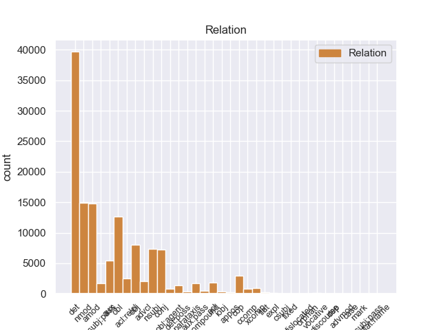
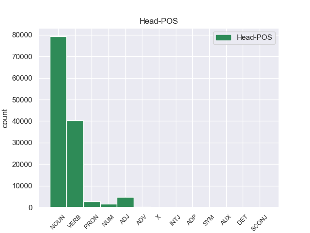
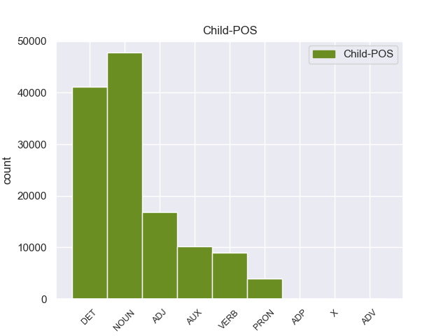

Distribution of features within this leaf



Morphosyntax Rules sorted by frequency.
- When the dependent token is the determiner(det) of the head token, and the head token is NOUN the Number needs to be Sing.
1 Mohammad _ _ _ _ 0 _ _ _
2 Khatami _ _ _ _ 0 _ _ _
3 , _ _ _ _ 0 _ _ _
4 il _ _ _ _ 0 _ _ _
5 presidente _ _ _ _ 0 _ _ _
6 di _ _ _ _ 0 _ _ _
7 l’ _ _ _ _ 0 _ _ _
8 Iran _ _ _ _ 0 _ _ _
9 , _ _ _ _ 0 _ _ _
10 si _ _ _ _ 0 _ _ _
11 è _ _ _ _ 0 _ _ _
12 impegnato _ _ _ _ 0 _ _ _
13 a _ _ _ _ 0 _ _ _
14 ricostruire _ _ _ _ 0 _ _ _
15 il _ _ _ _ 0 _ _ _
16 centro _ _ _ _ 0 _ _ _
17 di _ _ _ _ 0 _ _ _
18 la il DET RD Definite=Def|Gender=Fem|Number=Sing|PronType=Art 19 det 19:det _
19 città città NOUN S Gender=Fem 0 _ _ _
20 di _ _ _ _ 0 _ _ _
21 Bam _ _ _ _ 0 _ _ _
22 entro _ _ _ _ 0 _ _ _
23 2 _ _ _ _ 0 _ _ _
24 anni _ _ _ _ 0 _ _ _
25 . _ _ _ _ 0 _ _ _
1 Gli _ _ _ _ 0 _ _ _
2 edifici _ _ _ _ 0 _ _ _
3 di _ _ _ _ 0 _ _ _
4 il _ _ _ _ 0 _ _ _
5 centro _ _ _ _ 0 _ _ _
6 storico _ _ _ _ 0 _ _ _
7 erano _ _ _ _ 0 _ _ _
8 costruiti _ _ _ _ 0 _ _ _
9 con _ _ _ _ 0 _ _ _
10 l’ _ _ _ _ 0 _ _ _
11 argilla argilla NOUN S Gender=Fem|Number=Sing 0 _ _ _
12 rossa _ _ _ _ 0 _ _ _
13 di _ _ _ _ 0 _ _ _
14 il _ _ _ _ 0 _ _ _
15 deserto deserto NOUN S Gender=Masc|Number=Sing 11 nmod 11:nmod:di SpaceAfter=No
16 , _ _ _ _ 0 _ _ _
17 un _ _ _ _ 0 _ _ _
18 materiale _ _ _ _ 0 _ _ _
19 molto _ _ _ _ 0 _ _ _
20 fragile _ _ _ _ 0 _ _ _
21 . _ _ _ _ 0 _ _ _
1 Gli _ _ _ _ 0 _ _ _
2 edifici _ _ _ _ 0 _ _ _
3 di _ _ _ _ 0 _ _ _
4 il _ _ _ _ 0 _ _ _
5 centro _ _ _ _ 0 _ _ _
6 storico _ _ _ _ 0 _ _ _
7 erano _ _ _ _ 0 _ _ _
8 costruiti _ _ _ _ 0 _ _ _
9 con _ _ _ _ 0 _ _ _
10 l’ _ _ _ _ 0 _ _ _
11 argilla _ _ _ _ 0 _ _ _
12 rossa _ _ _ _ 0 _ _ _
13 di _ _ _ _ 0 _ _ _
14 il _ _ _ _ 0 _ _ _
15 deserto _ _ _ _ 0 _ _ _
16 , _ _ _ _ 0 _ _ _
17 un _ _ _ _ 0 _ _ _
18 materiale materiale NOUN S Gender=Masc|Number=Sing 0 _ _ _
19 molto _ _ _ _ 0 _ _ _
20 fragile fragile ADJ A Number=Sing 18 amod 18:amod SpaceAfter=No
21 . _ _ _ _ 0 _ _ _
1 Gli _ _ _ _ 0 _ _ _
2 edifici _ _ _ _ 0 _ _ _
3 di _ _ _ _ 0 _ _ _
4 il _ _ _ _ 0 _ _ _
5 centro _ _ _ _ 0 _ _ _
6 storico _ _ _ _ 0 _ _ _
7 erano _ _ _ _ 0 _ _ _
8 costruiti costruire VERB V Gender=Masc|Number=Plur|Tense=Past|VerbForm=Part 0 _ _ _
9 con _ _ _ _ 0 _ _ _
10 l’ _ _ _ _ 0 _ _ _
11 argilla argilla NOUN S Gender=Fem|Number=Sing 8 obl 8:obl:con _
12 rossa _ _ _ _ 0 _ _ _
13 di _ _ _ _ 0 _ _ _
14 il _ _ _ _ 0 _ _ _
15 deserto _ _ _ _ 0 _ _ _
16 , _ _ _ _ 0 _ _ _
17 un _ _ _ _ 0 _ _ _
18 materiale _ _ _ _ 0 _ _ _
19 molto _ _ _ _ 0 _ _ _
20 fragile _ _ _ _ 0 _ _ _
21 . _ _ _ _ 0 _ _ _
1 Mohammad _ _ _ _ 0 _ _ _
2 Khatami _ _ _ _ 0 _ _ _
3 , _ _ _ _ 0 _ _ _
4 il _ _ _ _ 0 _ _ _
5 presidente _ _ _ _ 0 _ _ _
6 di _ _ _ _ 0 _ _ _
7 l’ _ _ _ _ 0 _ _ _
8 Iran _ _ _ _ 0 _ _ _
9 , _ _ _ _ 0 _ _ _
10 si _ _ _ _ 0 _ _ _
11 è _ _ _ _ 0 _ _ _
12 impegnato _ _ _ _ 0 _ _ _
13 a _ _ _ _ 0 _ _ _
14 ricostruire ricostruire VERB V VerbForm=Inf 0 _ _ _
15 il _ _ _ _ 0 _ _ _
16 centro centro NOUN S Gender=Masc|Number=Sing 14 obj 14:obj _
17 di _ _ _ _ 0 _ _ _
18 la _ _ _ _ 0 _ _ _
19 città _ _ _ _ 0 _ _ _
20 di _ _ _ _ 0 _ _ _
21 Bam _ _ _ _ 0 _ _ _
22 entro _ _ _ _ 0 _ _ _
23 2 _ _ _ _ 0 _ _ _
24 anni _ _ _ _ 0 _ _ _
25 . _ _ _ _ 0 _ _ _
1 Se _ _ _ _ 0 _ _ _
2 il _ _ _ _ 0 _ _ _
3 terremoto _ _ _ _ 0 _ _ _
4 è _ _ _ _ 0 _ _ _
5 molto _ _ _ _ 0 _ _ _
6 forte _ _ _ _ 0 _ _ _
7 , _ _ _ _ 0 _ _ _
8 la _ _ _ _ 0 _ _ _
9 terra terra NOUN S Gender=Fem|Number=Sing 11 nsubj 11:nsubj _
10 si _ _ _ _ 0 _ _ _
11 muove muovere VERB V Mood=Ind|Number=Sing|Person=3|Tense=Pres|VerbForm=Fin 0 _ _ _
12 molto _ _ _ _ 0 _ _ _
13 e _ _ _ _ 0 _ _ _
14 in _ _ _ _ 0 _ _ _
15 fretta _ _ _ _ 0 _ _ _
16 . _ _ _ _ 0 _ _ _
1 Mohammad _ _ _ _ 0 _ _ _
2 Khatami _ _ _ _ 0 _ _ _
3 , _ _ _ _ 0 _ _ _
4 il _ _ _ _ 0 _ _ _
5 presidente _ _ _ _ 0 _ _ _
6 di _ _ _ _ 0 _ _ _
7 l’ _ _ _ _ 0 _ _ _
8 Iran _ _ _ _ 0 _ _ _
9 , _ _ _ _ 0 _ _ _
10 si _ _ _ _ 0 _ _ _
11 è essere AUX VA Mood=Ind|Number=Sing|Person=3|Tense=Pres|VerbForm=Fin 12 aux 12:aux _
12 impegnato impegnare VERB V Gender=Masc|Number=Sing|Tense=Past|VerbForm=Part 0 _ _ _
13 a _ _ _ _ 0 _ _ _
14 ricostruire _ _ _ _ 0 _ _ _
15 il _ _ _ _ 0 _ _ _
16 centro _ _ _ _ 0 _ _ _
17 di _ _ _ _ 0 _ _ _
18 la _ _ _ _ 0 _ _ _
19 città _ _ _ _ 0 _ _ _
20 di _ _ _ _ 0 _ _ _
21 Bam _ _ _ _ 0 _ _ _
22 entro _ _ _ _ 0 _ _ _
23 2 _ _ _ _ 0 _ _ _
24 anni _ _ _ _ 0 _ _ _
25 . _ _ _ _ 0 _ _ _
1 Su _ _ _ _ 0 _ _ _
2 le _ _ _ _ 0 _ _ _
3 barche _ _ _ _ 0 _ _ _
4 i _ _ _ _ 0 _ _ _
5 turisti _ _ _ _ 0 _ _ _
6 possono _ _ _ _ 0 _ _ _
7 ascoltare _ _ _ _ 0 _ _ _
8 la _ _ _ _ 0 _ _ _
9 descrizione descrizione NOUN S Gender=Fem|Number=Sing 0 _ _ _
10 e _ _ _ _ 0 _ _ _
11 la _ _ _ _ 0 _ _ _
12 storia storia NOUN S Gender=Fem|Number=Sing 9 conj 7:obj|9:conj:e _
13 di _ _ _ _ 0 _ _ _
14 i _ _ _ _ 0 _ _ _
15 monumenti _ _ _ _ 0 _ _ _
16 che _ _ _ _ 0 _ _ _
17 si _ _ _ _ 0 _ _ _
18 vedono _ _ _ _ 0 _ _ _
19 da _ _ _ _ 0 _ _ _
20 il _ _ _ _ 0 _ _ _
21 fiume _ _ _ _ 0 _ _ _
22 . _ _ _ _ 0 _ _ _
1 Il _ _ _ _ 0 _ _ _
2 centro _ _ _ _ 0 _ _ _
3 storico _ _ _ _ 0 _ _ _
4 era _ _ _ _ 0 _ _ _
5 la _ _ _ _ 0 _ _ _
6 parte parte NOUN S Gender=Fem|Number=Sing 0 _ _ _
7 più _ _ _ _ 0 _ _ _
8 antica _ _ _ _ 0 _ _ _
9 di _ _ _ _ 0 _ _ _
10 Bam _ _ _ _ 0 _ _ _
11 che _ _ _ _ 0 _ _ _
12 era _ _ _ _ 0 _ _ _
13 patrimonio patrimonio NOUN S Gender=Masc|Number=Sing 6 acl:relcl 6:acl:relcl _
14 artistico _ _ _ _ 0 _ _ _
15 di _ _ _ _ 0 _ _ _
16 tutta _ _ _ _ 0 _ _ _
17 l’ _ _ _ _ 0 _ _ _
18 umanità _ _ _ _ 0 _ _ _
19 . _ _ _ _ 0 _ _ _
1 Durante _ _ _ _ 0 _ _ _
2 il _ _ _ _ 0 _ _ _
3 terremoto _ _ _ _ 0 _ _ _
4 in _ _ _ _ 0 _ _ _
5 Iran _ _ _ _ 0 _ _ _
6 , _ _ _ _ 0 _ _ _
7 sono _ _ _ _ 0 _ _ _
8 morte morire VERB V Gender=Fem|Number=Plur|Tense=Past|VerbForm=Part 0 _ _ _
9 moltissime _ _ _ _ 0 _ _ _
10 persone _ _ _ _ 0 _ _ _
11 e _ _ _ _ 0 _ _ _
12 il _ _ _ _ 0 _ _ _
13 centro _ _ _ _ 0 _ _ _
14 storico _ _ _ _ 0 _ _ _
15 di _ _ _ _ 0 _ _ _
16 la _ _ _ _ 0 _ _ _
17 città _ _ _ _ 0 _ _ _
18 di _ _ _ _ 0 _ _ _
19 Bam _ _ _ _ 0 _ _ _
20 è _ _ _ _ 0 _ _ _
21 stato _ _ _ _ 0 _ _ _
22 completamente _ _ _ _ 0 _ _ _
23 distrutto distruggere VERB V Gender=Masc|Number=Sing|Tense=Past|VerbForm=Part 8 conj 8:conj:e SpaceAfter=No
24 . _ _ _ _ 0 _ _ _
1 Durante _ _ _ _ 0 _ _ _
2 il _ _ _ _ 0 _ _ _
3 terremoto _ _ _ _ 0 _ _ _
4 in _ _ _ _ 0 _ _ _
5 Iran _ _ _ _ 0 _ _ _
6 , _ _ _ _ 0 _ _ _
7 sono _ _ _ _ 0 _ _ _
8 morte _ _ _ _ 0 _ _ _
9 moltissime _ _ _ _ 0 _ _ _
10 persone _ _ _ _ 0 _ _ _
11 e _ _ _ _ 0 _ _ _
12 il _ _ _ _ 0 _ _ _
13 centro _ _ _ _ 0 _ _ _
14 storico _ _ _ _ 0 _ _ _
15 di _ _ _ _ 0 _ _ _
16 la _ _ _ _ 0 _ _ _
17 città _ _ _ _ 0 _ _ _
18 di _ _ _ _ 0 _ _ _
19 Bam _ _ _ _ 0 _ _ _
20 è _ _ _ _ 0 _ _ _
21 stato essere AUX VA Gender=Masc|Number=Sing|Tense=Past|VerbForm=Part 23 aux:pass 23:aux:pass _
22 completamente _ _ _ _ 0 _ _ _
23 distrutto distruggere VERB V Gender=Masc|Number=Sing|Tense=Past|VerbForm=Part 0 _ _ _
24 . _ _ _ _ 0 _ _ _
1 Quando _ _ _ _ 0 _ _ _
2 il _ _ _ _ 0 _ _ _
3 terremoto _ _ _ _ 0 _ _ _
4 è _ _ _ _ 0 _ _ _
5 forte forte ADJ A Number=Sing 8 advcl 8:advcl:quando SpaceAfter=No
6 , _ _ _ _ 0 _ _ _
7 si _ _ _ _ 0 _ _ _
8 rovinano rovinare VERB V Mood=Ind|Number=Plur|Person=3|Tense=Pres|VerbForm=Fin 0 _ _ _
9 o _ _ _ _ 0 _ _ _
10 crollano _ _ _ _ 0 _ _ _
11 anche _ _ _ _ 0 _ _ _
12 le _ _ _ _ 0 _ _ _
13 case _ _ _ _ 0 _ _ _
14 e _ _ _ _ 0 _ _ _
15 i _ _ _ _ 0 _ _ _
16 palazzi _ _ _ _ 0 _ _ _
17 . _ _ _ _ 0 _ _ _
1 Durante _ _ _ _ 0 _ _ _
2 il _ _ _ _ 0 _ _ _
3 terremoto _ _ _ _ 0 _ _ _
4 in _ _ _ _ 0 _ _ _
5 Iran _ _ _ _ 0 _ _ _
6 , _ _ _ _ 0 _ _ _
7 sono _ _ _ _ 0 _ _ _
8 morte _ _ _ _ 0 _ _ _
9 moltissime _ _ _ _ 0 _ _ _
10 persone _ _ _ _ 0 _ _ _
11 e _ _ _ _ 0 _ _ _
12 il _ _ _ _ 0 _ _ _
13 centro centro NOUN S Gender=Masc|Number=Sing 23 nsubj:pass 23:nsubj:pass _
14 storico _ _ _ _ 0 _ _ _
15 di _ _ _ _ 0 _ _ _
16 la _ _ _ _ 0 _ _ _
17 città _ _ _ _ 0 _ _ _
18 di _ _ _ _ 0 _ _ _
19 Bam _ _ _ _ 0 _ _ _
20 è _ _ _ _ 0 _ _ _
21 stato _ _ _ _ 0 _ _ _
22 completamente _ _ _ _ 0 _ _ _
23 distrutto distruggere VERB V Gender=Masc|Number=Sing|Tense=Past|VerbForm=Part 0 _ _ _
24 . _ _ _ _ 0 _ _ _
1 Per _ _ _ _ 0 _ _ _
2 visitare _ _ _ _ 0 _ _ _
3 le _ _ _ _ 0 _ _ _
4 mostre _ _ _ _ 0 _ _ _
5 possiamo _ _ _ _ 0 _ _ _
6 acquistare _ _ _ _ 0 _ _ _
7 il _ _ _ _ 0 _ _ _
8 biglietto _ _ _ _ 0 _ _ _
9 il _ _ _ _ 0 _ _ _
10 giorno _ _ _ _ 0 _ _ _
11 stesso _ _ _ _ 0 _ _ _
12 di _ _ _ _ 0 _ _ _
13 la _ _ _ _ 0 _ _ _
14 nostra nostro DET AP Gender=Fem|Number=Sing|Poss=Yes|PronType=Prs 15 det:poss 15:det:poss _
15 visita visita NOUN S Gender=Fem|Number=Sing 0 _ _ _
16 in _ _ _ _ 0 _ _ _
17 le _ _ _ _ 0 _ _ _
18 sedi _ _ _ _ 0 _ _ _
19 di _ _ _ _ 0 _ _ _
20 le _ _ _ _ 0 _ _ _
21 varie _ _ _ _ 0 _ _ _
22 mostre _ _ _ _ 0 _ _ _
23 . _ _ _ _ 0 _ _ _
1 Inoltre _ _ _ _ 0 _ _ _
2 , _ _ _ _ 0 _ _ _
3 da _ _ _ _ 0 _ _ _
4 quest’ _ _ _ _ 0 _ _ _
5 anno _ _ _ _ 0 _ _ _
6 i _ _ _ _ 0 _ _ _
7 piloti _ _ _ _ 0 _ _ _
8 fanno _ _ _ _ 0 _ _ _
9 i _ _ _ _ 0 _ _ _
10 giri _ _ _ _ 0 _ _ _
11 di _ _ _ _ 0 _ _ _
12 qualifica _ _ _ _ 0 _ _ _
13 uno _ _ _ _ 0 _ _ _
14 a _ _ _ _ 0 _ _ _
15 la _ _ _ _ 0 _ _ _
16 volta _ _ _ _ 0 _ _ _
17 , _ _ _ _ 0 _ _ _
18 secondo _ _ _ _ 0 _ _ _
19 l’ _ _ _ _ 0 _ _ _
20 ordine ordine NOUN S Gender=Masc|Number=Sing 0 _ _ _
21 stabilito stabilire VERB V Gender=Masc|Number=Sing|Tense=Past|VerbForm=Part 20 acl 20:acl _
22 da _ _ _ _ 0 _ _ _
23 i _ _ _ _ 0 _ _ _
24 rappresentanti _ _ _ _ 0 _ _ _
25 di _ _ _ _ 0 _ _ _
26 la _ _ _ _ 0 _ _ _
27 FIA _ _ _ _ 0 _ _ _
28 . _ _ _ _ 0 _ _ _
1 Il _ _ _ _ 0 _ _ _
2 centro _ _ _ _ 0 _ _ _
3 storico _ _ _ _ 0 _ _ _
4 era _ _ _ _ 0 _ _ _
5 la _ _ _ _ 0 _ _ _
6 parte _ _ _ _ 0 _ _ _
7 più _ _ _ _ 0 _ _ _
8 antica _ _ _ _ 0 _ _ _
9 di _ _ _ _ 0 _ _ _
10 Bam _ _ _ _ 0 _ _ _
11 che _ _ _ _ 0 _ _ _
12 era essere AUX V Mood=Ind|Number=Sing|Person=3|Tense=Imp|VerbForm=Fin 13 cop 13:cop _
13 patrimonio patrimonio NOUN S Gender=Masc|Number=Sing 0 _ _ _
14 artistico _ _ _ _ 0 _ _ _
15 di _ _ _ _ 0 _ _ _
16 tutta _ _ _ _ 0 _ _ _
17 l’ _ _ _ _ 0 _ _ _
18 umanità _ _ _ _ 0 _ _ _
19 . _ _ _ _ 0 _ _ _
1 Il il DET RD Definite=Def|Gender=Masc|Number=Sing|PronType=Art 2 det 2:det _
2 25 25 NUM N NumType=Card 0 _ _ _
3 dicembre _ _ _ _ 0 _ _ _
4 2003 _ _ _ _ 0 _ _ _
5 , _ _ _ _ 0 _ _ _
6 in _ _ _ _ 0 _ _ _
7 il _ _ _ _ 0 _ _ _
8 sud _ _ _ _ 0 _ _ _
9 di _ _ _ _ 0 _ _ _
10 l’ _ _ _ _ 0 _ _ _
11 Iran _ _ _ _ 0 _ _ _
12 c’ _ _ _ _ 0 _ _ _
13 è _ _ _ _ 0 _ _ _
14 stato _ _ _ _ 0 _ _ _
15 un _ _ _ _ 0 _ _ _
16 terremoto _ _ _ _ 0 _ _ _
17 molto _ _ _ _ 0 _ _ _
18 grave _ _ _ _ 0 _ _ _
19 . _ _ _ _ 0 _ _ _
1 Il _ _ _ _ 0 _ _ _
2 riso _ _ _ _ 0 _ _ _
3 è _ _ _ _ 0 _ _ _
4 ricco _ _ _ _ 0 _ _ _
5 di _ _ _ _ 0 _ _ _
6 molti _ _ _ _ 0 _ _ _
7 elementi _ _ _ _ 0 _ _ _
8 nutritivi _ _ _ _ 0 _ _ _
9 , _ _ _ _ 0 _ _ _
10 preziosi prezioso ADJ A Gender=Masc|Number=Plur 0 _ _ _
11 per _ _ _ _ 0 _ _ _
12 il _ _ _ _ 0 _ _ _
13 nostro _ _ _ _ 0 _ _ _
14 organismo organismo NOUN S Gender=Masc|Number=Sing 10 obl 10:obl:per SpaceAfter=No
15 , _ _ _ _ 0 _ _ _
16 come _ _ _ _ 0 _ _ _
17 le _ _ _ _ 0 _ _ _
18 proteine _ _ _ _ 0 _ _ _
19 , _ _ _ _ 0 _ _ _
20 i _ _ _ _ 0 _ _ _
21 carboidrati _ _ _ _ 0 _ _ _
22 , _ _ _ _ 0 _ _ _
23 le _ _ _ _ 0 _ _ _
24 vitamine _ _ _ _ 0 _ _ _
25 e _ _ _ _ 0 _ _ _
26 i _ _ _ _ 0 _ _ _
27 sali _ _ _ _ 0 _ _ _
28 minerali _ _ _ _ 0 _ _ _
29 . _ _ _ _ 0 _ _ _
1 Quando _ _ _ _ 0 _ _ _
2 il _ _ _ _ 0 _ _ _
3 terremoto _ _ _ _ 0 _ _ _
4 è essere AUX V Mood=Ind|Number=Sing|Person=3|Tense=Pres|VerbForm=Fin 5 cop 5:cop _
5 forte forte ADJ A Number=Sing 0 _ _ _
6 , _ _ _ _ 0 _ _ _
7 si _ _ _ _ 0 _ _ _
8 rovinano _ _ _ _ 0 _ _ _
9 o _ _ _ _ 0 _ _ _
10 crollano _ _ _ _ 0 _ _ _
11 anche _ _ _ _ 0 _ _ _
12 le _ _ _ _ 0 _ _ _
13 case _ _ _ _ 0 _ _ _
14 e _ _ _ _ 0 _ _ _
15 i _ _ _ _ 0 _ _ _
16 palazzi _ _ _ _ 0 _ _ _
17 . _ _ _ _ 0 _ _ _
1 La _ _ _ _ 0 _ _ _
2 Costituzione _ _ _ _ 0 _ _ _
3 italiana _ _ _ _ 0 _ _ _
4 prevede _ _ _ _ 0 _ _ _
5 4 _ _ _ _ 0 _ _ _
6 tipi _ _ _ _ 0 _ _ _
7 di _ _ _ _ 0 _ _ _
8 referendum _ _ _ _ 0 _ _ _
9 : _ _ _ _ 0 _ _ _
10 abrogativo abrogativo ADJ A Gender=Masc|Number=Sing 0 _ _ _
11 , _ _ _ _ 0 _ _ _
12 territoriale _ _ _ _ 0 _ _ _
13 , _ _ _ _ 0 _ _ _
14 consultivo _ _ _ _ 0 _ _ _
15 e _ _ _ _ 0 _ _ _
16 costituzionale costituzionale ADJ A Number=Sing 10 conj 6:amod|10:conj:e SpaceAfter=No
17 . _ _ _ _ 0 _ _ _
1 Prima _ _ _ _ 0 _ _ _
2 di _ _ _ _ 0 _ _ _
3 diventare diventare VERB V VerbForm=Inf 0 _ _ _
4 capo capo NOUN S Gender=Masc|Number=Sing 3 xcomp 3:xcomp _
5 di _ _ _ _ 0 _ _ _
6 il _ _ _ _ 0 _ _ _
7 governo _ _ _ _ 0 _ _ _
8 di _ _ _ _ 0 _ _ _
9 la _ _ _ _ 0 _ _ _
10 Finlandia _ _ _ _ 0 _ _ _
11 , _ _ _ _ 0 _ _ _
12 Aneli _ _ _ _ 0 _ _ _
13 Jaatteenmaki _ _ _ _ 0 _ _ _
14 lavorava _ _ _ _ 0 _ _ _
15 come _ _ _ _ 0 _ _ _
16 avvocato _ _ _ _ 0 _ _ _
17 . _ _ _ _ 0 _ _ _
1 La _ _ _ _ 0 _ _ _
2 capitale _ _ _ _ 0 _ _ _
3 di _ _ _ _ 0 _ _ _
4 Haiti _ _ _ _ 0 _ _ _
5 è _ _ _ _ 0 _ _ _
6 Port-au-Prince _ _ _ _ 0 _ _ _
7 Haiti _ _ _ _ 0 _ _ _
8 è essere AUX V Mood=Ind|Number=Sing|Person=3|Tense=Pres|VerbForm=Fin 9 cop 9:cop _
9 uno uno PRON PI Gender=Masc|Number=Sing|PronType=Ind 0 _ _ _
10 di _ _ _ _ 0 _ _ _
11 i _ _ _ _ 0 _ _ _
12 paesi _ _ _ _ 0 _ _ _
13 più _ _ _ _ 0 _ _ _
14 poveri _ _ _ _ 0 _ _ _
15 di _ _ _ _ 0 _ _ _
16 il _ _ _ _ 0 _ _ _
17 mondo _ _ _ _ 0 _ _ _
18 : _ _ _ _ 0 _ _ _
1 Invece _ _ _ _ 0 _ _ _
2 Agassi _ _ _ _ 0 _ _ _
3 è _ _ _ _ 0 _ _ _
4 stato _ _ _ _ 0 _ _ _
5 eliminato eliminare VERB V Gender=Masc|Number=Sing|Tense=Past|VerbForm=Part 0 _ _ _
6 da _ _ _ _ 0 _ _ _
7 il _ _ _ _ 0 _ _ _
8 tennista tennista NOUN S Gender=Masc|Number=Sing 5 obl:agent 5:obl:agent:da _
9 spagnolo _ _ _ _ 0 _ _ _
10 David _ _ _ _ 0 _ _ _
11 Ferrer _ _ _ _ 0 _ _ _
12 . _ _ _ _ 0 _ _ _
1 Quindi _ _ _ _ 0 _ _ _
2 , _ _ _ _ 0 _ _ _
3 spesso _ _ _ _ 0 _ _ _
4 i _ _ _ _ 0 _ _ _
5 giudici _ _ _ _ 0 _ _ _
6 di _ _ _ _ 0 _ _ _
7 le _ _ _ _ 0 _ _ _
8 gare _ _ _ _ 0 _ _ _
9 decidono _ _ _ _ 0 _ _ _
10 di _ _ _ _ 0 _ _ _
11 fare _ _ _ _ 0 _ _ _
12 i _ _ _ _ 0 _ _ _
13 controlli _ _ _ _ 0 _ _ _
14 antidoping _ _ _ _ 0 _ _ _
15 , _ _ _ _ 0 _ _ _
16 cioè _ _ _ _ 0 _ _ _
17 di _ _ _ _ 0 _ _ _
18 verificare verificare VERB V VerbForm=Inf 0 _ _ _
19 se _ _ _ _ 0 _ _ _
20 gli _ _ _ _ 0 _ _ _
21 atleti _ _ _ _ 0 _ _ _
22 hanno _ _ _ _ 0 _ _ _
23 preso prendere VERB V Gender=Masc|Number=Sing|Tense=Past|VerbForm=Part 18 ccomp 18:ccomp _
24 sostanze _ _ _ _ 0 _ _ _
25 vietate _ _ _ _ 0 _ _ _
26 . _ _ _ _ 0 _ _ _
1 Il _ _ _ _ 0 _ _ _
2 centro centro NOUN S Gender=Masc|Number=Sing 6 nsubj 6:nsubj _
3 storico _ _ _ _ 0 _ _ _
4 era _ _ _ _ 0 _ _ _
5 la _ _ _ _ 0 _ _ _
6 parte parte NOUN S Gender=Fem|Number=Sing 0 _ _ _
7 più _ _ _ _ 0 _ _ _
8 antica _ _ _ _ 0 _ _ _
9 di _ _ _ _ 0 _ _ _
10 Bam _ _ _ _ 0 _ _ _
11 che _ _ _ _ 0 _ _ _
12 era _ _ _ _ 0 _ _ _
13 patrimonio _ _ _ _ 0 _ _ _
14 artistico _ _ _ _ 0 _ _ _
15 di _ _ _ _ 0 _ _ _
16 tutta _ _ _ _ 0 _ _ _
17 l’ _ _ _ _ 0 _ _ _
18 umanità _ _ _ _ 0 _ _ _
19 . _ _ _ _ 0 _ _ _
1 Quando _ _ _ _ 0 _ _ _
2 il _ _ _ _ 0 _ _ _
3 terremoto terremoto NOUN S Gender=Masc|Number=Sing 5 nsubj 5:nsubj _
4 è _ _ _ _ 0 _ _ _
5 forte forte ADJ A Number=Sing 0 _ _ _
6 , _ _ _ _ 0 _ _ _
7 si _ _ _ _ 0 _ _ _
8 rovinano _ _ _ _ 0 _ _ _
9 o _ _ _ _ 0 _ _ _
10 crollano _ _ _ _ 0 _ _ _
11 anche _ _ _ _ 0 _ _ _
12 le _ _ _ _ 0 _ _ _
13 case _ _ _ _ 0 _ _ _
14 e _ _ _ _ 0 _ _ _
15 i _ _ _ _ 0 _ _ _
16 palazzi _ _ _ _ 0 _ _ _
17 . _ _ _ _ 0 _ _ _
1 Il _ _ _ _ 0 _ _ _
2 premio premio NOUN S Gender=Masc|Number=Sing 5 nsubj 5:nsubj _
3 Nobel _ _ _ _ 0 _ _ _
4 è _ _ _ _ 0 _ _ _
5 uno uno PRON PI Gender=Masc|Number=Sing|PronType=Ind 0 _ _ _
6 di _ _ _ _ 0 _ _ _
7 i _ _ _ _ 0 _ _ _
8 premi _ _ _ _ 0 _ _ _
9 più _ _ _ _ 0 _ _ _
10 importanti _ _ _ _ 0 _ _ _
11 di _ _ _ _ 0 _ _ _
12 il _ _ _ _ 0 _ _ _
13 mondo _ _ _ _ 0 _ _ _
14 . _ _ _ _ 0 _ _ _
1 In _ _ _ _ 0 _ _ _
2 il _ _ _ _ 0 _ _ _
3 Parlamento _ _ _ _ 0 _ _ _
4 Europeo _ _ _ _ 0 _ _ _
5 è _ _ _ _ 0 _ _ _
6 stato _ _ _ _ 0 _ _ _
7 Presidente _ _ _ _ 0 _ _ _
8 di _ _ _ _ 0 _ _ _
9 la _ _ _ _ 0 _ _ _
10 Commissione Commissione NOUN S Gender=Fem|Number=Sing 0 _ _ _
11 Affari Affari NOUN S Gender=Fem|Number=Sing 10 compound 10:compound _
12 Costituzionali _ _ _ _ 0 _ _ _
13 . _ _ _ _ 0 _ _ _
1 Questo _ _ _ _ 0 _ _ _
2 tipo _ _ _ _ 0 _ _ _
3 di _ _ _ _ 0 _ _ _
4 riso _ _ _ _ 0 _ _ _
5 è _ _ _ _ 0 _ _ _
6 indicato _ _ _ _ 0 _ _ _
7 per _ _ _ _ 0 _ _ _
8 chi chi PRON PR Number=Sing|PronType=Rel 0 _ _ _
9 ha avere VERB V Mood=Ind|Number=Sing|Person=3|Tense=Pres|VerbForm=Fin 8 acl:relcl 8:acl:relcl _
10 disturbi _ _ _ _ 0 _ _ _
11 di _ _ _ _ 0 _ _ _
12 digestione _ _ _ _ 0 _ _ _
13 , _ _ _ _ 0 _ _ _
14 per _ _ _ _ 0 _ _ _
15 gli _ _ _ _ 0 _ _ _
16 anziani _ _ _ _ 0 _ _ _
17 e _ _ _ _ 0 _ _ _
18 i _ _ _ _ 0 _ _ _
19 bambini _ _ _ _ 0 _ _ _
20 . _ _ _ _ 0 _ _ _
1 Referendum _ _ _ _ 0 _ _ _
2 è _ _ _ _ 0 _ _ _
3 una _ _ _ _ 0 _ _ _
4 parola _ _ _ _ 0 _ _ _
5 latina _ _ _ _ 0 _ _ _
6 e _ _ _ _ 0 _ _ _
7 indica _ _ _ _ 0 _ _ _
8 la _ _ _ _ 0 _ _ _
9 votazione _ _ _ _ 0 _ _ _
10 con _ _ _ _ 0 _ _ _
11 la il DET RD Definite=Def|Gender=Fem|Number=Sing|PronType=Art 12 det 12:det _
12 quale quale PRON PR Number=Sing|PronType=Rel 0 _ _ _
13 tutti _ _ _ _ 0 _ _ _
14 i _ _ _ _ 0 _ _ _
15 cittadini _ _ _ _ 0 _ _ _
16 decidono _ _ _ _ 0 _ _ _
17 direttamente _ _ _ _ 0 _ _ _
18 qualcosa _ _ _ _ 0 _ _ _
19 . _ _ _ _ 0 _ _ _
1 Il _ _ _ _ 0 _ _ _
2 25 25 NUM N NumType=Card 0 _ _ _
3 dicembre dicembre NOUN S Gender=Masc|Number=Sing 2 flat 2:flat _
4 2003 _ _ _ _ 0 _ _ _
5 , _ _ _ _ 0 _ _ _
6 in _ _ _ _ 0 _ _ _
7 il _ _ _ _ 0 _ _ _
8 sud _ _ _ _ 0 _ _ _
9 di _ _ _ _ 0 _ _ _
10 l’ _ _ _ _ 0 _ _ _
11 Iran _ _ _ _ 0 _ _ _
12 c’ _ _ _ _ 0 _ _ _
13 è _ _ _ _ 0 _ _ _
14 stato _ _ _ _ 0 _ _ _
15 un _ _ _ _ 0 _ _ _
16 terremoto _ _ _ _ 0 _ _ _
17 molto _ _ _ _ 0 _ _ _
18 grave _ _ _ _ 0 _ _ _
19 . _ _ _ _ 0 _ _ _
1 La _ _ _ _ 0 _ _ _
2 nonna _ _ _ _ 0 _ _ _
3 capisce _ _ _ _ 0 _ _ _
4 che _ _ _ _ 0 _ _ _
5 a _ _ _ _ 0 _ _ _
6 Champion _ _ _ _ 0 _ _ _
7 piace _ _ _ _ 0 _ _ _
8 pedalare _ _ _ _ 0 _ _ _
9 , _ _ _ _ 0 _ _ _
10 gli gli PRON PC Clitic=Yes|Gender=Masc|Number=Sing|Person=3|PronType=Prs 11 iobj 11:iobj _
11 regala regalare VERB V Mood=Ind|Number=Sing|Person=3|Tense=Pres|VerbForm=Fin 0 _ _ _
12 un _ _ _ _ 0 _ _ _
13 triciclo _ _ _ _ 0 _ _ _
14 , _ _ _ _ 0 _ _ _
15 così _ _ _ _ 0 _ _ _
16 Champion _ _ _ _ 0 _ _ _
17 può _ _ _ _ 0 _ _ _
18 pedalare _ _ _ _ 0 _ _ _
19 . _ _ _ _ 0 _ _ _
1 In _ _ _ _ 0 _ _ _
2 il _ _ _ _ 0 _ _ _
3 presepe _ _ _ _ 0 _ _ _
4 , _ _ _ _ 0 _ _ _
5 la _ _ _ _ 0 _ _ _
6 statuetta _ _ _ _ 0 _ _ _
7 che _ _ _ _ 0 _ _ _
8 rappresenta _ _ _ _ 0 _ _ _
9 Gesù _ _ _ _ 0 _ _ _
10 Bambino _ _ _ _ 0 _ _ _
11 viene _ _ _ _ 0 _ _ _
12 messa _ _ _ _ 0 _ _ _
13 la _ _ _ _ 0 _ _ _
14 notte notte NOUN S Gender=Fem|Number=Sing 0 _ _ _
15 tra _ _ _ _ 0 _ _ _
16 il _ _ _ _ 0 _ _ _
17 24 _ _ _ _ 0 _ _ _
18 e _ _ _ _ 0 _ _ _
19 il _ _ _ _ 0 _ _ _
20 25 _ _ _ _ 0 _ _ _
21 dicembre _ _ _ _ 0 _ _ _
22 , _ _ _ _ 0 _ _ _
23 quando _ _ _ _ 0 _ _ _
24 è _ _ _ _ 0 _ _ _
25 nato nascere VERB V Gender=Masc|Number=Sing|Tense=Past|VerbForm=Part 14 advcl 14:advcl:quando _
26 Gesù _ _ _ _ 0 _ _ _
27 Bambino _ _ _ _ 0 _ _ _
28 . _ _ _ _ 0 _ _ _
1 Ora _ _ _ _ 0 _ _ _
2 , _ _ _ _ 0 _ _ _
3 le _ _ _ _ 0 _ _ _
4 squadre _ _ _ _ 0 _ _ _
5 automobilistiche _ _ _ _ 0 _ _ _
6 devono _ _ _ _ 0 _ _ _
7 costruire _ _ _ _ 0 _ _ _
8 e _ _ _ _ 0 _ _ _
9 usare _ _ _ _ 0 _ _ _
10 un _ _ _ _ 0 _ _ _
11 solo _ _ _ _ 0 _ _ _
12 motore _ _ _ _ 0 _ _ _
13 , _ _ _ _ 0 _ _ _
14 che _ _ _ _ 0 _ _ _
15 deve _ _ _ _ 0 _ _ _
16 essere _ _ _ _ 0 _ _ _
17 lo lo DET RD Definite=Def|Gender=Masc|Number=Sing|PronType=Art 18 det 18:det _
18 stesso stesso ADJ A Gender=Masc|Number=Sing 0 _ _ _
19 per _ _ _ _ 0 _ _ _
20 il _ _ _ _ 0 _ _ _
21 giro _ _ _ _ 0 _ _ _
22 di _ _ _ _ 0 _ _ _
23 qualifica _ _ _ _ 0 _ _ _
24 e _ _ _ _ 0 _ _ _
25 per _ _ _ _ 0 _ _ _
26 la _ _ _ _ 0 _ _ _
27 gara _ _ _ _ 0 _ _ _
28 . _ _ _ _ 0 _ _ _
1 Gli _ _ _ _ 0 _ _ _
2 edifici _ _ _ _ 0 _ _ _
3 di _ _ _ _ 0 _ _ _
4 il _ _ _ _ 0 _ _ _
5 centro _ _ _ _ 0 _ _ _
6 storico _ _ _ _ 0 _ _ _
7 erano _ _ _ _ 0 _ _ _
8 costruiti _ _ _ _ 0 _ _ _
9 con _ _ _ _ 0 _ _ _
10 l’ _ _ _ _ 0 _ _ _
11 argilla argilla NOUN S Gender=Fem|Number=Sing 0 _ _ _
12 rossa _ _ _ _ 0 _ _ _
13 di _ _ _ _ 0 _ _ _
14 il _ _ _ _ 0 _ _ _
15 deserto _ _ _ _ 0 _ _ _
16 , _ _ _ _ 0 _ _ _
17 un _ _ _ _ 0 _ _ _
18 materiale materiale NOUN S Gender=Masc|Number=Sing 11 appos 11:appos _
19 molto _ _ _ _ 0 _ _ _
20 fragile _ _ _ _ 0 _ _ _
21 . _ _ _ _ 0 _ _ _
1 Durante _ _ _ _ 0 _ _ _
2 la _ _ _ _ 0 _ _ _
3 staffetta _ _ _ _ 0 _ _ _
4 , _ _ _ _ 0 _ _ _
5 i _ _ _ _ 0 _ _ _
6 nuotatori _ _ _ _ 0 _ _ _
7 fanno fare VERB V Mood=Ind|Number=Plur|Person=3|Tense=Pres|VerbForm=Fin 0 _ _ _
8 una _ _ _ _ 0 _ _ _
9 squadra _ _ _ _ 0 _ _ _
10 di _ _ _ _ 0 _ _ _
11 4 _ _ _ _ 0 _ _ _
12 persone _ _ _ _ 0 _ _ _
13 : _ _ _ _ 0 _ _ _
14 ogni _ _ _ _ 0 _ _ _
15 nuotatore _ _ _ _ 0 _ _ _
16 nuota nuotare VERB V Mood=Ind|Number=Sing|Person=3|Tense=Pres|VerbForm=Fin 7 parataxis 7:parataxis _
17 solo _ _ _ _ 0 _ _ _
18 per _ _ _ _ 0 _ _ _
19 una _ _ _ _ 0 _ _ _
20 parte _ _ _ _ 0 _ _ _
21 di _ _ _ _ 0 _ _ _
22 il _ _ _ _ 0 _ _ _
23 percorso _ _ _ _ 0 _ _ _
24 di _ _ _ _ 0 _ _ _
25 gara _ _ _ _ 0 _ _ _
26 . _ _ _ _ 0 _ _ _
1 La _ _ _ _ 0 _ _ _
2 giuria _ _ _ _ 0 _ _ _
3 assegna _ _ _ _ 0 _ _ _
4 anche _ _ _ _ 0 _ _ _
5 altri _ _ _ _ 0 _ _ _
6 premi premio NOUN S Gender=Masc|Number=Plur 0 _ _ _
7 : _ _ _ _ 0 _ _ _
8 a _ _ _ _ 0 _ _ _
9 il _ _ _ _ 0 _ _ _
10 miglior _ _ _ _ 0 _ _ _
11 regista regista NOUN S Gender=Masc|Number=Sing 6 obl 6:obl:a SpaceAfter=No
12 , _ _ _ _ 0 _ _ _
13 a _ _ _ _ 0 _ _ _
14 gli _ _ _ _ 0 _ _ _
15 attori _ _ _ _ 0 _ _ _
16 più _ _ _ _ 0 _ _ _
17 bravi _ _ _ _ 0 _ _ _
18 , _ _ _ _ 0 _ _ _
19 a _ _ _ _ 0 _ _ _
20 la _ _ _ _ 0 _ _ _
21 storia _ _ _ _ 0 _ _ _
22 più _ _ _ _ 0 _ _ _
23 bella _ _ _ _ 0 _ _ _
24 e _ _ _ _ 0 _ _ _
25 alcuni _ _ _ _ 0 _ _ _
26 premi _ _ _ _ 0 _ _ _
27 speciali _ _ _ _ 0 _ _ _
28 . _ _ _ _ 0 _ _ _
1 Inoltre _ _ _ _ 0 _ _ _
2 , _ _ _ _ 0 _ _ _
3 da _ _ _ _ 0 _ _ _
4 quest’ _ _ _ _ 0 _ _ _
5 anno _ _ _ _ 0 _ _ _
6 i _ _ _ _ 0 _ _ _
7 piloti _ _ _ _ 0 _ _ _
8 fanno _ _ _ _ 0 _ _ _
9 i _ _ _ _ 0 _ _ _
10 giri _ _ _ _ 0 _ _ _
11 di _ _ _ _ 0 _ _ _
12 qualifica _ _ _ _ 0 _ _ _
13 uno uno PRON PI Gender=Masc|Number=Sing|PronType=Ind 0 _ _ _
14 a _ _ _ _ 0 _ _ _
15 la _ _ _ _ 0 _ _ _
16 volta volta NOUN S Gender=Fem|Number=Sing 13 nmod 13:nmod:a SpaceAfter=No
17 , _ _ _ _ 0 _ _ _
18 secondo _ _ _ _ 0 _ _ _
19 l’ _ _ _ _ 0 _ _ _
20 ordine _ _ _ _ 0 _ _ _
21 stabilito _ _ _ _ 0 _ _ _
22 da _ _ _ _ 0 _ _ _
23 i _ _ _ _ 0 _ _ _
24 rappresentanti _ _ _ _ 0 _ _ _
25 di _ _ _ _ 0 _ _ _
26 la _ _ _ _ 0 _ _ _
27 FIA _ _ _ _ 0 _ _ _
28 . _ _ _ _ 0 _ _ _
1 Tutti _ _ _ _ 0 _ _ _
2 noi _ _ _ _ 0 _ _ _
3 possiamo _ _ _ _ 0 _ _ _
4 incontrare _ _ _ _ 0 _ _ _
5 grandi _ _ _ _ 0 _ _ _
6 difficoltà _ _ _ _ 0 _ _ _
7 in _ _ _ _ 0 _ _ _
8 il il DET RD Definite=Def|Gender=Masc|Number=Sing|PronType=Art 9 det 9:det _
9 capire capire VERB V VerbForm=Inf 0 _ _ _
10 bene _ _ _ _ 0 _ _ _
11 il _ _ _ _ 0 _ _ _
12 significato _ _ _ _ 0 _ _ _
13 di _ _ _ _ 0 _ _ _
14 alcuni _ _ _ _ 0 _ _ _
15 testi _ _ _ _ 0 _ _ _
16 , _ _ _ _ 0 _ _ _
17 scritti _ _ _ _ 0 _ _ _
18 o _ _ _ _ 0 _ _ _
19 parlati _ _ _ _ 0 _ _ _
20 . _ _ _ _ 0 _ _ _
1 Una _ _ _ _ 0 _ _ _
2 macchina _ _ _ _ 0 _ _ _
3 con _ _ _ _ 0 _ _ _
4 poca _ _ _ _ 0 _ _ _
5 benzina _ _ _ _ 0 _ _ _
6 in _ _ _ _ 0 _ _ _
7 il _ _ _ _ 0 _ _ _
8 serbatoio _ _ _ _ 0 _ _ _
9 pesa _ _ _ _ 0 _ _ _
10 di _ _ _ _ 0 _ _ _
11 meno _ _ _ _ 0 _ _ _
12 e _ _ _ _ 0 _ _ _
13 va _ _ _ _ 0 _ _ _
14 più _ _ _ _ 0 _ _ _
15 veloce veloce ADV B _ 0 _ _ _
16 di _ _ _ _ 0 _ _ _
17 una _ _ _ _ 0 _ _ _
18 macchina macchina NOUN S Gender=Fem|Number=Sing 15 obl 15:obl:di _
19 con _ _ _ _ 0 _ _ _
20 tanta _ _ _ _ 0 _ _ _
21 benzina _ _ _ _ 0 _ _ _
22 in _ _ _ _ 0 _ _ _
23 il _ _ _ _ 0 _ _ _
24 serbatoio _ _ _ _ 0 _ _ _
25 . _ _ _ _ 0 _ _ _
1 E' _ _ _ _ 0 _ _ _
2 utile utile ADJ A Number=Sing 0 _ _ _
3 in _ _ _ _ 0 _ _ _
4 le _ _ _ _ 0 _ _ _
5 diete _ _ _ _ 0 _ _ _
6 dimagranti _ _ _ _ 0 _ _ _
7 perché _ _ _ _ 0 _ _ _
8 toglie togliere VERB V Mood=Ind|Number=Sing|Person=3|Tense=Pres|VerbForm=Fin 2 advcl 2:advcl:perché _
9 la _ _ _ _ 0 _ _ _
10 fame _ _ _ _ 0 _ _ _
11 ed _ _ _ _ 0 _ _ _
12 è _ _ _ _ 0 _ _ _
13 leggero _ _ _ _ 0 _ _ _
14 . _ _ _ _ 0 _ _ _
1 È essere AUX VA Mood=Ind|Number=Sing|Person=3|Tense=Pres|VerbForm=Fin 3 aux 3:aux _
2 stato _ _ _ _ 0 _ _ _
3 segretario segretario NOUN S Gender=Masc|Number=Sing 0 _ _ _
4 di _ _ _ _ 0 _ _ _
5 il _ _ _ _ 0 _ _ _
6 partito _ _ _ _ 0 _ _ _
7 di _ _ _ _ 0 _ _ _
8 la _ _ _ _ 0 _ _ _
9 Rifondazione _ _ _ _ 0 _ _ _
10 Comunista _ _ _ _ 0 _ _ _
11 e _ _ _ _ 0 _ _ _
12 deputato _ _ _ _ 0 _ _ _
13 di _ _ _ _ 0 _ _ _
14 il _ _ _ _ 0 _ _ _
15 Parlamento _ _ _ _ 0 _ _ _
16 italiano _ _ _ _ 0 _ _ _
17 ed _ _ _ _ 0 _ _ _
18 europeo _ _ _ _ 0 _ _ _
19 . _ _ _ _ 0 _ _ _
1 Dopo _ _ _ _ 0 _ _ _
2 , _ _ _ _ 0 _ _ _
3 Pantani _ _ _ _ 0 _ _ _
4 si _ _ _ _ 0 _ _ _
5 è _ _ _ _ 0 _ _ _
6 sentito _ _ _ _ 0 _ _ _
7 umiliato _ _ _ _ 0 _ _ _
8 e _ _ _ _ 0 _ _ _
9 non _ _ _ _ 0 _ _ _
10 aveva _ _ _ _ 0 _ _ _
11 più _ _ _ _ 0 _ _ _
12 fiducia _ _ _ _ 0 _ _ _
13 in _ _ _ _ 0 _ _ _
14 se se PRON PC Clitic=Yes|Person=3|PronType=Prs 0 _ _ _
15 stesso stesso ADJ A Gender=Masc|Number=Sing 14 amod 14:amod SpaceAfter=No
16 . _ _ _ _ 0 _ _ _
1 Secondo _ _ _ _ 0 _ _ _
2 gli _ _ _ _ 0 _ _ _
3 esperti _ _ _ _ 0 _ _ _
4 , _ _ _ _ 0 _ _ _
5 in _ _ _ _ 0 _ _ _
6 gli _ _ _ _ 0 _ _ _
7 ultimi _ _ _ _ 0 _ _ _
8 anni _ _ _ _ 0 _ _ _
9 , _ _ _ _ 0 _ _ _
10 in _ _ _ _ 0 _ _ _
11 alcuni _ _ _ _ 0 _ _ _
12 Paesi _ _ _ _ 0 _ _ _
13 poveri _ _ _ _ 0 _ _ _
14 le _ _ _ _ 0 _ _ _
15 condizioni _ _ _ _ 0 _ _ _
16 di _ _ _ _ 0 _ _ _
17 vita _ _ _ _ 0 _ _ _
18 di _ _ _ _ 0 _ _ _
19 i _ _ _ _ 0 _ _ _
20 bambini _ _ _ _ 0 _ _ _
21 sono _ _ _ _ 0 _ _ _
22 migliorate _ _ _ _ 0 _ _ _
23 un uno DET RI Definite=Ind|Gender=Masc|Number=Sing|PronType=Art 24 det 24:det _
24 po' poco ADV B _ 0 _ _ _
25 . _ _ _ _ 0 _ _ _
1 non _ _ _ _ 0 _ _ _
2 appena _ _ _ _ 0 _ _ _
3 , _ _ _ _ 0 _ _ _
4 però _ _ _ _ 0 _ _ _
5 , _ _ _ _ 0 _ _ _
6 la _ _ _ _ 0 _ _ _
7 crescita _ _ _ _ 0 _ _ _
8 di _ _ _ _ 0 _ _ _
9 il _ _ _ _ 0 _ _ _
10 pil _ _ _ _ 0 _ _ _
11 cinese _ _ _ _ 0 _ _ _
12 ha _ _ _ _ 0 _ _ _
13 rallentato _ _ _ _ 0 _ _ _
14 , _ _ _ _ 0 _ _ _
15 quella _ _ _ _ 0 _ _ _
16 di _ _ _ _ 0 _ _ _
17 il _ _ _ _ 0 _ _ _
18 pil _ _ _ _ 0 _ _ _
19 tedesco _ _ _ _ 0 _ _ _
20 ha _ _ _ _ 0 _ _ _
21 fatto _ _ _ _ 0 _ _ _
22 lo _ _ _ _ 0 _ _ _
23 stesso _ _ _ _ 0 _ _ _
24 , _ _ _ _ 0 _ _ _
25 scendendo _ _ _ _ 0 _ _ _
26 a _ _ _ _ 0 _ _ _
27 il _ _ _ _ 0 _ _ _
28 di _ _ _ _ 0 _ _ _
29 sotto _ _ _ _ 0 _ _ _
30 di _ _ _ _ 0 _ _ _
31 l' il DET RD Definite=Def|Number=Sing|PronType=Art 33 det 33:det _
32 '1 _ _ _ _ 0 _ _ _
33 % % SYM SYM _ 0 _ _ _
34 annuo _ _ _ _ 0 _ _ _
35 . _ _ _ _ 0 _ _ _
1 Ora _ _ _ _ 0 _ _ _
2 , _ _ _ _ 0 _ _ _
3 le _ _ _ _ 0 _ _ _
4 squadre _ _ _ _ 0 _ _ _
5 automobilistiche _ _ _ _ 0 _ _ _
6 devono _ _ _ _ 0 _ _ _
7 costruire _ _ _ _ 0 _ _ _
8 e _ _ _ _ 0 _ _ _
9 usare _ _ _ _ 0 _ _ _
10 un _ _ _ _ 0 _ _ _
11 solo _ _ _ _ 0 _ _ _
12 motore _ _ _ _ 0 _ _ _
13 , _ _ _ _ 0 _ _ _
14 che _ _ _ _ 0 _ _ _
15 deve dovere AUX VM Mood=Ind|Number=Sing|Person=3|Tense=Pres|VerbForm=Fin 18 aux 18:aux _
16 essere _ _ _ _ 0 _ _ _
17 lo _ _ _ _ 0 _ _ _
18 stesso stesso ADJ A Gender=Masc|Number=Sing 0 _ _ _
19 per _ _ _ _ 0 _ _ _
20 il _ _ _ _ 0 _ _ _
21 giro _ _ _ _ 0 _ _ _
22 di _ _ _ _ 0 _ _ _
23 qualifica _ _ _ _ 0 _ _ _
24 e _ _ _ _ 0 _ _ _
25 per _ _ _ _ 0 _ _ _
26 la _ _ _ _ 0 _ _ _
27 gara _ _ _ _ 0 _ _ _
28 . _ _ _ _ 0 _ _ _
1 Prima _ _ _ _ 0 _ _ _
2 , _ _ _ _ 0 _ _ _
3 le _ _ _ _ 0 _ _ _
4 squadre _ _ _ _ 0 _ _ _
5 con _ _ _ _ 0 _ _ _
6 più _ _ _ _ 0 _ _ _
7 soldi _ _ _ _ 0 _ _ _
8 costruivano _ _ _ _ 0 _ _ _
9 e _ _ _ _ 0 _ _ _
10 usavano _ _ _ _ 0 _ _ _
11 due _ _ _ _ 0 _ _ _
12 motori _ _ _ _ 0 _ _ _
13 , _ _ _ _ 0 _ _ _
14 uno uno PRON PI Gender=Masc|Number=Sing|PronType=Ind 0 _ _ _
15 per _ _ _ _ 0 _ _ _
16 il _ _ _ _ 0 _ _ _
17 giro _ _ _ _ 0 _ _ _
18 di _ _ _ _ 0 _ _ _
19 qualifica _ _ _ _ 0 _ _ _
20 e _ _ _ _ 0 _ _ _
21 uno uno PRON PI Gender=Masc|Number=Sing|PronType=Ind 14 conj 12:appos|14:conj:e _
22 per _ _ _ _ 0 _ _ _
23 la _ _ _ _ 0 _ _ _
24 gara _ _ _ _ 0 _ _ _
25 . _ _ _ _ 0 _ _ _
1 Per _ _ _ _ 0 _ _ _
2 gli _ _ _ _ 0 _ _ _
3 stranieri _ _ _ _ 0 _ _ _
4 i _ _ _ _ 0 _ _ _
5 questionari _ _ _ _ 0 _ _ _
6 sono _ _ _ _ 0 _ _ _
7 in _ _ _ _ 0 _ _ _
8 sei _ _ _ _ 0 _ _ _
9 lingue lingua NOUN S Gender=Fem|Number=Plur 0 _ _ _
10 diverse _ _ _ _ 0 _ _ _
11 : _ _ _ _ 0 _ _ _
12 tedesco tedesco NOUN S Gender=Masc|Number=Sing 9 parataxis 9:parataxis SpaceAfter=No
13 , _ _ _ _ 0 _ _ _
14 inglese _ _ _ _ 0 _ _ _
15 , _ _ _ _ 0 _ _ _
16 francese _ _ _ _ 0 _ _ _
17 , _ _ _ _ 0 _ _ _
18 spagnolo _ _ _ _ 0 _ _ _
19 , _ _ _ _ 0 _ _ _
20 arabo _ _ _ _ 0 _ _ _
21 e _ _ _ _ 0 _ _ _
22 portoghese _ _ _ _ 0 _ _ _
23 . _ _ _ _ 0 _ _ _
1 Signor signore NOUN S Gender=Masc|Number=Sing 13 vocative 13:vocative _
2 presidente _ _ _ _ 0 _ _ _
3 , _ _ _ _ 0 _ _ _
4 la _ _ _ _ 0 _ _ _
5 priorità _ _ _ _ 0 _ _ _
6 attribuita _ _ _ _ 0 _ _ _
7 a _ _ _ _ 0 _ _ _
8 i _ _ _ _ 0 _ _ _
9 criteri _ _ _ _ 0 _ _ _
10 finanziari _ _ _ _ 0 _ _ _
11 e _ _ _ _ 0 _ _ _
12 monetari _ _ _ _ 0 _ _ _
13 rafforza rafforzare VERB V Mood=Ind|Number=Sing|Person=3|Tense=Pres|VerbForm=Fin 0 _ _ _
14 il _ _ _ _ 0 _ _ _
15 dilagare _ _ _ _ 0 _ _ _
16 di _ _ _ _ 0 _ _ _
17 le _ _ _ _ 0 _ _ _
18 ineguaglianze _ _ _ _ 0 _ _ _
19 di _ _ _ _ 0 _ _ _
20 ogni _ _ _ _ 0 _ _ _
21 genere _ _ _ _ 0 _ _ _
22 . _ _ _ _ 0 _ _ _
1 Ricavammo _ _ _ _ 0 _ _ _
2 questi _ _ _ _ 0 _ _ _
3 dati _ _ _ _ 0 _ _ _
4 alcuni _ _ _ _ 0 _ _ _
5 anni _ _ _ _ 0 _ _ _
6 fa _ _ _ _ 0 _ _ _
7 , _ _ _ _ 0 _ _ _
8 e _ _ _ _ 0 _ _ _
9 ricordo _ _ _ _ 0 _ _ _
10 che _ _ _ _ 0 _ _ _
11 me me PRON PC Clitic=Yes|Number=Sing|Person=1|PronType=Prs 13 expl 13:expl _
12 ne _ _ _ _ 0 _ _ _
13 stavo stare VERB V Mood=Ind|Number=Sing|Person=1|Tense=Imp|VerbForm=Fin 0 _ _ _
14 lì _ _ _ _ 0 _ _ _
15 a _ _ _ _ 0 _ _ _
16 la _ _ _ _ 0 _ _ _
17 scrivania _ _ _ _ 0 _ _ _
18 , _ _ _ _ 0 _ _ _
19 più _ _ _ _ 0 _ _ _
20 o _ _ _ _ 0 _ _ _
21 meno _ _ _ _ 0 _ _ _
22 l' _ _ _ _ 0 _ _ _
23 unica _ _ _ _ 0 _ _ _
24 persona _ _ _ _ 0 _ _ _
25 a _ _ _ _ 0 _ _ _
26 il _ _ _ _ 0 _ _ _
27 mondo _ _ _ _ 0 _ _ _
28 che _ _ _ _ 0 _ _ _
29 sapeva _ _ _ _ 0 _ _ _
30 che _ _ _ _ 0 _ _ _
31 la _ _ _ _ 0 _ _ _
32 carne _ _ _ _ 0 _ _ _
33 di _ _ _ _ 0 _ _ _
34 balena _ _ _ _ 0 _ _ _
35 venduta _ _ _ _ 0 _ _ _
36 su _ _ _ _ 0 _ _ _
37 quei _ _ _ _ 0 _ _ _
38 mercati _ _ _ _ 0 _ _ _
39 in _ _ _ _ 0 _ _ _
40 realtà _ _ _ _ 0 _ _ _
41 era _ _ _ _ 0 _ _ _
42 carne _ _ _ _ 0 _ _ _
43 di _ _ _ _ 0 _ _ _
44 delfino _ _ _ _ 0 _ _ _
45 , _ _ _ _ 0 _ _ _
46 ed _ _ _ _ 0 _ _ _
47 era _ _ _ _ 0 _ _ _
48 tossica _ _ _ _ 0 _ _ _
49 . _ _ _ _ 0 _ _ _
1 In _ _ _ _ 0 _ _ _
2 piscina piscina NOUN S Gender=Fem|Number=Sing 11 nmod 11:nmod:in SpaceAfter=No
3 , _ _ _ _ 0 _ _ _
4 i _ _ _ _ 0 _ _ _
5 tipi _ _ _ _ 0 _ _ _
6 di _ _ _ _ 0 _ _ _
7 gare _ _ _ _ 0 _ _ _
8 di _ _ _ _ 0 _ _ _
9 nuoto _ _ _ _ 0 _ _ _
10 sono _ _ _ _ 0 _ _ _
11 19 19 NUM N NumType=Card 0 _ _ _
12 . _ _ _ _ 0 _ _ _
1 A _ _ _ _ 0 _ _ _
2 tal _ _ _ _ 0 _ _ _
3 fine _ _ _ _ 0 _ _ _
4 , _ _ _ _ 0 _ _ _
5 ha _ _ _ _ 0 _ _ _
6 proposto _ _ _ _ 0 _ _ _
7 di _ _ _ _ 0 _ _ _
8 modificare _ _ _ _ 0 _ _ _
9 il _ _ _ _ 0 _ _ _
10 trattato _ _ _ _ 0 _ _ _
11 di _ _ _ _ 0 _ _ _
12 l' _ _ _ _ 0 _ _ _
13 unione _ _ _ _ 0 _ _ _
14 per _ _ _ _ 0 _ _ _
15 istituire _ _ _ _ 0 _ _ _
16 un _ _ _ _ 0 _ _ _
17 " _ _ _ _ 0 _ _ _
18 commissario _ _ _ _ 0 _ _ _
19 economico _ _ _ _ 0 _ _ _
20 " _ _ _ _ 0 _ _ _
21 europeo _ _ _ _ 0 _ _ _
22 che _ _ _ _ 0 _ _ _
23 abbia _ _ _ _ 0 _ _ _
24 la _ _ _ _ 0 _ _ _
25 facoltà _ _ _ _ 0 _ _ _
26 di _ _ _ _ 0 _ _ _
27 spendere _ _ _ _ 0 _ _ _
28 fondi fondo ADJ A Gender=Masc|Number=Plur 0 _ _ _
29 europei europeo ADJ A Gender=Masc|Number=Sing 28 amod 28:amod _
30 condivisi _ _ _ _ 0 _ _ _
31 e _ _ _ _ 0 _ _ _
32 bocciare _ _ _ _ 0 _ _ _
33 le _ _ _ _ 0 _ _ _
34 strategie _ _ _ _ 0 _ _ _
35 fiscali _ _ _ _ 0 _ _ _
36 di _ _ _ _ 0 _ _ _
37 i _ _ _ _ 0 _ _ _
38 paesi _ _ _ _ 0 _ _ _
39 membri _ _ _ _ 0 _ _ _
40 qualora _ _ _ _ 0 _ _ _
41 non _ _ _ _ 0 _ _ _
42 siano _ _ _ _ 0 _ _ _
43 conformi _ _ _ _ 0 _ _ _
44 a _ _ _ _ 0 _ _ _
45 la _ _ _ _ 0 _ _ _
46 normativa _ _ _ _ 0 _ _ _
47 prevista _ _ _ _ 0 _ _ _
48 . _ _ _ _ 0 _ _ _
1 A _ _ _ _ 0 _ _ _
2 lungo lungo ADJ A Gender=Masc|Number=Sing 3 amod 3:amod _
3 andare andare VERB V VerbForm=Inf 0 _ _ _
4 , _ _ _ _ 0 _ _ _
5 la _ _ _ _ 0 _ _ _
6 codipendenza _ _ _ _ 0 _ _ _
7 porta _ _ _ _ 0 _ _ _
8 a _ _ _ _ 0 _ _ _
9 una _ _ _ _ 0 _ _ _
10 perdita _ _ _ _ 0 _ _ _
11 d' _ _ _ _ 0 _ _ _
12 identità _ _ _ _ 0 _ _ _
13 , _ _ _ _ 0 _ _ _
14 gravi _ _ _ _ 0 _ _ _
15 attriti _ _ _ _ 0 _ _ _
16 e _ _ _ _ 0 _ _ _
17 , _ _ _ _ 0 _ _ _
18 spesso _ _ _ _ 0 _ _ _
19 , _ _ _ _ 0 _ _ _
20 a _ _ _ _ 0 _ _ _
21 una _ _ _ _ 0 _ _ _
22 rottura _ _ _ _ 0 _ _ _
23 drammatica _ _ _ _ 0 _ _ _
24 , _ _ _ _ 0 _ _ _
25 a _ _ _ _ 0 _ _ _
26 meno _ _ _ _ 0 _ _ _
27 che _ _ _ _ 0 _ _ _
28 uno _ _ _ _ 0 _ _ _
29 o _ _ _ _ 0 _ _ _
30 entrambi _ _ _ _ 0 _ _ _
31 i _ _ _ _ 0 _ _ _
32 partner _ _ _ _ 0 _ _ _
33 non _ _ _ _ 0 _ _ _
34 imparino _ _ _ _ 0 _ _ _
35 a _ _ _ _ 0 _ _ _
36 emancipar _ _ _ _ 0 _ _ _
37 si _ _ _ _ 0 _ _ _
38 e _ _ _ _ 0 _ _ _
39 a _ _ _ _ 0 _ _ _
40 camminare _ _ _ _ 0 _ _ _
41 con _ _ _ _ 0 _ _ _
42 le _ _ _ _ 0 _ _ _
43 proprie _ _ _ _ 0 _ _ _
44 gambe _ _ _ _ 0 _ _ _
45 . _ _ _ _ 0 _ _ _
1 Ora _ _ _ _ 0 _ _ _
2 è _ _ _ _ 0 _ _ _
3 indispensabile indispensabile ADJ A Number=Sing 0 _ _ _
4 in _ _ _ _ 0 _ _ _
5 tempi _ _ _ _ 0 _ _ _
6 brevi _ _ _ _ 0 _ _ _
7 procedere _ _ _ _ 0 _ _ _
8 ad _ _ _ _ 0 _ _ _
9 investire _ _ _ _ 0 _ _ _
10 , _ _ _ _ 0 _ _ _
11 come _ _ _ _ 0 _ _ _
12 annunciato _ _ _ _ 0 _ _ _
13 , _ _ _ _ 0 _ _ _
14 in _ _ _ _ 0 _ _ _
15 gli _ _ _ _ 0 _ _ _
16 stabilimenti _ _ _ _ 0 _ _ _
17 italiani _ _ _ _ 0 _ _ _
18 a _ _ _ _ 0 _ _ _
19 partire _ _ _ _ 0 _ _ _
20 da _ _ _ _ 0 _ _ _
21 Mirafiori _ _ _ _ 0 _ _ _
22 e _ _ _ _ 0 _ _ _
23 Cassino _ _ _ _ 0 _ _ _
24 ” _ _ _ _ 0 _ _ _
25 spiega spiegare VERB V Mood=Ind|Number=Sing|Person=3|Tense=Pres|VerbForm=Fin 3 parataxis 3:parataxis _
26 il _ _ _ _ 0 _ _ _
27 segretario _ _ _ _ 0 _ _ _
28 nazionale _ _ _ _ 0 _ _ _
29 Ferdinando _ _ _ _ 0 _ _ _
30 Uliano _ _ _ _ 0 _ _ _
31 . _ _ _ _ 0 _ _ _
1 in _ _ _ _ 0 _ _ _
2 seconda _ _ _ _ 0 _ _ _
3 lettura _ _ _ _ 0 _ _ _
4 , _ _ _ _ 0 _ _ _
5 possiamo _ _ _ _ 0 _ _ _
6 pertanto _ _ _ _ 0 _ _ _
7 accettare _ _ _ _ 0 _ _ _
8 l' _ _ _ _ 0 _ _ _
9 emendamento _ _ _ _ 0 _ _ _
10 relativo _ _ _ _ 0 _ _ _
11 a _ _ _ _ 0 _ _ _
12 la _ _ _ _ 0 _ _ _
13 data _ _ _ _ 0 _ _ _
14 di _ _ _ _ 0 _ _ _
15 recepimento _ _ _ _ 0 _ _ _
16 proposta _ _ _ _ 0 _ _ _
17 , _ _ _ _ 0 _ _ _
18 molto _ _ _ _ 0 _ _ _
19 più _ _ _ _ 0 _ _ _
20 realistica _ _ _ _ 0 _ _ _
21 rispetto _ _ _ _ 0 _ _ _
22 a _ _ _ _ 0 _ _ _
23 quella quello PRON PD Gender=Fem|Number=Sing|PronType=Dem 0 _ _ _
24 avanzata avanzare VERB V Gender=Fem|Number=Sing|Tense=Past|VerbForm=Part 23 acl 23:acl _
25 inizialmente _ _ _ _ 0 _ _ _
26 da _ _ _ _ 0 _ _ _
27 la _ _ _ _ 0 _ _ _
28 commissione _ _ _ _ 0 _ _ _
29 , _ _ _ _ 0 _ _ _
30 visto _ _ _ _ 0 _ _ _
31 che _ _ _ _ 0 _ _ _
32 sono _ _ _ _ 0 _ _ _
33 già _ _ _ _ 0 _ _ _
34 vari _ _ _ _ 0 _ _ _
35 anni _ _ _ _ 0 _ _ _
36 che _ _ _ _ 0 _ _ _
37 discutiamo _ _ _ _ 0 _ _ _
38 di _ _ _ _ 0 _ _ _
39 la _ _ _ _ 0 _ _ _
40 questione _ _ _ _ 0 _ _ _
41 . _ _ _ _ 0 _ _ _
1 Spetta _ _ _ _ 0 _ _ _
2 ora _ _ _ _ 0 _ _ _
3 a _ _ _ _ 0 _ _ _
4 le _ _ _ _ 0 _ _ _
5 agenzie _ _ _ _ 0 _ _ _
6 governative _ _ _ _ 0 _ _ _
7 facilitar _ _ _ _ 0 _ _ _
8 ne _ _ _ _ 0 _ _ _
9 lo lo PRON PC Clitic=Yes|Gender=Masc|Number=Sing|Person=3|PronType=Prs 0 _ _ _
10 sviluppo sviluppo NOUN S Gender=Masc|Number=Sing 9 advcl 9:advcl SpaceAfter=No
11 . _ _ _ _ 0 _ _ _
1 È essere AUX V Mood=Ind|Number=Sing|Person=3|Tense=Pres|VerbForm=Fin 2 cop 2:cop _
2 meglio meglio ADV B _ 0 _ _ _
3 prendere _ _ _ _ 0 _ _ _
4 il _ _ _ _ 0 _ _ _
5 sole _ _ _ _ 0 _ _ _
6 la _ _ _ _ 0 _ _ _
7 mattina _ _ _ _ 0 _ _ _
8 prima _ _ _ _ 0 _ _ _
9 di _ _ _ _ 0 _ _ _
10 mezzogiorno _ _ _ _ 0 _ _ _
11 , _ _ _ _ 0 _ _ _
12 e _ _ _ _ 0 _ _ _
13 il _ _ _ _ 0 _ _ _
14 pomeriggio _ _ _ _ 0 _ _ _
15 dopo _ _ _ _ 0 _ _ _
16 le _ _ _ _ 0 _ _ _
17 quattro _ _ _ _ 0 _ _ _
18 . _ _ _ _ 0 _ _ _
1 È _ _ _ _ 0 _ _ _
2 necessario necessario ADJ A Gender=Masc|Number=Sing 0 _ _ _
3 che _ _ _ _ 0 _ _ _
4 l' _ _ _ _ 0 _ _ _
5 amministrazione _ _ _ _ 0 _ _ _
6 Obama _ _ _ _ 0 _ _ _
7 sottoponga sottoporre VERB V Mood=Sub|Number=Sing|Person=3|Tense=Pres|VerbForm=Fin 2 ccomp 2:ccomp _
8 questo _ _ _ _ 0 _ _ _
9 caso _ _ _ _ 0 _ _ _
10 a _ _ _ _ 0 _ _ _
11 il _ _ _ _ 0 _ _ _
12 congresso _ _ _ _ 0 _ _ _
13 in _ _ _ _ 0 _ _ _
14 modo _ _ _ _ 0 _ _ _
15 più _ _ _ _ 0 _ _ _
16 diretto _ _ _ _ 0 _ _ _
17 e _ _ _ _ 0 _ _ _
18 con _ _ _ _ 0 _ _ _
19 maggiore _ _ _ _ 0 _ _ _
20 forza _ _ _ _ 0 _ _ _
21 . _ _ _ _ 0 _ _ _
1 In _ _ _ _ 0 _ _ _
2 il _ _ _ _ 0 _ _ _
3 caso caso NOUN S Gender=Masc|Number=Sing 33 obl 33:obl:in _
4 di _ _ _ _ 0 _ _ _
5 il _ _ _ _ 0 _ _ _
6 Re _ _ _ _ 0 _ _ _
7 Lear _ _ _ _ 0 _ _ _
8 , _ _ _ _ 0 _ _ _
9 comunque _ _ _ _ 0 _ _ _
10 , _ _ _ _ 0 _ _ _
11 mentre _ _ _ _ 0 _ _ _
12 molte _ _ _ _ 0 _ _ _
13 di _ _ _ _ 0 _ _ _
14 le _ _ _ _ 0 _ _ _
15 edizioni _ _ _ _ 0 _ _ _
16 più _ _ _ _ 0 _ _ _
17 moderne _ _ _ _ 0 _ _ _
18 sono _ _ _ _ 0 _ _ _
19 tra _ _ _ _ 0 _ _ _
20 di _ _ _ _ 0 _ _ _
21 loro _ _ _ _ 0 _ _ _
22 simili _ _ _ _ 0 _ _ _
23 , _ _ _ _ 0 _ _ _
24 la _ _ _ _ 0 _ _ _
25 versione _ _ _ _ 0 _ _ _
26 in _ _ _ _ 0 _ _ _
27 folio _ _ _ _ 0 _ _ _
28 di _ _ _ _ 0 _ _ _
29 il _ _ _ _ 0 _ _ _
30 1623 _ _ _ _ 0 _ _ _
31 è _ _ _ _ 0 _ _ _
32 così _ _ _ _ 0 _ _ _
33 diversa diverso PRON PI Gender=Fem|Number=Sing|PronType=Ind 0 _ _ _
34 da _ _ _ _ 0 _ _ _
35 quella _ _ _ _ 0 _ _ _
36 in _ _ _ _ 0 _ _ _
37 quarto _ _ _ _ 0 _ _ _
38 di _ _ _ _ 0 _ _ _
39 il _ _ _ _ 0 _ _ _
40 1608 _ _ _ _ 0 _ _ _
41 che _ _ _ _ 0 _ _ _
42 entrambe _ _ _ _ 0 _ _ _
43 le _ _ _ _ 0 _ _ _
44 edizioni _ _ _ _ 0 _ _ _
45 sono _ _ _ _ 0 _ _ _
46 state _ _ _ _ 0 _ _ _
47 pubblicate _ _ _ _ 0 _ _ _
48 in _ _ _ _ 0 _ _ _
49 la _ _ _ _ 0 _ _ _
50 raccolta _ _ _ _ 0 _ _ _
51 Oxford _ _ _ _ 0 _ _ _
52 Shakespeare _ _ _ _ 0 _ _ _
53 , _ _ _ _ 0 _ _ _
54 mostrando _ _ _ _ 0 _ _ _
55 che _ _ _ _ 0 _ _ _
56 non _ _ _ _ 0 _ _ _
57 se _ _ _ _ 0 _ _ _
58 ne _ _ _ _ 0 _ _ _
59 può _ _ _ _ 0 _ _ _
60 fare _ _ _ _ 0 _ _ _
61 un' _ _ _ _ 0 _ _ _
62 unica _ _ _ _ 0 _ _ _
63 versione _ _ _ _ 0 _ _ _
64 senza _ _ _ _ 0 _ _ _
65 creare _ _ _ _ 0 _ _ _
66 confusione _ _ _ _ 0 _ _ _
67 . _ _ _ _ 0 _ _ _
1 Non _ _ _ _ 0 _ _ _
2 è _ _ _ _ 0 _ _ _
3 chiaro chiaro ADJ A Gender=Masc|Number=Sing 0 _ _ _
4 per _ _ _ _ 0 _ _ _
5 quali _ _ _ _ 0 _ _ _
6 compagnie _ _ _ _ 0 _ _ _
7 teatrali _ _ _ _ 0 _ _ _
8 Shakespeare _ _ _ _ 0 _ _ _
9 scrisse scrivere VERB V Mood=Ind|Number=Sing|Person=3|Tense=Past|VerbForm=Fin 3 csubj 3:csubj _
10 le _ _ _ _ 0 _ _ _
11 sue _ _ _ _ 0 _ _ _
12 prime _ _ _ _ 0 _ _ _
13 opere _ _ _ _ 0 _ _ _
14 . _ _ _ _ 0 _ _ _
1 Se _ _ _ _ 0 _ _ _
2 il _ _ _ _ 0 _ _ _
3 terremoto _ _ _ _ 0 _ _ _
4 è _ _ _ _ 0 _ _ _
5 molto _ _ _ _ 0 _ _ _
6 forte _ _ _ _ 0 _ _ _
7 , _ _ _ _ 0 _ _ _
8 la _ _ _ _ 0 _ _ _
9 terra _ _ _ _ 0 _ _ _
10 si _ _ _ _ 0 _ _ _
11 muove _ _ _ _ 0 _ _ _
12 molto molto ADV B _ 0 _ _ _
13 e _ _ _ _ 0 _ _ _
14 in _ _ _ _ 0 _ _ _
15 fretta fretta NOUN S Gender=Fem|Number=Sing 12 conj 11:advmod|12:conj:e SpaceAfter=No
16 . _ _ _ _ 0 _ _ _
1 In _ _ _ _ 0 _ _ _
2 gli _ _ _ _ 0 _ _ _
3 ultimi _ _ _ _ 0 _ _ _
4 decenni _ _ _ _ 0 _ _ _
5 , _ _ _ _ 0 _ _ _
6 uno uno PRON PI Gender=Masc|Number=Sing|PronType=Ind 0 _ _ _
7 di _ _ _ _ 0 _ _ _
8 i _ _ _ _ 0 _ _ _
9 principali _ _ _ _ 0 _ _ _
10 obiettivi _ _ _ _ 0 _ _ _
11 è essere AUX VA Mood=Ind|Number=Sing|Person=3|Tense=Pres|VerbForm=Fin 6 aux 6:aux _
12 stato _ _ _ _ 0 _ _ _
13 quello _ _ _ _ 0 _ _ _
14 di _ _ _ _ 0 _ _ _
15 spostare _ _ _ _ 0 _ _ _
16 la _ _ _ _ 0 _ _ _
17 rappresentanza _ _ _ _ 0 _ _ _
18 in _ _ _ _ 0 _ _ _
19 seno _ _ _ _ 0 _ _ _
20 a _ _ _ _ 0 _ _ _
21 il _ _ _ _ 0 _ _ _
22 Fmi _ _ _ _ 0 _ _ _
23 piuttosto _ _ _ _ 0 _ _ _
24 lontano _ _ _ _ 0 _ _ _
25 da _ _ _ _ 0 _ _ _
26 l' _ _ _ _ 0 _ _ _
27 Europa _ _ _ _ 0 _ _ _
28 , _ _ _ _ 0 _ _ _
29 verso _ _ _ _ 0 _ _ _
30 i _ _ _ _ 0 _ _ _
31 mercati _ _ _ _ 0 _ _ _
32 emergenti _ _ _ _ 0 _ _ _
33 di _ _ _ _ 0 _ _ _
34 il _ _ _ _ 0 _ _ _
35 mondo _ _ _ _ 0 _ _ _
36 . _ _ _ _ 0 _ _ _
1 Un _ _ _ _ 0 _ _ _
2 diritto _ _ _ _ 0 _ _ _
3 fondamentale _ _ _ _ 0 _ _ _
4 di _ _ _ _ 0 _ _ _
5 ogni _ _ _ _ 0 _ _ _
6 cittadino _ _ _ _ 0 _ _ _
7 è essere AUX V Mood=Ind|Number=Sing|Person=3|Tense=Pres|VerbForm=Fin 8 cop 8:cop _
8 capire capire VERB V VerbForm=Inf 0 _ _ _
9 bene _ _ _ _ 0 _ _ _
10 il _ _ _ _ 0 _ _ _
11 significato _ _ _ _ 0 _ _ _
12 di _ _ _ _ 0 _ _ _
13 le _ _ _ _ 0 _ _ _
14 parole _ _ _ _ 0 _ _ _
15 e _ _ _ _ 0 _ _ _
16 di _ _ _ _ 0 _ _ _
17 le _ _ _ _ 0 _ _ _
18 frasi _ _ _ _ 0 _ _ _
19 di _ _ _ _ 0 _ _ _
20 i _ _ _ _ 0 _ _ _
21 testi _ _ _ _ 0 _ _ _
22 scritti _ _ _ _ 0 _ _ _
23 e _ _ _ _ 0 _ _ _
24 parlati _ _ _ _ 0 _ _ _
25 . _ _ _ _ 0 _ _ _
1 Però _ _ _ _ 0 _ _ _
2 ella _ _ _ _ 0 _ _ _
3 seguitava _ _ _ _ 0 _ _ _
4 a _ _ _ _ 0 _ _ _
5 dire _ _ _ _ 0 _ _ _
6 che _ _ _ _ 0 _ _ _
7 non _ _ _ _ 0 _ _ _
8 lo _ _ _ _ 0 _ _ _
9 conosceva conoscere VERB V Mood=Ind|Number=Sing|Person=3|Tense=Imp|VerbForm=Fin 0 _ _ _
10 neanche _ _ _ _ 0 _ _ _
11 di _ _ _ _ 0 _ _ _
12 vista _ _ _ _ 0 _ _ _
13 quel _ _ _ _ 0 _ _ _
14 cristiano cristiano NOUN S Gender=Masc|Number=Sing 9 dislocated 9:dislocated SpaceAfter=No
15 ; _ _ _ _ 0 _ _ _
1 Né _ _ _ _ 0 _ _ _
2 Marx _ _ _ _ 0 _ _ _
3 né _ _ _ _ 0 _ _ _
4 i _ _ _ _ 0 _ _ _
5 fisiocrati _ _ _ _ 0 _ _ _
6 avrebbero _ _ _ _ 0 _ _ _
7 potuto _ _ _ _ 0 _ _ _
8 immaginare _ _ _ _ 0 _ _ _
9 quante _ _ _ _ 0 _ _ _
10 attività _ _ _ _ 0 _ _ _
11 ben _ _ _ _ 0 _ _ _
12 pagate _ _ _ _ 0 _ _ _
13 si _ _ _ _ 0 _ _ _
14 sarebbero _ _ _ _ 0 _ _ _
15 create _ _ _ _ 0 _ _ _
16 una _ _ _ _ 0 _ _ _
17 volta _ _ _ _ 0 _ _ _
18 esaurita _ _ _ _ 0 _ _ _
19 la _ _ _ _ 0 _ _ _
20 necessità _ _ _ _ 0 _ _ _
21 di _ _ _ _ 0 _ _ _
22 impiegare _ _ _ _ 0 _ _ _
23 il _ _ _ _ 0 _ _ _
24 60 _ _ _ _ 0 _ _ _
25 % % SYM SYM _ 0 _ _ _
26 di _ _ _ _ 0 _ _ _
27 la _ _ _ _ 0 _ _ _
28 forza forza NOUN S Gender=Fem|Number=Sing 25 nmod 25:nmod:di _
29 lavoro _ _ _ _ 0 _ _ _
30 in _ _ _ _ 0 _ _ _
31 l' _ _ _ _ 0 _ _ _
32 agricoltura _ _ _ _ 0 _ _ _
33 e _ _ _ _ 0 _ _ _
34 un _ _ _ _ 0 _ _ _
35 altro _ _ _ _ 0 _ _ _
36 20 _ _ _ _ 0 _ _ _
37 % _ _ _ _ 0 _ _ _
38 in _ _ _ _ 0 _ _ _
39 la _ _ _ _ 0 _ _ _
40 tessitura _ _ _ _ 0 _ _ _
41 a _ _ _ _ 0 _ _ _
42 mano _ _ _ _ 0 _ _ _
43 e _ _ _ _ 0 _ _ _
44 in _ _ _ _ 0 _ _ _
45 il _ _ _ _ 0 _ _ _
46 trasporto _ _ _ _ 0 _ _ _
47 via _ _ _ _ 0 _ _ _
48 terra _ _ _ _ 0 _ _ _
49 con _ _ _ _ 0 _ _ _
50 i _ _ _ _ 0 _ _ _
51 cavalli _ _ _ _ 0 _ _ _
52 e _ _ _ _ 0 _ _ _
53 i _ _ _ _ 0 _ _ _
54 carri _ _ _ _ 0 _ _ _
55 . _ _ _ _ 0 _ _ _
1 Ecco ecco ADV B _ 0 _ _ _
2 perché _ _ _ _ 0 _ _ _
3 i _ _ _ _ 0 _ _ _
4 leader _ _ _ _ 0 _ _ _
5 ed _ _ _ _ 0 _ _ _
6 i _ _ _ _ 0 _ _ _
7 Policy _ _ _ _ 0 _ _ _
8 Maker _ _ _ _ 0 _ _ _
9 di _ _ _ _ 0 _ _ _
10 tutto _ _ _ _ 0 _ _ _
11 il _ _ _ _ 0 _ _ _
12 continente _ _ _ _ 0 _ _ _
13 hanno _ _ _ _ 0 _ _ _
14 dichiarato dichiarare VERB V Gender=Masc|Number=Sing|Tense=Past|VerbForm=Part 1 ccomp 1:ccomp _
15 il _ _ _ _ 0 _ _ _
16 2014 _ _ _ _ 0 _ _ _
17 come _ _ _ _ 0 _ _ _
18 l' _ _ _ _ 0 _ _ _
19 anno _ _ _ _ 0 _ _ _
20 di _ _ _ _ 0 _ _ _
21 la _ _ _ _ 0 _ _ _
22 sicurezza _ _ _ _ 0 _ _ _
23 alimentare _ _ _ _ 0 _ _ _
24 e _ _ _ _ 0 _ _ _
25 agricola _ _ _ _ 0 _ _ _
26 di _ _ _ _ 0 _ _ _
27 l' _ _ _ _ 0 _ _ _
28 Africa _ _ _ _ 0 _ _ _
29 . _ _ _ _ 0 _ _ _
1 La _ _ _ _ 0 _ _ _
2 buona _ _ _ _ 0 _ _ _
3 notizia notizia NOUN S Gender=Fem|Number=Sing 0 _ _ _
4 è _ _ _ _ 0 _ _ _
5 che _ _ _ _ 0 _ _ _
6 c' _ _ _ _ 0 _ _ _
7 è essere VERB V Mood=Ind|Number=Sing|Person=3|Tense=Pres|VerbForm=Fin 3 ccomp 3:ccomp _
8 una _ _ _ _ 0 _ _ _
9 nuova _ _ _ _ 0 _ _ _
10 tecnologia _ _ _ _ 0 _ _ _
11 pronta _ _ _ _ 0 _ _ _
12 ad _ _ _ _ 0 _ _ _
13 essere _ _ _ _ 0 _ _ _
14 testata _ _ _ _ 0 _ _ _
15 su _ _ _ _ 0 _ _ _
16 il _ _ _ _ 0 _ _ _
17 campo _ _ _ _ 0 _ _ _
18 . _ _ _ _ 0 _ _ _
1 A a ADP E _ 0 _ _ _
2 detta detta NOUN S Gender=Fem|Number=Sing 1 fixed 1:fixed _
3 di _ _ _ _ 0 _ _ _
4 Greenwood _ _ _ _ 0 _ _ _
5 e _ _ _ _ 0 _ _ _
6 Scharfstein _ _ _ _ 0 _ _ _
7 quel _ _ _ _ 0 _ _ _
8 dominio _ _ _ _ 0 _ _ _
9 finanziario _ _ _ _ 0 _ _ _
10 si _ _ _ _ 0 _ _ _
11 è _ _ _ _ 0 _ _ _
12 rivelato _ _ _ _ 0 _ _ _
13 una _ _ _ _ 0 _ _ _
14 doppia _ _ _ _ 0 _ _ _
15 benedizione _ _ _ _ 0 _ _ _
16 . _ _ _ _ 0 _ _ _
1 Controlliamo _ _ _ _ 0 _ _ _
2 sempre _ _ _ _ 0 _ _ _
3 la _ _ _ _ 0 _ _ _
4 data _ _ _ _ 0 _ _ _
5 di _ _ _ _ 0 _ _ _
6 scadenza _ _ _ _ 0 _ _ _
7 di _ _ _ _ 0 _ _ _
8 gli _ _ _ _ 0 _ _ _
9 alimenti _ _ _ _ 0 _ _ _
10 , _ _ _ _ 0 _ _ _
11 soprattutto _ _ _ _ 0 _ _ _
12 di _ _ _ _ 0 _ _ _
13 quelli quello PRON PD Gender=Masc|Number=Plur|PronType=Dem 0 _ _ _
14 che _ _ _ _ 0 _ _ _
15 si _ _ _ _ 0 _ _ _
16 rovinano _ _ _ _ 0 _ _ _
17 in _ _ _ _ 0 _ _ _
18 poco _ _ _ _ 0 _ _ _
19 tempo _ _ _ _ 0 _ _ _
20 , _ _ _ _ 0 _ _ _
21 per _ _ _ _ 0 _ _ _
22 esempio _ _ _ _ 0 _ _ _
23 il _ _ _ _ 0 _ _ _
24 latte latte NOUN S Gender=Masc|Number=Sing 13 appos 13:appos _
25 e _ _ _ _ 0 _ _ _
26 i _ _ _ _ 0 _ _ _
27 formaggi _ _ _ _ 0 _ _ _
28 freschi _ _ _ _ 0 _ _ _
29 . _ _ _ _ 0 _ _ _
1 Per _ _ _ _ 0 _ _ _
2 qualche _ _ _ _ 0 _ _ _
3 ragione _ _ _ _ 0 _ _ _
4 , _ _ _ _ 0 _ _ _
5 in _ _ _ _ 0 _ _ _
6 il _ _ _ _ 0 _ _ _
7 2013 2013 NUM N NumType=Card 0 _ _ _
8 e _ _ _ _ 0 _ _ _
9 a _ _ _ _ 0 _ _ _
10 l' _ _ _ _ 0 _ _ _
11 inizio inizio NOUN S Gender=Masc|Number=Sing 7 conj 7:conj:e|24:obl:a _
12 di _ _ _ _ 0 _ _ _
13 il _ _ _ _ 0 _ _ _
14 2014 _ _ _ _ 0 _ _ _
15 l' _ _ _ _ 0 _ _ _
16 amministrazione _ _ _ _ 0 _ _ _
17 di _ _ _ _ 0 _ _ _
18 il _ _ _ _ 0 _ _ _
19 presidente _ _ _ _ 0 _ _ _
20 Barack _ _ _ _ 0 _ _ _
21 Obama _ _ _ _ 0 _ _ _
22 non _ _ _ _ 0 _ _ _
23 ha _ _ _ _ 0 _ _ _
24 promosso _ _ _ _ 0 _ _ _
25 questa _ _ _ _ 0 _ _ _
26 istanza _ _ _ _ 0 _ _ _
27 con _ _ _ _ 0 _ _ _
28 forza _ _ _ _ 0 _ _ _
29 - _ _ _ _ 0 _ _ _
30 ed _ _ _ _ 0 _ _ _
31 il _ _ _ _ 0 _ _ _
32 programma _ _ _ _ 0 _ _ _
33 di _ _ _ _ 0 _ _ _
34 sostegno _ _ _ _ 0 _ _ _
35 ad _ _ _ _ 0 _ _ _
36 ulteriori _ _ _ _ 0 _ _ _
37 riforme _ _ _ _ 0 _ _ _
38 di _ _ _ _ 0 _ _ _
39 il _ _ _ _ 0 _ _ _
40 Fmi _ _ _ _ 0 _ _ _
41 è _ _ _ _ 0 _ _ _
42 quindi _ _ _ _ 0 _ _ _
43 rimasto _ _ _ _ 0 _ _ _
44 a _ _ _ _ 0 _ _ _
45 languire _ _ _ _ 0 _ _ _
46 . _ _ _ _ 0 _ _ _
1 Ora ora ADV B _ 0 _ _ _
2 che _ _ _ _ 0 _ _ _
3 l' _ _ _ _ 0 _ _ _
4 Oxitec _ _ _ _ 0 _ _ _
5 ha _ _ _ _ 0 _ _ _
6 condotto condurre VERB V Gender=Masc|Number=Sing|Tense=Past|VerbForm=Part 1 advcl 1:advcl:che _
7 diverse _ _ _ _ 0 _ _ _
8 sperimentazioni _ _ _ _ 0 _ _ _
9 su _ _ _ _ 0 _ _ _
10 il _ _ _ _ 0 _ _ _
11 campo _ _ _ _ 0 _ _ _
12 in _ _ _ _ 0 _ _ _
13 le _ _ _ _ 0 _ _ _
14 Isole _ _ _ _ 0 _ _ _
15 Cayman _ _ _ _ 0 _ _ _
16 , _ _ _ _ 0 _ _ _
17 in _ _ _ _ 0 _ _ _
18 Malesia _ _ _ _ 0 _ _ _
19 e _ _ _ _ 0 _ _ _
20 in _ _ _ _ 0 _ _ _
21 Brasile _ _ _ _ 0 _ _ _
22 , _ _ _ _ 0 _ _ _
23 si _ _ _ _ 0 _ _ _
24 sta _ _ _ _ 0 _ _ _
25 ora _ _ _ _ 0 _ _ _
26 preparando _ _ _ _ 0 _ _ _
27 a _ _ _ _ 0 _ _ _
28 condurre _ _ _ _ 0 _ _ _
29 le _ _ _ _ 0 _ _ _
30 sperimentazioni _ _ _ _ 0 _ _ _
31 in _ _ _ _ 0 _ _ _
32 altri _ _ _ _ 0 _ _ _
33 paesi _ _ _ _ 0 _ _ _
34 compresi _ _ _ _ 0 _ _ _
35 gli _ _ _ _ 0 _ _ _
36 Stati _ _ _ _ 0 _ _ _
37 Uniti _ _ _ _ 0 _ _ _
38 . _ _ _ _ 0 _ _ _
1 In _ _ _ _ 0 _ _ _
2 i _ _ _ _ 0 _ _ _
3 campi _ _ _ _ 0 _ _ _
4 di _ _ _ _ 0 _ _ _
5 concentramento _ _ _ _ 0 _ _ _
6 , _ _ _ _ 0 _ _ _
7 gli _ _ _ _ 0 _ _ _
8 ebrei _ _ _ _ 0 _ _ _
9 erano _ _ _ _ 0 _ _ _
10 prigionieri _ _ _ _ 0 _ _ _
11 , _ _ _ _ 0 _ _ _
12 lavoravano _ _ _ _ 0 _ _ _
13 molto _ _ _ _ 0 _ _ _
14 , _ _ _ _ 0 _ _ _
15 avevano _ _ _ _ 0 _ _ _
16 poco _ _ _ _ 0 _ _ _
17 cibo _ _ _ _ 0 _ _ _
18 e _ _ _ _ 0 _ _ _
19 soffrivano _ _ _ _ 0 _ _ _
20 il il DET RD Definite=Def|Gender=Masc|Number=Sing|PronType=Art 21 det 21:det _
21 freddo.Molti freddo.Molti X X _ 0 _ _ _
22 ebrei _ _ _ _ 0 _ _ _
23 morivano _ _ _ _ 0 _ _ _
24 di _ _ _ _ 0 _ _ _
25 fame _ _ _ _ 0 _ _ _
26 e _ _ _ _ 0 _ _ _
27 di _ _ _ _ 0 _ _ _
28 freddo _ _ _ _ 0 _ _ _
29 . _ _ _ _ 0 _ _ _
1 Occorre occorrere VERB V Mood=Ind|Number=Sing|Person=3|Tense=Pres|VerbForm=Fin 0 _ _ _
2 dunque _ _ _ _ 0 _ _ _
3 por porre VERB V Mood=Ind|Number=Sing|Person=1|Tense=Past|VerbForm=Fin 1 csubj 1:csubj _
4 si _ _ _ _ 0 _ _ _
5 una _ _ _ _ 0 _ _ _
6 questione _ _ _ _ 0 _ _ _
7 di _ _ _ _ 0 _ _ _
8 fondo _ _ _ _ 0 _ _ _
9 : _ _ _ _ 0 _ _ _
1 Un _ _ _ _ 0 _ _ _
2 mancato _ _ _ _ 0 _ _ _
3 intervento _ _ _ _ 0 _ _ _
4 da _ _ _ _ 0 _ _ _
5 parte _ _ _ _ 0 _ _ _
6 di _ _ _ _ 0 _ _ _
7 l' _ _ _ _ 0 _ _ _
8 Unione _ _ _ _ 0 _ _ _
9 Europea _ _ _ _ 0 _ _ _
10 obbligherebbe _ _ _ _ 0 _ _ _
11 gli _ _ _ _ 0 _ _ _
12 stati _ _ _ _ 0 _ _ _
13 membri _ _ _ _ 0 _ _ _
14 a _ _ _ _ 0 _ _ _
15 modificare modificare VERB V VerbForm=Inf 0 _ _ _
16 le _ _ _ _ 0 _ _ _
17 proprie _ _ _ _ 0 _ _ _
18 disposizioni _ _ _ _ 0 _ _ _
19 legislative _ _ _ _ 0 _ _ _
20 nazionali _ _ _ _ 0 _ _ _
21 per _ _ _ _ 0 _ _ _
22 un _ _ _ _ 0 _ _ _
23 breve _ _ _ _ 0 _ _ _
24 periodo _ _ _ _ 0 _ _ _
25 , _ _ _ _ 0 _ _ _
26 ovvero _ _ _ _ 0 _ _ _
27 fino _ _ _ _ 0 _ _ _
28 a _ _ _ _ 0 _ _ _
29 la _ _ _ _ 0 _ _ _
30 conclusione _ _ _ _ 0 _ _ _
31 di _ _ _ _ 0 _ _ _
32 i _ _ _ _ 0 _ _ _
33 lavori _ _ _ _ 0 _ _ _
34 di _ _ _ _ 0 _ _ _
35 il _ _ _ _ 0 _ _ _
36 Cen _ _ _ _ 0 _ _ _
37 , _ _ _ _ 0 _ _ _
38 il _ _ _ _ 0 _ _ _
39 che _ _ _ _ 0 _ _ _
40 comporterebbe comportare VERB V Mood=Cnd|Number=Sing|Person=3|Tense=Pres|VerbForm=Fin 15 acl:relcl 15:acl:relcl _
41 inutili _ _ _ _ 0 _ _ _
42 costi _ _ _ _ 0 _ _ _
43 e _ _ _ _ 0 _ _ _
44 incertezze _ _ _ _ 0 _ _ _
45 . _ _ _ _ 0 _ _ _
1 Ringrazio _ _ _ _ 0 _ _ _
2 innanzi _ _ _ _ 0 _ _ _
3 tutto _ _ _ _ 0 _ _ _
4 il _ _ _ _ 0 _ _ _
5 relatore _ _ _ _ 0 _ _ _
6 per _ _ _ _ 0 _ _ _
7 il _ _ _ _ 0 _ _ _
8 suo _ _ _ _ 0 _ _ _
9 lavoro _ _ _ _ 0 _ _ _
10 estremamente _ _ _ _ 0 _ _ _
11 preciso _ _ _ _ 0 _ _ _
12 e _ _ _ _ 0 _ _ _
13 tecnico _ _ _ _ 0 _ _ _
14 su _ _ _ _ 0 _ _ _
15 il _ _ _ _ 0 _ _ _
16 fascicolo _ _ _ _ 0 _ _ _
17 in _ _ _ _ 0 _ _ _
18 parola _ _ _ _ 0 _ _ _
19 , _ _ _ _ 0 _ _ _
20 e _ _ _ _ 0 _ _ _
21 in _ _ _ _ 0 _ _ _
22 secondo _ _ _ _ 0 _ _ _
23 luogo _ _ _ _ 0 _ _ _
24 la _ _ _ _ 0 _ _ _
25 commissione commissione NOUN S Gender=Fem|Number=Sing 0 _ _ _
26 per _ _ _ _ 0 _ _ _
27 la _ _ _ _ 0 _ _ _
28 proposta proposta NOUN S Gender=Fem|Number=Sing 25 orphan 25:orphan _
29 presentata _ _ _ _ 0 _ _ _
30 . _ _ _ _ 0 _ _ _
1 Dopo _ _ _ _ 0 _ _ _
2 il _ _ _ _ 0 _ _ _
3 San _ _ _ _ 0 _ _ _
4 Marco _ _ _ _ 0 _ _ _
5 4 _ _ _ _ 0 _ _ _
6 , _ _ _ _ 0 _ _ _
7 il _ _ _ _ 0 _ _ _
8 Progetto _ _ _ _ 0 _ _ _
9 coinvolse _ _ _ _ 0 _ _ _
10 il _ _ _ _ 0 _ _ _
11 Regno _ _ _ _ 0 _ _ _
12 Unito _ _ _ _ 0 _ _ _
13 in _ _ _ _ 0 _ _ _
14 una _ _ _ _ 0 _ _ _
15 collaborazione _ _ _ _ 0 _ _ _
16 che _ _ _ _ 0 _ _ _
17 portò _ _ _ _ 0 _ _ _
18 a _ _ _ _ 0 _ _ _
19 il _ _ _ _ 0 _ _ _
20 lancio lancio NOUN S Gender=Masc|Number=Sing 0 _ _ _
21 di _ _ _ _ 0 _ _ _
22 il _ _ _ _ 0 _ _ _
23 satellite _ _ _ _ 0 _ _ _
24 Ariel _ _ _ _ 0 _ _ _
25 5 _ _ _ _ 0 _ _ _
26 attraverso _ _ _ _ 0 _ _ _
27 un _ _ _ _ 0 _ _ _
28 razzo _ _ _ _ 0 _ _ _
29 vettore _ _ _ _ 0 _ _ _
30 Scout _ _ _ _ 0 _ _ _
31 da _ _ _ _ 0 _ _ _
32 parte parte NOUN S Gender=Fem|Number=Sing 20 obl:agent 20:obl:agent:da _
33 di _ _ _ _ 0 _ _ _
34 personale _ _ _ _ 0 _ _ _
35 italiano _ _ _ _ 0 _ _ _
36 il _ _ _ _ 0 _ _ _
37 15 _ _ _ _ 0 _ _ _
38 ottobre _ _ _ _ 0 _ _ _
39 1974 _ _ _ _ 0 _ _ _
40 . _ _ _ _ 0 _ _ _
1 Ed _ _ _ _ 0 _ _ _
2 è _ _ _ _ 0 _ _ _
3 proprio _ _ _ _ 0 _ _ _
4 quest' _ _ _ _ 0 _ _ _
5 ultimo ultimo ADJ NO Gender=Masc|Number=Sing|NumType=Ord 0 _ _ _
6 che _ _ _ _ 0 _ _ _
7 vede vedere VERB V Mood=Ind|Number=Sing|Person=3|Tense=Pres|VerbForm=Fin 5 acl:relcl 5:acl:relcl _
8 ora _ _ _ _ 0 _ _ _
9 crescere _ _ _ _ 0 _ _ _
10 le _ _ _ _ 0 _ _ _
11 proprie _ _ _ _ 0 _ _ _
12 chances _ _ _ _ 0 _ _ _
13 . _ _ _ _ 0 _ _ _
1 L' _ _ _ _ 0 _ _ _
2 imprenditore _ _ _ _ 0 _ _ _
3 barese _ _ _ _ 0 _ _ _
4 ha _ _ _ _ 0 _ _ _
5 deciso _ _ _ _ 0 _ _ _
6 di _ _ _ _ 0 _ _ _
7 essere _ _ _ _ 0 _ _ _
8 giudicato giudicare VERB V Gender=Masc|Number=Sing|Tense=Past|VerbForm=Part 0 _ _ _
9 con _ _ _ _ 0 _ _ _
10 il _ _ _ _ 0 _ _ _
11 rito _ _ _ _ 0 _ _ _
12 abbreviato _ _ _ _ 0 _ _ _
13 , _ _ _ _ 0 _ _ _
14 cosa cosa NOUN S Gender=Fem|Number=Sing 8 appos 8:appos|16:nsubj _
15 che _ _ _ _ 0 _ _ _
16 consentirebbe _ _ _ _ 0 _ _ _
17 di _ _ _ _ 0 _ _ _
18 saltare _ _ _ _ 0 _ _ _
19 la _ _ _ _ 0 _ _ _
20 discussione _ _ _ _ 0 _ _ _
21 in _ _ _ _ 0 _ _ _
22 aula _ _ _ _ 0 _ _ _
23 . _ _ _ _ 0 _ _ _
1 William _ _ _ _ 0 _ _ _
2 Shakespeare _ _ _ _ 0 _ _ _
3 ( _ _ _ _ 0 _ _ _
4 26 26 NUM N NumType=Card 0 _ _ _
5 aprile _ _ _ _ 0 _ _ _
6 1564 _ _ _ _ 0 _ _ _
7 ( _ _ _ _ 0 _ _ _
8 battezzato battezzato ADJ A Gender=Masc|Number=Sing 4 amod 4:amod SpaceAfter=No
9 ) _ _ _ _ 0 _ _ _
10 - _ _ _ _ 0 _ _ _
11 23 _ _ _ _ 0 _ _ _
12 aprile _ _ _ _ 0 _ _ _
13 1616 _ _ _ _ 0 _ _ _
14 ) _ _ _ _ 0 _ _ _
15 era _ _ _ _ 0 _ _ _
16 un _ _ _ _ 0 _ _ _
17 poeta _ _ _ _ 0 _ _ _
18 , _ _ _ _ 0 _ _ _
19 drammaturgo _ _ _ _ 0 _ _ _
20 e _ _ _ _ 0 _ _ _
21 attore _ _ _ _ 0 _ _ _
22 inglese _ _ _ _ 0 _ _ _
23 , _ _ _ _ 0 _ _ _
24 generalmente _ _ _ _ 0 _ _ _
25 considerato _ _ _ _ 0 _ _ _
26 come _ _ _ _ 0 _ _ _
27 il _ _ _ _ 0 _ _ _
28 più _ _ _ _ 0 _ _ _
29 importante _ _ _ _ 0 _ _ _
30 scrittore _ _ _ _ 0 _ _ _
31 in _ _ _ _ 0 _ _ _
32 lingua _ _ _ _ 0 _ _ _
33 inglese _ _ _ _ 0 _ _ _
34 e _ _ _ _ 0 _ _ _
35 il _ _ _ _ 0 _ _ _
36 più _ _ _ _ 0 _ _ _
37 eminente _ _ _ _ 0 _ _ _
38 drammaturgo _ _ _ _ 0 _ _ _
39 di _ _ _ _ 0 _ _ _
40 il _ _ _ _ 0 _ _ _
41 mondo _ _ _ _ 0 _ _ _
42 . _ _ _ _ 0 _ _ _
1 Signor signore NOUN S Gender=Masc|Number=Sing 9 vocative 9:vocative _
2 presidente _ _ _ _ 0 _ _ _
3 , _ _ _ _ 0 _ _ _
4 è _ _ _ _ 0 _ _ _
5 per _ _ _ _ 0 _ _ _
6 me _ _ _ _ 0 _ _ _
7 un _ _ _ _ 0 _ _ _
8 particolare _ _ _ _ 0 _ _ _
9 piacere piacere NOUN S Gender=Masc|Number=Sing 0 _ _ _
10 poter _ _ _ _ 0 _ _ _
11 tenere _ _ _ _ 0 _ _ _
12 il _ _ _ _ 0 _ _ _
13 mio _ _ _ _ 0 _ _ _
14 primo _ _ _ _ 0 _ _ _
15 intervento _ _ _ _ 0 _ _ _
16 a _ _ _ _ 0 _ _ _
17 il _ _ _ _ 0 _ _ _
18 parlamento _ _ _ _ 0 _ _ _
19 europeo _ _ _ _ 0 _ _ _
20 su _ _ _ _ 0 _ _ _
21 il _ _ _ _ 0 _ _ _
22 tema _ _ _ _ 0 _ _ _
23 considerato _ _ _ _ 0 _ _ _
24 il _ _ _ _ 0 _ _ _
25 più _ _ _ _ 0 _ _ _
26 importante _ _ _ _ 0 _ _ _
27 in _ _ _ _ 0 _ _ _
28 la _ _ _ _ 0 _ _ _
29 regione _ _ _ _ 0 _ _ _
30 di _ _ _ _ 0 _ _ _
31 il _ _ _ _ 0 _ _ _
32 Regno _ _ _ _ 0 _ _ _
33 Unito _ _ _ _ 0 _ _ _
34 che _ _ _ _ 0 _ _ _
35 io _ _ _ _ 0 _ _ _
36 rappresento _ _ _ _ 0 _ _ _
37 in _ _ _ _ 0 _ _ _
38 questo _ _ _ _ 0 _ _ _
39 parlamento _ _ _ _ 0 _ _ _
40 , _ _ _ _ 0 _ _ _
41 il _ _ _ _ 0 _ _ _
42 Galles _ _ _ _ 0 _ _ _
43 . _ _ _ _ 0 _ _ _
1 Ma _ _ _ _ 0 _ _ _
2 quanto _ _ _ _ 0 _ _ _
3 durerà durare VERB V Mood=Ind|Number=Sing|Person=3|Tense=Fut|VerbForm=Fin 13 csubj 13:csubj _
4 il _ _ _ _ 0 _ _ _
5 suo _ _ _ _ 0 _ _ _
6 secondo _ _ _ _ 0 _ _ _
7 mandato _ _ _ _ 0 _ _ _
8 , _ _ _ _ 0 _ _ _
9 oggi _ _ _ _ 0 _ _ _
10 è _ _ _ _ 0 _ _ _
11 davvero _ _ _ _ 0 _ _ _
12 una _ _ _ _ 0 _ _ _
13 scommessa scommessa NOUN S Gender=Fem|Number=Sing 0 _ _ _
14 ad _ _ _ _ 0 _ _ _
15 alto _ _ _ _ 0 _ _ _
16 rischio _ _ _ _ 0 _ _ _
17 . _ _ _ _ 0 _ _ _
1 I _ _ _ _ 0 _ _ _
2 suoi _ _ _ _ 0 _ _ _
3 personaggi _ _ _ _ 0 _ _ _
4 diventano _ _ _ _ 0 _ _ _
5 più _ _ _ _ 0 _ _ _
6 complessi _ _ _ _ 0 _ _ _
7 e _ _ _ _ 0 _ _ _
8 teneri _ _ _ _ 0 _ _ _
9 man mano NOUN S Gender=Fem|Number=Sing 0 _ _ _
10 mano mano NOUN S Gender=Fem|Number=Sing 9 fixed 9:fixed _
11 che _ _ _ _ 0 _ _ _
12 passa _ _ _ _ 0 _ _ _
13 abilmente _ _ _ _ 0 _ _ _
14 da _ _ _ _ 0 _ _ _
15 le _ _ _ _ 0 _ _ _
16 scene _ _ _ _ 0 _ _ _
17 comiche _ _ _ _ 0 _ _ _
18 a _ _ _ _ 0 _ _ _
19 quelle _ _ _ _ 0 _ _ _
20 serie _ _ _ _ 0 _ _ _
21 , _ _ _ _ 0 _ _ _
22 da _ _ _ _ 0 _ _ _
23 la _ _ _ _ 0 _ _ _
24 prosa _ _ _ _ 0 _ _ _
25 a _ _ _ _ 0 _ _ _
26 la _ _ _ _ 0 _ _ _
27 poesia _ _ _ _ 0 _ _ _
28 , _ _ _ _ 0 _ _ _
29 e _ _ _ _ 0 _ _ _
30 raggiunge _ _ _ _ 0 _ _ _
31 la _ _ _ _ 0 _ _ _
32 varietà _ _ _ _ 0 _ _ _
33 narrativa _ _ _ _ 0 _ _ _
34 di _ _ _ _ 0 _ _ _
35 il _ _ _ _ 0 _ _ _
36 suo _ _ _ _ 0 _ _ _
37 più _ _ _ _ 0 _ _ _
38 maturo _ _ _ _ 0 _ _ _
39 lavoro _ _ _ _ 0 _ _ _
40 . _ _ _ _ 0 _ _ _
1 La _ _ _ _ 0 _ _ _
2 Comédie _ _ _ _ 0 _ _ _
3 Humaine _ _ _ _ 0 _ _ _
4 rimaneva _ _ _ _ 0 _ _ _
5 inconclusa _ _ _ _ 0 _ _ _
6 a _ _ _ _ 0 _ _ _
7 il _ _ _ _ 0 _ _ _
8 momento _ _ _ _ 0 _ _ _
9 di _ _ _ _ 0 _ _ _
10 la _ _ _ _ 0 _ _ _
11 sua suo DET AP Gender=Fem|Number=Sing|Poss=Yes|PronType=Prs 12 det:poss 12:det:poss _
12 morte morto ADJ A Gender=Fem|Number=Plur 0 _ _ _
13 - _ _ _ _ 0 _ _ _
14 Balzac _ _ _ _ 0 _ _ _
15 aveva _ _ _ _ 0 _ _ _
16 intenzione _ _ _ _ 0 _ _ _
17 di _ _ _ _ 0 _ _ _
18 includer _ _ _ _ 0 _ _ _
19 vi _ _ _ _ 0 _ _ _
20 numerosi _ _ _ _ 0 _ _ _
21 altri _ _ _ _ 0 _ _ _
22 libri _ _ _ _ 0 _ _ _
23 , _ _ _ _ 0 _ _ _
24 molti _ _ _ _ 0 _ _ _
25 di _ _ _ _ 0 _ _ _
26 i _ _ _ _ 0 _ _ _
27 quali _ _ _ _ 0 _ _ _
28 non _ _ _ _ 0 _ _ _
29 iniziò _ _ _ _ 0 _ _ _
30 neppure _ _ _ _ 0 _ _ _
31 a _ _ _ _ 0 _ _ _
32 scrivere _ _ _ _ 0 _ _ _
33 . _ _ _ _ 0 _ _ _
1 Con _ _ _ _ 0 _ _ _
2 la _ _ _ _ 0 _ _ _
3 prima _ _ _ _ 0 _ _ _
4 e _ _ _ _ 0 _ _ _
5 la _ _ _ _ 0 _ _ _
6 seconda _ _ _ _ 0 _ _ _
7 rete _ _ _ _ 0 _ _ _
8 le _ _ _ _ 0 _ _ _
9 ore _ _ _ _ 0 _ _ _
10 di _ _ _ _ 0 _ _ _
11 trasmissione _ _ _ _ 0 _ _ _
12 diventano _ _ _ _ 0 _ _ _
13 11 11 NUM N NumType=Card 0 _ _ _
14 a _ _ _ _ 0 _ _ _
15 il _ _ _ _ 0 _ _ _
16 giorno giorno NOUN S Gender=Masc|Number=Sing 13 obl 13:obl:a SpaceAfter=No
17 . _ _ _ _ 0 _ _ _
1 Il _ _ _ _ 0 _ _ _
2 governatore _ _ _ _ 0 _ _ _
3 Deukmejian _ _ _ _ 0 _ _ _
4 ha _ _ _ _ 0 _ _ _
5 ordinato _ _ _ _ 0 _ _ _
6 un' _ _ _ _ 0 _ _ _
7 inchiesta _ _ _ _ 0 _ _ _
8 su _ _ _ _ 0 _ _ _
9 la _ _ _ _ 0 _ _ _
10 880 880 NUM N NumType=Card 0 _ _ _
11 , _ _ _ _ 0 _ _ _
12 chiamata chiamare VERB V Gender=Fem|Number=Sing|Tense=Past|VerbForm=Part 10 advcl 10:advcl _
13 a _ _ _ _ 0 _ _ _
14 Oakland _ _ _ _ 0 _ _ _
15 « _ _ _ _ 0 _ _ _
16 the _ _ _ _ 0 _ _ _
17 dancing _ _ _ _ 0 _ _ _
18 road _ _ _ _ 0 _ _ _
19 » _ _ _ _ 0 _ _ _
20 , _ _ _ _ 0 _ _ _
21 la _ _ _ _ 0 _ _ _
22 strada _ _ _ _ 0 _ _ _
23 che _ _ _ _ 0 _ _ _
24 balla _ _ _ _ 0 _ _ _
25 perché _ _ _ _ 0 _ _ _
26 irregolare _ _ _ _ 0 _ _ _
27 . _ _ _ _ 0 _ _ _
1 Ogni _ _ _ _ 0 _ _ _
2 individuo _ _ _ _ 0 _ _ _
3 ha _ _ _ _ 0 _ _ _
4 diritto _ _ _ _ 0 _ _ _
5 ad _ _ _ _ 0 _ _ _
6 un _ _ _ _ 0 _ _ _
7 tenore _ _ _ _ 0 _ _ _
8 di _ _ _ _ 0 _ _ _
9 vita _ _ _ _ 0 _ _ _
10 sufficiente _ _ _ _ 0 _ _ _
11 a _ _ _ _ 0 _ _ _
12 garantire _ _ _ _ 0 _ _ _
13 la _ _ _ _ 0 _ _ _
14 salute _ _ _ _ 0 _ _ _
15 e _ _ _ _ 0 _ _ _
16 il _ _ _ _ 0 _ _ _
17 benessere _ _ _ _ 0 _ _ _
18 proprio proprio DET AP Gender=Masc|Number=Sing|Poss=Yes|PronType=Prs 0 _ _ _
19 e _ _ _ _ 0 _ _ _
20 di _ _ _ _ 0 _ _ _
21 la _ _ _ _ 0 _ _ _
22 sua _ _ _ _ 0 _ _ _
23 famiglia famiglia NOUN S Gender=Fem|Number=Sing 18 conj 18:conj:e SpaceAfter=No
24 , _ _ _ _ 0 _ _ _
25 con _ _ _ _ 0 _ _ _
26 particolare _ _ _ _ 0 _ _ _
27 riguardo _ _ _ _ 0 _ _ _
28 a _ _ _ _ 0 _ _ _
29 l' _ _ _ _ 0 _ _ _
30 alimentazione _ _ _ _ 0 _ _ _
31 , _ _ _ _ 0 _ _ _
32 a _ _ _ _ 0 _ _ _
33 il _ _ _ _ 0 _ _ _
34 vestiario _ _ _ _ 0 _ _ _
35 , _ _ _ _ 0 _ _ _
36 a _ _ _ _ 0 _ _ _
37 l' _ _ _ _ 0 _ _ _
38 abitazione _ _ _ _ 0 _ _ _
39 , _ _ _ _ 0 _ _ _
40 e _ _ _ _ 0 _ _ _
41 a _ _ _ _ 0 _ _ _
42 le _ _ _ _ 0 _ _ _
43 cure _ _ _ _ 0 _ _ _
44 mediche _ _ _ _ 0 _ _ _
45 e _ _ _ _ 0 _ _ _
46 a _ _ _ _ 0 _ _ _
47 i _ _ _ _ 0 _ _ _
48 servizi _ _ _ _ 0 _ _ _
49 sociali _ _ _ _ 0 _ _ _
50 necessari _ _ _ _ 0 _ _ _
51 ; _ _ _ _ 0 _ _ _
1 Un _ _ _ _ 0 _ _ _
2 Paese _ _ _ _ 0 _ _ _
3 dove _ _ _ _ 0 _ _ _
4 il _ _ _ _ 0 _ _ _
5 costo _ _ _ _ 0 _ _ _
6 di _ _ _ _ 0 _ _ _
7 il _ _ _ _ 0 _ _ _
8 lavoro _ _ _ _ 0 _ _ _
9 non _ _ _ _ 0 _ _ _
10 supera _ _ _ _ 0 _ _ _
11 i _ _ _ _ 0 _ _ _
12 150 _ _ _ _ 0 _ _ _
13 dollari _ _ _ _ 0 _ _ _
14 a _ _ _ _ 0 _ _ _
15 il _ _ _ _ 0 _ _ _
16 mese _ _ _ _ 0 _ _ _
17 , _ _ _ _ 0 _ _ _
18 gli _ _ _ _ 0 _ _ _
19 utili _ _ _ _ 0 _ _ _
20 per _ _ _ _ 0 _ _ _
21 gli _ _ _ _ 0 _ _ _
22 investitori _ _ _ _ 0 _ _ _
23 esteri _ _ _ _ 0 _ _ _
24 sono _ _ _ _ 0 _ _ _
25 detassati _ _ _ _ 0 _ _ _
26 per _ _ _ _ 0 _ _ _
27 cinque _ _ _ _ 0 _ _ _
28 anni _ _ _ _ 0 _ _ _
29 , _ _ _ _ 0 _ _ _
30 l' _ _ _ _ 0 _ _ _
31 Iva _ _ _ _ 0 _ _ _
32 è essere AUX V Mood=Ind|Number=Sing|Person=3|Tense=Pres|VerbForm=Fin 35 cop 35:cop _
33 a _ _ _ _ 0 _ _ _
34 il _ _ _ _ 0 _ _ _
35 12,5 12,5 NUM N NumType=Card 0 _ _ _
36 per _ _ _ _ 0 _ _ _
37 cento _ _ _ _ 0 _ _ _
38 . _ _ _ _ 0 _ _ _
1 Per _ _ _ _ 0 _ _ _
2 noi _ _ _ _ 0 _ _ _
3 , _ _ _ _ 0 _ _ _
4 nuovi _ _ _ _ 0 _ _ _
5 deputati _ _ _ _ 0 _ _ _
6 a _ _ _ _ 0 _ _ _
7 il _ _ _ _ 0 _ _ _
8 parlamento _ _ _ _ 0 _ _ _
9 , _ _ _ _ 0 _ _ _
10 questa _ _ _ _ 0 _ _ _
11 è essere AUX VA Mood=Ind|Number=Sing|Person=3|Tense=Pres|VerbForm=Fin 15 aux:pass 15:aux:pass _
12 stata _ _ _ _ 0 _ _ _
13 la _ _ _ _ 0 _ _ _
14 prima _ _ _ _ 0 _ _ _
15 volta volta NOUN S Gender=Fem|Number=Sing 0 _ _ _
16 , _ _ _ _ 0 _ _ _
17 e _ _ _ _ 0 _ _ _
18 devo _ _ _ _ 0 _ _ _
19 ammettere _ _ _ _ 0 _ _ _
20 che _ _ _ _ 0 _ _ _
21 ho _ _ _ _ 0 _ _ _
22 seguito _ _ _ _ 0 _ _ _
23 i _ _ _ _ 0 _ _ _
24 lavori _ _ _ _ 0 _ _ _
25 con _ _ _ _ 0 _ _ _
26 estremo _ _ _ _ 0 _ _ _
27 interesse _ _ _ _ 0 _ _ _
28 . _ _ _ _ 0 _ _ _
1 Illusions _ _ _ _ 0 _ _ _
2 Perdues _ _ _ _ 0 _ _ _
3 si _ _ _ _ 0 _ _ _
4 sviluppa _ _ _ _ 0 _ _ _
5 in _ _ _ _ 0 _ _ _
6 mille _ _ _ _ 0 _ _ _
7 pagine _ _ _ _ 0 _ _ _
8 dopo _ _ _ _ 0 _ _ _
9 un _ _ _ _ 0 _ _ _
10 inizio _ _ _ _ 0 _ _ _
11 infausto _ _ _ _ 0 _ _ _
12 in _ _ _ _ 0 _ _ _
13 una _ _ _ _ 0 _ _ _
14 tipografia _ _ _ _ 0 _ _ _
15 di _ _ _ _ 0 _ _ _
16 una _ _ _ _ 0 _ _ _
17 cittadina _ _ _ _ 0 _ _ _
18 , _ _ _ _ 0 _ _ _
19 mentre _ _ _ _ 0 _ _ _
20 la _ _ _ _ 0 _ _ _
21 Fille Fille X SW Foreign=Yes 0 _ _ _
22 aux _ _ _ _ 0 _ _ _
23 yeux _ _ _ _ 0 _ _ _
24 d' _ _ _ _ 0 _ _ _
25 or _ _ _ _ 0 _ _ _
26 ( _ _ _ _ 0 _ _ _
27 la _ _ _ _ 0 _ _ _
28 ragazza ragazzo NOUN S Gender=Fem|Number=Sing 21 appos 21:appos _
29 da _ _ _ _ 0 _ _ _
30 gli _ _ _ _ 0 _ _ _
31 occhi _ _ _ _ 0 _ _ _
32 d' _ _ _ _ 0 _ _ _
33 oro _ _ _ _ 0 _ _ _
34 , _ _ _ _ 0 _ _ _
35 1835 _ _ _ _ 0 _ _ _
36 ) _ _ _ _ 0 _ _ _
37 inizia _ _ _ _ 0 _ _ _
38 con _ _ _ _ 0 _ _ _
39 un _ _ _ _ 0 _ _ _
40 ampio _ _ _ _ 0 _ _ _
41 panorama _ _ _ _ 0 _ _ _
42 su _ _ _ _ 0 _ _ _
43 Parigi _ _ _ _ 0 _ _ _
44 , _ _ _ _ 0 _ _ _
45 ma _ _ _ _ 0 _ _ _
46 diventa _ _ _ _ 0 _ _ _
47 poi _ _ _ _ 0 _ _ _
48 un _ _ _ _ 0 _ _ _
49 racconto _ _ _ _ 0 _ _ _
50 concentrato _ _ _ _ 0 _ _ _
51 in _ _ _ _ 0 _ _ _
52 sole _ _ _ _ 0 _ _ _
53 cinquanta _ _ _ _ 0 _ _ _
54 pagine _ _ _ _ 0 _ _ _
55 . _ _ _ _ 0 _ _ _
1 Mayo _ _ _ _ 0 _ _ _
2 Clinic _ _ _ _ 0 _ _ _
3 è _ _ _ _ 0 _ _ _
4 qui qui ADV B _ 0 _ _ _
5 che _ _ _ _ 0 _ _ _
6 si _ _ _ _ 0 _ _ _
7 fa fare VERB V Mood=Ind|Number=Sing|Person=3|Tense=Pres|VerbForm=Fin 4 csubj 4:csubj _
8 il _ _ _ _ 0 _ _ _
9 check-up _ _ _ _ 0 _ _ _
10 più _ _ _ _ 0 _ _ _
11 famoso _ _ _ _ 0 _ _ _
12 di _ _ _ _ 0 _ _ _
13 il _ _ _ _ 0 _ _ _
14 mondo _ _ _ _ 0 _ _ _
15 . _ _ _ _ 0 _ _ _
1 Le le PRON PC Clitic=Yes|Gender=Fem|Number=Sing|Person=3|PronType=Prs 4 iobj 4:iobj _
2 sarei _ _ _ _ 0 _ _ _
3 molto _ _ _ _ 0 _ _ _
4 grato grato ADJ A Gender=Masc|Number=Sing 0 _ _ _
5 se _ _ _ _ 0 _ _ _
6 prima _ _ _ _ 0 _ _ _
7 di _ _ _ _ 0 _ _ _
8 chiudere _ _ _ _ 0 _ _ _
9 questo _ _ _ _ 0 _ _ _
10 punto _ _ _ _ 0 _ _ _
11 a _ _ _ _ 0 _ _ _
12 l' _ _ _ _ 0 _ _ _
13 ordine _ _ _ _ 0 _ _ _
14 di _ _ _ _ 0 _ _ _
15 il _ _ _ _ 0 _ _ _
16 giorno _ _ _ _ 0 _ _ _
17 mi _ _ _ _ 0 _ _ _
18 permettesse _ _ _ _ 0 _ _ _
19 di _ _ _ _ 0 _ _ _
20 rilasciare _ _ _ _ 0 _ _ _
21 una _ _ _ _ 0 _ _ _
22 dichiarazione _ _ _ _ 0 _ _ _
23 di _ _ _ _ 0 _ _ _
24 voto _ _ _ _ 0 _ _ _
25 a _ _ _ _ 0 _ _ _
26 nome _ _ _ _ 0 _ _ _
27 di _ _ _ _ 0 _ _ _
28 il _ _ _ _ 0 _ _ _
29 mio _ _ _ _ 0 _ _ _
30 gruppo _ _ _ _ 0 _ _ _
31 . _ _ _ _ 0 _ _ _
1 La _ _ _ _ 0 _ _ _
2 ringrazio _ _ _ _ 0 _ _ _
3 inoltre _ _ _ _ 0 _ _ _
4 per _ _ _ _ 0 _ _ _
5 la _ _ _ _ 0 _ _ _
6 disponibilità _ _ _ _ 0 _ _ _
7 a _ _ _ _ 0 _ _ _
8 il _ _ _ _ 0 _ _ _
9 dialogo _ _ _ _ 0 _ _ _
10 che _ _ _ _ 0 _ _ _
11 ha _ _ _ _ 0 _ _ _
12 dimostrato _ _ _ _ 0 _ _ _
13 in _ _ _ _ 0 _ _ _
14 i _ _ _ _ 0 _ _ _
15 confronti _ _ _ _ 0 _ _ _
16 di _ _ _ _ 0 _ _ _
17 gli _ _ _ _ 0 _ _ _
18 altri _ _ _ _ 0 _ _ _
19 gruppi _ _ _ _ 0 _ _ _
20 politici _ _ _ _ 0 _ _ _
21 , _ _ _ _ 0 _ _ _
22 quando _ _ _ _ 0 _ _ _
23 si _ _ _ _ 0 _ _ _
24 è _ _ _ _ 0 _ _ _
25 trattato _ _ _ _ 0 _ _ _
26 di _ _ _ _ 0 _ _ _
27 trovare _ _ _ _ 0 _ _ _
28 formulazioni _ _ _ _ 0 _ _ _
29 di _ _ _ _ 0 _ _ _
30 compromesso _ _ _ _ 0 _ _ _
31 di _ _ _ _ 0 _ _ _
32 fronte _ _ _ _ 0 _ _ _
33 a _ _ _ _ 0 _ _ _
34 la _ _ _ _ 0 _ _ _
35 valanga _ _ _ _ 0 _ _ _
36 di _ _ _ _ 0 _ _ _
37 emendamenti _ _ _ _ 0 _ _ _
38 , _ _ _ _ 0 _ _ _
39 forse _ _ _ _ 0 _ _ _
40 più _ _ _ _ 0 _ _ _
41 numerosi numeroso ADJ A Gender=Masc|Number=Plur 0 _ _ _
42 di _ _ _ _ 0 _ _ _
43 il _ _ _ _ 0 _ _ _
44 previsto prevedere VERB V Gender=Masc|Number=Sing|Tense=Past|VerbForm=Part 41 nmod 41:nmod:di SpaceAfter=No
45 , _ _ _ _ 0 _ _ _
46 ma _ _ _ _ 0 _ _ _
47 che _ _ _ _ 0 _ _ _
48 in _ _ _ _ 0 _ _ _
49 realtà _ _ _ _ 0 _ _ _
50 segnalano _ _ _ _ 0 _ _ _
51 la _ _ _ _ 0 _ _ _
52 rilevanza _ _ _ _ 0 _ _ _
53 di _ _ _ _ 0 _ _ _
54 la _ _ _ _ 0 _ _ _
55 relazione _ _ _ _ 0 _ _ _
56 in _ _ _ _ 0 _ _ _
57 discussione _ _ _ _ 0 _ _ _
58 . _ _ _ _ 0 _ _ _
1 A _ _ _ _ 0 _ _ _
2 tale _ _ _ _ 0 _ _ _
3 proposito _ _ _ _ 0 _ _ _
4 ricordo _ _ _ _ 0 _ _ _
5 la _ _ _ _ 0 _ _ _
6 risoluzione _ _ _ _ 0 _ _ _
7 di _ _ _ _ 0 _ _ _
8 il _ _ _ _ 0 _ _ _
9 15 _ _ _ _ 0 _ _ _
10 settembre _ _ _ _ 0 _ _ _
11 scorso _ _ _ _ 0 _ _ _
12 , _ _ _ _ 0 _ _ _
13 in _ _ _ _ 0 _ _ _
14 cui _ _ _ _ 0 _ _ _
15 si _ _ _ _ 0 _ _ _
16 raccomandava _ _ _ _ 0 _ _ _
17 di _ _ _ _ 0 _ _ _
18 presentare _ _ _ _ 0 _ _ _
19 la _ _ _ _ 0 _ _ _
20 proposta _ _ _ _ 0 _ _ _
21 il _ _ _ _ 0 _ _ _
22 più _ _ _ _ 0 _ _ _
23 rapidamente rapidamente ADV B _ 0 _ _ _
24 possibile possibile ADJ A Number=Sing 23 amod 23:amod SpaceAfter=No
25 . _ _ _ _ 0 _ _ _
1 Queste _ _ _ _ 0 _ _ _
2 gare _ _ _ _ 0 _ _ _
3 sono _ _ _ _ 0 _ _ _
4 : _ _ _ _ 0 _ _ _
5 lo _ _ _ _ 0 _ _ _
6 slalom _ _ _ _ 0 _ _ _
7 speciale _ _ _ _ 0 _ _ _
8 , _ _ _ _ 0 _ _ _
9 lo lo PRON PC Clitic=Yes|Gender=Masc|Number=Sing|Person=3|PronType=Prs 10 obj 10:obj _
10 slalom slalom NOUN S Gender=Masc 0 _ _ _
11 gigante _ _ _ _ 0 _ _ _
12 , _ _ _ _ 0 _ _ _
13 il _ _ _ _ 0 _ _ _
14 super _ _ _ _ 0 _ _ _
15 gigante _ _ _ _ 0 _ _ _
16 , _ _ _ _ 0 _ _ _
17 la _ _ _ _ 0 _ _ _
18 discesa _ _ _ _ 0 _ _ _
19 libera _ _ _ _ 0 _ _ _
20 e _ _ _ _ 0 _ _ _
21 la _ _ _ _ 0 _ _ _
22 combinata _ _ _ _ 0 _ _ _
23 . _ _ _ _ 0 _ _ _
1 Quando _ _ _ _ 0 _ _ _
2 ebbe avere VERB V Mood=Ind|Number=Sing|Person=3|Tense=Past|VerbForm=Fin 0 _ _ _
3 luogo luogo NOUN S Gender=Masc|Number=Sing 2 fixed 2:fixed _
4 il _ _ _ _ 0 _ _ _
5 primo _ _ _ _ 0 _ _ _
6 Superbowl _ _ _ _ 0 _ _ _
7 ? _ _ _ _ 0 _ _ _
1 Il _ _ _ _ 0 _ _ _
2 1988 _ _ _ _ 0 _ _ _
3 comincia _ _ _ _ 0 _ _ _
4 dunque _ _ _ _ 0 _ _ _
5 dove dove ADV B _ 0 _ _ _
6 il _ _ _ _ 0 _ _ _
7 1987 _ _ _ _ 0 _ _ _
8 era _ _ _ _ 0 _ _ _
9 finito finire VERB V Gender=Masc|Number=Sing|Tense=Past|VerbForm=Part 5 acl:relcl 5:acl:relcl SpaceAfter=No
10 : _ _ _ _ 0 _ _ _
1 - _ _ _ _ 0 _ _ _
2 È _ _ _ _ 0 _ _ _
3 lei lei PRON PE Gender=Fem|Number=Sing|Person=3|PronType=Prs 0 _ _ _
4 piuttosto _ _ _ _ 0 _ _ _
5 che _ _ _ _ 0 _ _ _
6 mi _ _ _ _ 0 _ _ _
7 volta _ _ _ _ 0 _ _ _
8 le _ _ _ _ 0 _ _ _
9 spalle _ _ _ _ 0 _ _ _
10 , _ _ _ _ 0 _ _ _
11 quando _ _ _ _ 0 _ _ _
12 mi _ _ _ _ 0 _ _ _
13 vede _ _ _ _ 0 _ _ _
14 , _ _ _ _ 0 _ _ _
15 quasi _ _ _ _ 0 _ _ _
16 fossi _ _ _ _ 0 _ _ _
17 uno _ _ _ _ 0 _ _ _
18 scomunicato _ _ _ _ 0 _ _ _
19 - _ _ _ _ 0 _ _ _
20 rispondeva rispondere VERB V Mood=Ind|Number=Sing|Person=3|Tense=Imp|VerbForm=Fin 3 parataxis 3:parataxis _
21 il _ _ _ _ 0 _ _ _
22 contadino _ _ _ _ 0 _ _ _
23 . _ _ _ _ 0 _ _ _
1 Se _ _ _ _ 0 _ _ _
2 taluno _ _ _ _ 0 _ _ _
3 ha _ _ _ _ 0 _ _ _
4 adoperato _ _ _ _ 0 _ _ _
5 una _ _ _ _ 0 _ _ _
6 materia _ _ _ _ 0 _ _ _
7 che _ _ _ _ 0 _ _ _
8 non _ _ _ _ 0 _ _ _
9 gli _ _ _ _ 0 _ _ _
10 apparteneva _ _ _ _ 0 _ _ _
11 per _ _ _ _ 0 _ _ _
12 formare _ _ _ _ 0 _ _ _
13 una _ _ _ _ 0 _ _ _
14 nuova _ _ _ _ 0 _ _ _
15 cosa _ _ _ _ 0 _ _ _
16 ( _ _ _ _ 0 _ _ _
17 1 _ _ _ _ 0 _ _ _
18 ) _ _ _ _ 0 _ _ _
19 , _ _ _ _ 0 _ _ _
20 possa potere AUX VM Mood=Sub|Number=Sing|Person=3|Tense=Pres|VerbForm=Fin 0 _ _ _
21 o _ _ _ _ 0 _ _ _
22 non _ _ _ _ 0 _ _ _
23 possa potere AUX VM Mood=Sub|Number=Sing|Person=3|Tense=Pres|VerbForm=Fin 20 conj 20:conj:o _
24 la _ _ _ _ 0 _ _ _
25 materia _ _ _ _ 0 _ _ _
26 riprendere _ _ _ _ 0 _ _ _
27 la _ _ _ _ 0 _ _ _
28 sua _ _ _ _ 0 _ _ _
29 prima _ _ _ _ 0 _ _ _
30 forma _ _ _ _ 0 _ _ _
31 , _ _ _ _ 0 _ _ _
32 ne _ _ _ _ 0 _ _ _
33 acquista _ _ _ _ 0 _ _ _
34 la _ _ _ _ 0 _ _ _
35 proprietà _ _ _ _ 0 _ _ _
36 pagando _ _ _ _ 0 _ _ _
37 a _ _ _ _ 0 _ _ _
38 il _ _ _ _ 0 _ _ _
39 proprietario _ _ _ _ 0 _ _ _
40 il _ _ _ _ 0 _ _ _
41 prezzo _ _ _ _ 0 _ _ _
42 di _ _ _ _ 0 _ _ _
43 la _ _ _ _ 0 _ _ _
44 materia _ _ _ _ 0 _ _ _
45 , _ _ _ _ 0 _ _ _
46 salvo _ _ _ _ 0 _ _ _
47 che _ _ _ _ 0 _ _ _
48 il _ _ _ _ 0 _ _ _
49 valore _ _ _ _ 0 _ _ _
50 di _ _ _ _ 0 _ _ _
51 la _ _ _ _ 0 _ _ _
52 materia _ _ _ _ 0 _ _ _
53 sorpassi _ _ _ _ 0 _ _ _
54 notevolmente _ _ _ _ 0 _ _ _
55 quello _ _ _ _ 0 _ _ _
56 di _ _ _ _ 0 _ _ _
57 la _ _ _ _ 0 _ _ _
58 mano _ _ _ _ 0 _ _ _
59 d' _ _ _ _ 0 _ _ _
60 opera _ _ _ _ 0 _ _ _
61 . _ _ _ _ 0 _ _ _
1 Il _ _ _ _ 0 _ _ _
2 titolo _ _ _ _ 0 _ _ _
3 di _ _ _ _ 0 _ _ _
4 il _ _ _ _ 0 _ _ _
5 nuovo _ _ _ _ 0 _ _ _
6 disco _ _ _ _ 0 _ _ _
7 di _ _ _ _ 0 _ _ _
8 Bruce _ _ _ _ 0 _ _ _
9 Springsteen _ _ _ _ 0 _ _ _
10 si _ _ _ _ 0 _ _ _
11 chiama _ _ _ _ 0 _ _ _
12 The The X SW Foreign=Yes 0 _ _ _
13 Rising _ _ _ _ 0 _ _ _
14 che _ _ _ _ 0 _ _ _
15 significa significare VERB V Mood=Ind|Number=Sing|Person=3|Tense=Pres|VerbForm=Fin 12 acl:relcl 12:acl:relcl _
16 " _ _ _ _ 0 _ _ _
17 La _ _ _ _ 0 _ _ _
18 rinascita _ _ _ _ 0 _ _ _
19 " _ _ _ _ 0 _ _ _
20 . _ _ _ _ 0 _ _ _
1 Chi _ _ _ _ 0 _ _ _
2 vuol _ _ _ _ 0 _ _ _
3 condurre _ _ _ _ 0 _ _ _
4 l' _ _ _ _ 0 _ _ _
5 acqua _ _ _ _ 0 _ _ _
6 per _ _ _ _ 0 _ _ _
7 il _ _ _ _ 0 _ _ _
8 fondo _ _ _ _ 0 _ _ _
9 altrui _ _ _ _ 0 _ _ _
10 può _ _ _ _ 0 _ _ _
11 attraversare _ _ _ _ 0 _ _ _
12 a _ _ _ _ 0 _ _ _
13 il _ _ _ _ 0 _ _ _
14 di _ _ _ _ 0 _ _ _
15 sopra _ _ _ _ 0 _ _ _
16 o _ _ _ _ 0 _ _ _
17 a _ _ _ _ 0 _ _ _
18 il il DET RD Definite=Def|Gender=Masc|Number=Sing|PronType=Art 19 det 19:det _
19 di di ADP E _ 0 _ _ _
20 sotto _ _ _ _ 0 _ _ _
21 gli _ _ _ _ 0 _ _ _
22 acquedotti _ _ _ _ 0 _ _ _
23 preesistenti _ _ _ _ 0 _ _ _
24 , _ _ _ _ 0 _ _ _
25 appartengano _ _ _ _ 0 _ _ _
26 essi _ _ _ _ 0 _ _ _
27 a _ _ _ _ 0 _ _ _
28 il _ _ _ _ 0 _ _ _
29 proprietario _ _ _ _ 0 _ _ _
30 di _ _ _ _ 0 _ _ _
31 il _ _ _ _ 0 _ _ _
32 fondo _ _ _ _ 0 _ _ _
33 o _ _ _ _ 0 _ _ _
34 ad _ _ _ _ 0 _ _ _
35 altri _ _ _ _ 0 _ _ _
36 , _ _ _ _ 0 _ _ _
37 purché _ _ _ _ 0 _ _ _
38 esegua _ _ _ _ 0 _ _ _
39 le _ _ _ _ 0 _ _ _
40 opere _ _ _ _ 0 _ _ _
41 necessarie _ _ _ _ 0 _ _ _
42 a _ _ _ _ 0 _ _ _
43 impedire _ _ _ _ 0 _ _ _
44 ogni _ _ _ _ 0 _ _ _
45 danno _ _ _ _ 0 _ _ _
46 o _ _ _ _ 0 _ _ _
47 alterazione _ _ _ _ 0 _ _ _
48 di _ _ _ _ 0 _ _ _
49 gli _ _ _ _ 0 _ _ _
50 acquedotti _ _ _ _ 0 _ _ _
51 stessi _ _ _ _ 0 _ _ _
52 ( _ _ _ _ 0 _ _ _
53 1090 _ _ _ _ 0 _ _ _
54 ) _ _ _ _ 0 _ _ _
55 . _ _ _ _ 0 _ _ _
1 D' _ _ _ _ 0 _ _ _
2 altronde _ _ _ _ 0 _ _ _
3 , _ _ _ _ 0 _ _ _
4 la _ _ _ _ 0 _ _ _
5 solida _ _ _ _ 0 _ _ _
6 economia economia NOUN S Gender=Fem|Number=Sing 11 nsubj 11:nsubj _
7 tedesca _ _ _ _ 0 _ _ _
8 è _ _ _ _ 0 _ _ _
9 ormai _ _ _ _ 0 _ _ _
10 poco _ _ _ _ 0 _ _ _
11 più più ADV B _ 0 _ _ _
12 che _ _ _ _ 0 _ _ _
13 un _ _ _ _ 0 _ _ _
14 ricordo _ _ _ _ 0 _ _ _
15 . _ _ _ _ 0 _ _ _
1 L' _ _ _ _ 0 _ _ _
2 ultima _ _ _ _ 0 _ _ _
3 notizia notizia NOUN S Gender=Fem|Number=Sing 15 nsubj:pass 15:nsubj:pass _
4 su _ _ _ _ 0 _ _ _
5 il _ _ _ _ 0 _ _ _
6 fondo _ _ _ _ 0 _ _ _
7 letta _ _ _ _ 0 _ _ _
8 da _ _ _ _ 0 _ _ _
9 molti _ _ _ _ 0 _ _ _
10 potrebbe _ _ _ _ 0 _ _ _
11 essere _ _ _ _ 0 _ _ _
12 stata _ _ _ _ 0 _ _ _
13 in _ _ _ _ 0 _ _ _
14 il _ _ _ _ 0 _ _ _
15 maggio maggio NOUN S Gender=Masc|Number=Sing 0 _ _ _
16 2011 _ _ _ _ 0 _ _ _
17 , _ _ _ _ 0 _ _ _
18 allorché _ _ _ _ 0 _ _ _
19 il _ _ _ _ 0 _ _ _
20 direttore _ _ _ _ 0 _ _ _
21 generale _ _ _ _ 0 _ _ _
22 in _ _ _ _ 0 _ _ _
23 carica _ _ _ _ 0 _ _ _
24 Dominique _ _ _ _ 0 _ _ _
25 Strauss _ _ _ _ 0 _ _ _
26 Kahn _ _ _ _ 0 _ _ _
27 è _ _ _ _ 0 _ _ _
28 stato _ _ _ _ 0 _ _ _
29 costretto _ _ _ _ 0 _ _ _
30 a _ _ _ _ 0 _ _ _
31 dimetter _ _ _ _ 0 _ _ _
32 si _ _ _ _ 0 _ _ _
33 , _ _ _ _ 0 _ _ _
34 dopo _ _ _ _ 0 _ _ _
35 le _ _ _ _ 0 _ _ _
36 accuse _ _ _ _ 0 _ _ _
37 di _ _ _ _ 0 _ _ _
38 aggressioni _ _ _ _ 0 _ _ _
39 sessuali _ _ _ _ 0 _ _ _
40 in _ _ _ _ 0 _ _ _
41 i _ _ _ _ 0 _ _ _
42 confronti _ _ _ _ 0 _ _ _
43 di _ _ _ _ 0 _ _ _
44 una _ _ _ _ 0 _ _ _
45 dipendente _ _ _ _ 0 _ _ _
46 di _ _ _ _ 0 _ _ _
47 un _ _ _ _ 0 _ _ _
48 hotel _ _ _ _ 0 _ _ _
49 di _ _ _ _ 0 _ _ _
50 New _ _ _ _ 0 _ _ _
51 York _ _ _ _ 0 _ _ _
52 . _ _ _ _ 0 _ _ _
1 Sì sì INTJ I Polarity=Pos 0 _ _ _
2 a _ _ _ _ 0 _ _ _
3 la _ _ _ _ 0 _ _ _
4 manovrina manovrina NOUN S Gender=Fem|Number=Sing 1 obl 1:obl:a _
5 correttiva _ _ _ _ 0 _ _ _
6 , _ _ _ _ 0 _ _ _
7 di _ _ _ _ 0 _ _ _
8 modesta _ _ _ _ 0 _ _ _
9 entità _ _ _ _ 0 _ _ _
10 , _ _ _ _ 0 _ _ _
11 ( _ _ _ _ 0 _ _ _
12 10 _ _ _ _ 0 _ _ _
13 - _ _ _ _ 0 _ _ _
14 15 _ _ _ _ 0 _ _ _
15 mila _ _ _ _ 0 _ _ _
16 miliardi _ _ _ _ 0 _ _ _
17 ) _ _ _ _ 0 _ _ _
18 , _ _ _ _ 0 _ _ _
19 dopo _ _ _ _ 0 _ _ _
20 che _ _ _ _ 0 _ _ _
21 saranno _ _ _ _ 0 _ _ _
22 acquisiti _ _ _ _ 0 _ _ _
23 , _ _ _ _ 0 _ _ _
24 con _ _ _ _ 0 _ _ _
25 la _ _ _ _ 0 _ _ _
26 Trimestrale _ _ _ _ 0 _ _ _
27 di _ _ _ _ 0 _ _ _
28 cassa _ _ _ _ 0 _ _ _
29 , _ _ _ _ 0 _ _ _
30 i _ _ _ _ 0 _ _ _
31 dati _ _ _ _ 0 _ _ _
32 su _ _ _ _ 0 _ _ _
33 l' _ _ _ _ 0 _ _ _
34 andamento _ _ _ _ 0 _ _ _
35 tendenziale _ _ _ _ 0 _ _ _
36 di _ _ _ _ 0 _ _ _
37 la _ _ _ _ 0 _ _ _
38 finanza _ _ _ _ 0 _ _ _
39 pubblica _ _ _ _ 0 _ _ _
40 per _ _ _ _ 0 _ _ _
41 il _ _ _ _ 0 _ _ _
42 '97 _ _ _ _ 0 _ _ _
43 . _ _ _ _ 0 _ _ _
1 Sudja _ _ _ _ 0 _ _ _
2 era _ _ _ _ 0 _ _ _
3 riuscita _ _ _ _ 0 _ _ _
4 ad _ _ _ _ 0 _ _ _
5 accreditar _ _ _ _ 0 _ _ _
6 si _ _ _ _ 0 _ _ _
7 come _ _ _ _ 0 _ _ _
8 longa _ _ _ _ 0 _ _ _
9 manus _ _ _ _ 0 _ _ _
10 di _ _ _ _ 0 _ _ _
11 presunti _ _ _ _ 0 _ _ _
12 , _ _ _ _ 0 _ _ _
13 inesistenti _ _ _ _ 0 _ _ _
14 e _ _ _ _ 0 _ _ _
15 ricchissimi _ _ _ _ 0 _ _ _
16 finanzieri _ _ _ _ 0 _ _ _
17 arabi _ _ _ _ 0 _ _ _
18 di _ _ _ _ 0 _ _ _
19 i _ _ _ _ 0 _ _ _
20 quali _ _ _ _ 0 _ _ _
21 sarebbe _ _ _ _ 0 _ _ _
22 stata _ _ _ _ 0 _ _ _
23 in _ _ _ _ 0 _ _ _
24 realtà _ _ _ _ 0 _ _ _
25 , _ _ _ _ 0 _ _ _
26 a _ _ _ _ 0 _ _ _
27 suo suo DET AP Gender=Masc|Number=Sing|Poss=Yes|PronType=Prs 28 det:poss 28:det:poss _
28 dire dire VERB V VerbForm=Inf 0 _ _ _
29 , _ _ _ _ 0 _ _ _
30 prestanome _ _ _ _ 0 _ _ _
31 . _ _ _ _ 0 _ _ _
1 La _ _ _ _ 0 _ _ _
2 parola _ _ _ _ 0 _ _ _
3 consiste _ _ _ _ 0 _ _ _
4 testualmente _ _ _ _ 0 _ _ _
5 di _ _ _ _ 0 _ _ _
6 i _ _ _ _ 0 _ _ _
7 tre _ _ _ _ 0 _ _ _
8 morfemi _ _ _ _ 0 _ _ _
9 giapponesi _ _ _ _ 0 _ _ _
10 yama yama X SW Foreign=Yes 0 _ _ _
11 ' _ _ _ _ 0 _ _ _
12 montagna _ _ _ _ 0 _ _ _
13 ' _ _ _ _ 0 _ _ _
14 , _ _ _ _ 0 _ _ _
15 no _ _ _ _ 0 _ _ _
16 suffisso _ _ _ _ 0 _ _ _
17 genitivo _ _ _ _ 0 _ _ _
18 , _ _ _ _ 0 _ _ _
19 te _ _ _ _ 0 _ _ _
20 ' _ _ _ _ 0 _ _ _
21 mano _ _ _ _ 0 _ _ _
22 ' _ _ _ _ 0 _ _ _
23 , _ _ _ _ 0 _ _ _
24 quindi _ _ _ _ 0 _ _ _
25 " _ _ _ _ 0 _ _ _
26 mano mano NOUN S Gender=Fem|Number=Sing 10 conj 10:conj:quindi _
27 di _ _ _ _ 0 _ _ _
28 la _ _ _ _ 0 _ _ _
29 montagna _ _ _ _ 0 _ _ _
30 " _ _ _ _ 0 _ _ _
31 . _ _ _ _ 0 _ _ _
1 Purtroppo _ _ _ _ 0 _ _ _
2 così così ADV B _ 0 _ _ _
3 non _ _ _ _ 0 _ _ _
4 è essere AUX VA Mood=Ind|Number=Sing|Person=3|Tense=Pres|VerbForm=Fin 2 aux 2:aux _
5 stato _ _ _ _ 0 _ _ _
6 e _ _ _ _ 0 _ _ _
7 la _ _ _ _ 0 _ _ _
8 responsabilità _ _ _ _ 0 _ _ _
9 non _ _ _ _ 0 _ _ _
10 è _ _ _ _ 0 _ _ _
11 certo _ _ _ _ 0 _ _ _
12 di _ _ _ _ 0 _ _ _
13 l' _ _ _ _ 0 _ _ _
14 onorevole _ _ _ _ 0 _ _ _
15 Bernié _ _ _ _ 0 _ _ _
16 ; _ _ _ _ 0 _ _ _
1 Il _ _ _ _ 0 _ _ _
2 titolo titolo NOUN S Gender=Masc|Number=Sing 11 nsubj 11:nsubj _
3 di _ _ _ _ 0 _ _ _
4 il _ _ _ _ 0 _ _ _
5 nuovo _ _ _ _ 0 _ _ _
6 disco _ _ _ _ 0 _ _ _
7 di _ _ _ _ 0 _ _ _
8 i _ _ _ _ 0 _ _ _
9 R.E.M. _ _ _ _ 0 _ _ _
10 è _ _ _ _ 0 _ _ _
11 Around Around X SW Foreign=Yes 0 _ _ _
12 the _ _ _ _ 0 _ _ _
13 sun _ _ _ _ 0 _ _ _
14 . _ _ _ _ 0 _ _ _
1 Il _ _ _ _ 0 _ _ _
2 titolo _ _ _ _ 0 _ _ _
3 di _ _ _ _ 0 _ _ _
4 il _ _ _ _ 0 _ _ _
5 nuovo _ _ _ _ 0 _ _ _
6 disco _ _ _ _ 0 _ _ _
7 di _ _ _ _ 0 _ _ _
8 i _ _ _ _ 0 _ _ _
9 R.E.M. _ _ _ _ 0 _ _ _
10 è essere AUX V Mood=Ind|Number=Sing|Person=3|Tense=Pres|VerbForm=Fin 11 cop 11:cop _
11 Around Around X SW Foreign=Yes 0 _ _ _
12 the _ _ _ _ 0 _ _ _
13 sun _ _ _ _ 0 _ _ _
14 . _ _ _ _ 0 _ _ _
1 Onorevoli _ _ _ _ 0 _ _ _
2 colleghi _ _ _ _ 0 _ _ _
3 , _ _ _ _ 0 _ _ _
4 anche _ _ _ _ 0 _ _ _
5 in _ _ _ _ 0 _ _ _
6 Lapponia _ _ _ _ 0 _ _ _
7 si _ _ _ _ 0 _ _ _
8 sostiene _ _ _ _ 0 _ _ _
9 l' _ _ _ _ 0 _ _ _
10 attività _ _ _ _ 0 _ _ _
11 di _ _ _ _ 0 _ _ _
12 l' _ _ _ _ 0 _ _ _
13 Unione _ _ _ _ 0 _ _ _
14 Europea _ _ _ _ 0 _ _ _
15 , _ _ _ _ 0 _ _ _
16 quindi _ _ _ _ 0 _ _ _
17 sarebbe _ _ _ _ 0 _ _ _
18 importante importante ADJ A Number=Sing 0 _ _ _
19 tenere _ _ _ _ 0 _ _ _
20 maggiormente _ _ _ _ 0 _ _ _
21 conto conto NOUN S Gender=Masc|Number=Sing 18 obj 18:obj _
22 di _ _ _ _ 0 _ _ _
23 questa _ _ _ _ 0 _ _ _
24 area _ _ _ _ 0 _ _ _
25 . _ _ _ _ 0 _ _ _
1 a _ _ _ _ 0 _ _ _
2 le _ _ _ _ 0 _ _ _
3 10 10 NUM N NumType=Card 0 _ _ _
4 registrazione registrazione NOUN S Gender=Fem|Number=Sing 3 nsubj 3:nsubj|9:nsubj|20:nsubj|26:nsubj|40:nsubj|46:nsubj|52:nsubj|59:nsubj|66:nsubj|75:nsubj _
5 Tv _ _ _ _ 0 _ _ _
6 , _ _ _ _ 0 _ _ _
7 a _ _ _ _ 0 _ _ _
8 le _ _ _ _ 0 _ _ _
9 11 _ _ _ _ 0 _ _ _
10 a _ _ _ _ 0 _ _ _
11 il _ _ _ _ 0 _ _ _
12 club _ _ _ _ 0 _ _ _
13 di _ _ _ _ 0 _ _ _
14 il _ _ _ _ 0 _ _ _
15 teatro _ _ _ _ 0 _ _ _
16 , _ _ _ _ 0 _ _ _
17 a _ _ _ _ 0 _ _ _
18 le _ _ _ _ 0 _ _ _
19 12 _ _ _ _ 0 _ _ _
20 vedo _ _ _ _ 0 _ _ _
21 gli _ _ _ _ 0 _ _ _
22 albergatori _ _ _ _ 0 _ _ _
23 , _ _ _ _ 0 _ _ _
24 a _ _ _ _ 0 _ _ _
25 le _ _ _ _ 0 _ _ _
26 14 _ _ _ _ 0 _ _ _
27 il _ _ _ _ 0 _ _ _
28 Nas _ _ _ _ 0 _ _ _
29 ( _ _ _ _ 0 _ _ _
30 nucleo _ _ _ _ 0 _ _ _
31 aziendale _ _ _ _ 0 _ _ _
32 socialista _ _ _ _ 0 _ _ _
33 ) _ _ _ _ 0 _ _ _
34 di _ _ _ _ 0 _ _ _
35 l' _ _ _ _ 0 _ _ _
36 Enea _ _ _ _ 0 _ _ _
37 , _ _ _ _ 0 _ _ _
38 a _ _ _ _ 0 _ _ _
39 le _ _ _ _ 0 _ _ _
40 15 _ _ _ _ 0 _ _ _
41 il _ _ _ _ 0 _ _ _
42 parastato _ _ _ _ 0 _ _ _
43 , _ _ _ _ 0 _ _ _
44 a _ _ _ _ 0 _ _ _
45 le _ _ _ _ 0 _ _ _
46 16 _ _ _ _ 0 _ _ _
47 i _ _ _ _ 0 _ _ _
48 tabaccai _ _ _ _ 0 _ _ _
49 , _ _ _ _ 0 _ _ _
50 a _ _ _ _ 0 _ _ _
51 le _ _ _ _ 0 _ _ _
52 17 _ _ _ _ 0 _ _ _
53 a _ _ _ _ 0 _ _ _
54 la _ _ _ _ 0 _ _ _
55 Garbatella _ _ _ _ 0 _ _ _
56 , _ _ _ _ 0 _ _ _
57 a _ _ _ _ 0 _ _ _
58 le _ _ _ _ 0 _ _ _
59 18 _ _ _ _ 0 _ _ _
60 a _ _ _ _ 0 _ _ _
61 i _ _ _ _ 0 _ _ _
62 Parioli _ _ _ _ 0 _ _ _
63 , _ _ _ _ 0 _ _ _
64 a _ _ _ _ 0 _ _ _
65 le _ _ _ _ 0 _ _ _
66 20 _ _ _ _ 0 _ _ _
67 a _ _ _ _ 0 _ _ _
68 cena _ _ _ _ 0 _ _ _
69 con _ _ _ _ 0 _ _ _
70 gli _ _ _ _ 0 _ _ _
71 abruzzesi _ _ _ _ 0 _ _ _
72 , _ _ _ _ 0 _ _ _
73 a _ _ _ _ 0 _ _ _
74 le _ _ _ _ 0 _ _ _
75 21 _ _ _ _ 0 _ _ _
76 con _ _ _ _ 0 _ _ _
77 i _ _ _ _ 0 _ _ _
78 siciliani _ _ _ _ 0 _ _ _
79 . _ _ _ _ 0 _ _ _
1 Robb _ _ _ _ 0 _ _ _
2 dice _ _ _ _ 0 _ _ _
3 che _ _ _ _ 0 _ _ _
4 è _ _ _ _ 0 _ _ _
5 " _ _ _ _ 0 _ _ _
6 come _ _ _ _ 0 _ _ _
7 un _ _ _ _ 0 _ _ _
8 romanzo _ _ _ _ 0 _ _ _
9 sperimentale _ _ _ _ 0 _ _ _
10 in _ _ _ _ 0 _ _ _
11 cui _ _ _ _ 0 _ _ _
12 la _ _ _ _ 0 _ _ _
13 protagonista _ _ _ _ 0 _ _ _
14 femminile _ _ _ _ 0 _ _ _
15 prova _ _ _ _ 0 _ _ _
16 sempre _ _ _ _ 0 _ _ _
17 a _ _ _ _ 0 _ _ _
18 spinger _ _ _ _ 0 _ _ _
19 si _ _ _ _ 0 _ _ _
20 verso _ _ _ _ 0 _ _ _
21 realtà _ _ _ _ 0 _ _ _
22 estranee _ _ _ _ 0 _ _ _
23 mentre _ _ _ _ 0 _ _ _
24 l' _ _ _ _ 0 _ _ _
25 eroe eroe NOUN S Gender=Masc|Number=Sing 27 nsubj:pass 27:nsubj:pass _
26 è _ _ _ _ 0 _ _ _
27 determinato determinato ADJ A Gender=Masc|Number=Sing 0 _ _ _
28 a _ _ _ _ 0 _ _ _
29 tener _ _ _ _ 0 _ _ _
30 la _ _ _ _ 0 _ _ _
31 legata _ _ _ _ 0 _ _ _
32 , _ _ _ _ 0 _ _ _
33 a _ _ _ _ 0 _ _ _
34 costo _ _ _ _ 0 _ _ _
35 di _ _ _ _ 0 _ _ _
36 usare _ _ _ _ 0 _ _ _
37 qualunque _ _ _ _ 0 _ _ _
38 trucco _ _ _ _ 0 _ _ _
39 " _ _ _ _ 0 _ _ _
40 . _ _ _ _ 0 _ _ _
1 non _ _ _ _ 0 _ _ _
2 appena _ _ _ _ 0 _ _ _
3 , _ _ _ _ 0 _ _ _
4 però _ _ _ _ 0 _ _ _
5 , _ _ _ _ 0 _ _ _
6 la _ _ _ _ 0 _ _ _
7 crescita _ _ _ _ 0 _ _ _
8 di _ _ _ _ 0 _ _ _
9 il _ _ _ _ 0 _ _ _
10 pil _ _ _ _ 0 _ _ _
11 cinese _ _ _ _ 0 _ _ _
12 ha _ _ _ _ 0 _ _ _
13 rallentato _ _ _ _ 0 _ _ _
14 , _ _ _ _ 0 _ _ _
15 quella _ _ _ _ 0 _ _ _
16 di _ _ _ _ 0 _ _ _
17 il _ _ _ _ 0 _ _ _
18 pil _ _ _ _ 0 _ _ _
19 tedesco _ _ _ _ 0 _ _ _
20 ha _ _ _ _ 0 _ _ _
21 fatto _ _ _ _ 0 _ _ _
22 lo _ _ _ _ 0 _ _ _
23 stesso _ _ _ _ 0 _ _ _
24 , _ _ _ _ 0 _ _ _
25 scendendo _ _ _ _ 0 _ _ _
26 a _ _ _ _ 0 _ _ _
27 il _ _ _ _ 0 _ _ _
28 di _ _ _ _ 0 _ _ _
29 sotto _ _ _ _ 0 _ _ _
30 di _ _ _ _ 0 _ _ _
31 l' _ _ _ _ 0 _ _ _
32 '1 _ _ _ _ 0 _ _ _
33 % % SYM SYM _ 0 _ _ _
34 annuo annuo ADJ A Gender=Masc|Number=Sing 33 amod 33:amod SpaceAfter=No
35 . _ _ _ _ 0 _ _ _
1 che _ _ _ _ 0 _ _ _
2 in _ _ _ _ 0 _ _ _
3 caso _ _ _ _ 0 _ _ _
4 di _ _ _ _ 0 _ _ _
5 nuova _ _ _ _ 0 _ _ _
6 legislazione _ _ _ _ 0 _ _ _
7 il _ _ _ _ 0 _ _ _
8 ricorso _ _ _ _ 0 _ _ _
9 a _ _ _ _ 0 _ _ _
10 questa _ _ _ _ 0 _ _ _
11 deroga _ _ _ _ 0 _ _ _
12 deve _ _ _ _ 0 _ _ _
13 tuttavia _ _ _ _ 0 _ _ _
14 essere _ _ _ _ 0 _ _ _
15 subordinato _ _ _ _ 0 _ _ _
16 ad _ _ _ _ 0 _ _ _
17 una _ _ _ _ 0 _ _ _
18 procedura _ _ _ _ 0 _ _ _
19 di _ _ _ _ 0 _ _ _
20 statu statu X SW Foreign=Yes 0 _ _ _
21 quo _ _ _ _ 0 _ _ _
22 comunitaria comunitario ADJ A Gender=Fem|Number=Sing 20 amod 20:amod _
23 per _ _ _ _ 0 _ _ _
24 aumentare _ _ _ _ 0 _ _ _
25 , _ _ _ _ 0 _ _ _
26 se _ _ _ _ 0 _ _ _
27 possibile _ _ _ _ 0 _ _ _
28 , _ _ _ _ 0 _ _ _
29 in _ _ _ _ 0 _ _ _
30 modo _ _ _ _ 0 _ _ _
31 uniforme _ _ _ _ 0 _ _ _
32 il _ _ _ _ 0 _ _ _
33 grado _ _ _ _ 0 _ _ _
34 di _ _ _ _ 0 _ _ _
35 protezione _ _ _ _ 0 _ _ _
36 di _ _ _ _ 0 _ _ _
37 la _ _ _ _ 0 _ _ _
38 Comunità _ _ _ _ 0 _ _ _
39 ; _ _ _ _ 0 _ _ _
1 In _ _ _ _ 0 _ _ _
2 nessun _ _ _ _ 0 _ _ _
3 caso _ _ _ _ 0 _ _ _
4 i _ _ _ _ 0 _ _ _
5 termini _ _ _ _ 0 _ _ _
6 e _ _ _ _ 0 _ _ _
7 le _ _ _ _ 0 _ _ _
8 disposizioni _ _ _ _ 0 _ _ _
9 di _ _ _ _ 0 _ _ _
10 cui _ _ _ _ 0 _ _ _
11 a _ _ _ _ 0 _ _ _
12 la _ _ _ _ 0 _ _ _
13 presente _ _ _ _ 0 _ _ _
14 licenza _ _ _ _ 0 _ _ _
15 possono _ _ _ _ 0 _ _ _
16 essere _ _ _ _ 0 _ _ _
17 considerati _ _ _ _ 0 _ _ _
18 rinunciati _ _ _ _ 0 _ _ _
19 , _ _ _ _ 0 _ _ _
20 né _ _ _ _ 0 _ _ _
21 alcuna _ _ _ _ 0 _ _ _
22 violazione _ _ _ _ 0 _ _ _
23 può _ _ _ _ 0 _ _ _
24 essere _ _ _ _ 0 _ _ _
25 considerata _ _ _ _ 0 _ _ _
26 consentita _ _ _ _ 0 _ _ _
27 , _ _ _ _ 0 _ _ _
28 salvo salvo ADJ A Number=Sing 34 mark 34:mark _
29 che _ _ _ _ 0 _ _ _
30 tale _ _ _ _ 0 _ _ _
31 rinuncia _ _ _ _ 0 _ _ _
32 o _ _ _ _ 0 _ _ _
33 consenso _ _ _ _ 0 _ _ _
34 risultino risultare VERB V Mood=Sub|Number=Plur|Person=3|Tense=Pres|VerbForm=Fin 0 _ _ _
35 per _ _ _ _ 0 _ _ _
36 iscritto _ _ _ _ 0 _ _ _
37 da _ _ _ _ 0 _ _ _
38 una _ _ _ _ 0 _ _ _
39 dichiarazione _ _ _ _ 0 _ _ _
40 firmata _ _ _ _ 0 _ _ _
41 da _ _ _ _ 0 _ _ _
42 la _ _ _ _ 0 _ _ _
43 parte _ _ _ _ 0 _ _ _
44 contro _ _ _ _ 0 _ _ _
45 cui _ _ _ _ 0 _ _ _
46 operi _ _ _ _ 0 _ _ _
47 tale _ _ _ _ 0 _ _ _
48 rinuncia _ _ _ _ 0 _ _ _
49 o _ _ _ _ 0 _ _ _
50 consenso _ _ _ _ 0 _ _ _
51 . _ _ _ _ 0 _ _ _
1 Signor signore NOUN S Gender=Masc|Number=Sing 11 vocative 11:vocative _
2 presidente _ _ _ _ 0 _ _ _
3 , _ _ _ _ 0 _ _ _
4 in _ _ _ _ 0 _ _ _
5 questo _ _ _ _ 0 _ _ _
6 tipo _ _ _ _ 0 _ _ _
7 di _ _ _ _ 0 _ _ _
8 regolamentazioni _ _ _ _ 0 _ _ _
9 è _ _ _ _ 0 _ _ _
10 molto _ _ _ _ 0 _ _ _
11 importante importante ADJ A Number=Sing 0 _ _ _
12 sforzar _ _ _ _ 0 _ _ _
13 si _ _ _ _ 0 _ _ _
14 di _ _ _ _ 0 _ _ _
15 essere _ _ _ _ 0 _ _ _
16 flessibili _ _ _ _ 0 _ _ _
17 ; _ _ _ _ 0 _ _ _
1 Non _ _ _ _ 0 _ _ _
2 s' _ _ _ _ 0 _ _ _
3 è _ _ _ _ 0 _ _ _
4 perso _ _ _ _ 0 _ _ _
5 per _ _ _ _ 0 _ _ _
6 strada _ _ _ _ 0 _ _ _
7 Michele _ _ _ _ 0 _ _ _
8 Didoni _ _ _ _ 0 _ _ _
9 , _ _ _ _ 0 _ _ _
10 e _ _ _ _ 0 _ _ _
11 sì sì INTJ I Polarity=Pos 0 _ _ _
12 che _ _ _ _ 0 _ _ _
13 marcia marciare VERB V Mood=Ind|Number=Sing|Person=3|Tense=Pres|VerbForm=Fin 11 advcl 11:advcl _
14 da _ _ _ _ 0 _ _ _
15 quando _ _ _ _ 0 _ _ _
16 aveva _ _ _ _ 0 _ _ _
17 tre _ _ _ _ 0 _ _ _
18 anni _ _ _ _ 0 _ _ _
19 e _ _ _ _ 0 _ _ _
20 mezzo _ _ _ _ 0 _ _ _
21 , _ _ _ _ 0 _ _ _
22 perché _ _ _ _ 0 _ _ _
23 il _ _ _ _ 0 _ _ _
24 fratello _ _ _ _ 0 _ _ _
25 - _ _ _ _ 0 _ _ _
26 che _ _ _ _ 0 _ _ _
27 oggi _ _ _ _ 0 _ _ _
28 vive _ _ _ _ 0 _ _ _
29 ad _ _ _ _ 0 _ _ _
30 Albacete _ _ _ _ 0 _ _ _
31 , _ _ _ _ 0 _ _ _
32 in _ _ _ _ 0 _ _ _
33 Spagna _ _ _ _ 0 _ _ _
34 - _ _ _ _ 0 _ _ _
35 lo _ _ _ _ 0 _ _ _
36 prendeva _ _ _ _ 0 _ _ _
37 per _ _ _ _ 0 _ _ _
38 mano _ _ _ _ 0 _ _ _
39 e _ _ _ _ 0 _ _ _
40 lo _ _ _ _ 0 _ _ _
41 portava _ _ _ _ 0 _ _ _
42 con _ _ _ _ 0 _ _ _
43 sè _ _ _ _ 0 _ _ _
44 , _ _ _ _ 0 _ _ _
45 perché _ _ _ _ 0 _ _ _
46 imitasse _ _ _ _ 0 _ _ _
47 quel _ _ _ _ 0 _ _ _
48 gioco _ _ _ _ 0 _ _ _
49 a _ _ _ _ 0 _ _ _
50 dondolo _ _ _ _ 0 _ _ _
51 . _ _ _ _ 0 _ _ _
1 In _ _ _ _ 0 _ _ _
2 il _ _ _ _ 0 _ _ _
3 distretto _ _ _ _ 0 _ _ _
4 di _ _ _ _ 0 _ _ _
5 Berat _ _ _ _ 0 _ _ _
6 sono _ _ _ _ 0 _ _ _
7 state _ _ _ _ 0 _ _ _
8 arrestate _ _ _ _ 0 _ _ _
9 150 _ _ _ _ 0 _ _ _
10 persone _ _ _ _ 0 _ _ _
11 , _ _ _ _ 0 _ _ _
12 altre altro PRON PI Gender=Fem|Number=Plur|PronType=Ind 0 _ _ _
13 70 _ _ _ _ 0 _ _ _
14 in _ _ _ _ 0 _ _ _
15 la _ _ _ _ 0 _ _ _
16 regione regione NOUN S Gender=Fem|Number=Sing 12 orphan 12:orphan _
17 di _ _ _ _ 0 _ _ _
18 Valona _ _ _ _ 0 _ _ _
19 , _ _ _ _ 0 _ _ _
20 il _ _ _ _ 0 _ _ _
21 ' _ _ _ _ 0 _ _ _
22 vivaio _ _ _ _ 0 _ _ _
23 ' _ _ _ _ 0 _ _ _
24 in _ _ _ _ 0 _ _ _
25 cui _ _ _ _ 0 _ _ _
26 avevano _ _ _ _ 0 _ _ _
27 prosperato _ _ _ _ 0 _ _ _
28 alcuni _ _ _ _ 0 _ _ _
29 di _ _ _ _ 0 _ _ _
30 i _ _ _ _ 0 _ _ _
31 più _ _ _ _ 0 _ _ _
32 noti _ _ _ _ 0 _ _ _
33 finanzieri _ _ _ _ 0 _ _ _
34 d' _ _ _ _ 0 _ _ _
35 assalto _ _ _ _ 0 _ _ _
36 albanesi _ _ _ _ 0 _ _ _
37 . _ _ _ _ 0 _ _ _
1 Quale _ _ _ _ 0 _ _ _
2 nazione _ _ _ _ 0 _ _ _
3 è _ _ _ _ 0 _ _ _
4 il _ _ _ _ 0 _ _ _
5 principale _ _ _ _ 0 _ _ _
6 fornitore _ _ _ _ 0 _ _ _
7 di _ _ _ _ 0 _ _ _
8 armi _ _ _ _ 0 _ _ _
9 a _ _ _ _ 0 _ _ _
10 i _ _ _ _ 0 _ _ _
11 paesi _ _ _ _ 0 _ _ _
12 di _ _ _ _ 0 _ _ _
13 il _ _ _ _ 0 _ _ _
14 Terzo terzo ADJ NO Gender=Masc|Number=Sing|NumType=Ord 0 _ _ _
15 Mondo mondo NOUN S Gender=Masc|Number=Sing 14 fixed 14:fixed SpaceAfter=No
16 ? _ _ _ _ 0 _ _ _
1 I _ _ _ _ 0 _ _ _
2 fatti _ _ _ _ 0 _ _ _
3 di _ _ _ _ 0 _ _ _
4 la _ _ _ _ 0 _ _ _
5 settimana _ _ _ _ 0 _ _ _
6 scorsa _ _ _ _ 0 _ _ _
7 - _ _ _ _ 0 _ _ _
8 scaturiti _ _ _ _ 0 _ _ _
9 a _ _ _ _ 0 _ _ _
10 latere latere X SW Foreign=Yes 0 _ _ _
11 di _ _ _ _ 0 _ _ _
12 la _ _ _ _ 0 _ _ _
13 conferenza conferenza NOUN S Gender=Fem|Number=Sing 10 nmod 10:nmod:di _
14 di _ _ _ _ 0 _ _ _
15 i _ _ _ _ 0 _ _ _
16 presidenti _ _ _ _ 0 _ _ _
17 , _ _ _ _ 0 _ _ _
18 sfruttata _ _ _ _ 0 _ _ _
19 solo _ _ _ _ 0 _ _ _
20 per _ _ _ _ 0 _ _ _
21 corroborare _ _ _ _ 0 _ _ _
22 e _ _ _ _ 0 _ _ _
23 ratificare _ _ _ _ 0 _ _ _
24 decisioni _ _ _ _ 0 _ _ _
25 adottate _ _ _ _ 0 _ _ _
26 a _ _ _ _ 0 _ _ _
27 il _ _ _ _ 0 _ _ _
28 di _ _ _ _ 0 _ _ _
29 fuori _ _ _ _ 0 _ _ _
30 di _ _ _ _ 0 _ _ _
31 essa _ _ _ _ 0 _ _ _
32 - _ _ _ _ 0 _ _ _
33 ci _ _ _ _ 0 _ _ _
34 pongono _ _ _ _ 0 _ _ _
35 di _ _ _ _ 0 _ _ _
36 fronte _ _ _ _ 0 _ _ _
37 a _ _ _ _ 0 _ _ _
38 un _ _ _ _ 0 _ _ _
39 dilemma _ _ _ _ 0 _ _ _
40 : _ _ _ _ 0 _ _ _
1 LOCARNO _ _ _ _ 0 _ _ _
2 " _ _ _ _ 0 _ _ _
3 Certo certo ADV B _ 0 _ _ _
4 che _ _ _ _ 0 _ _ _
5 è _ _ _ _ 0 _ _ _
6 proprio _ _ _ _ 0 _ _ _
7 bello _ _ _ _ 0 _ _ _
8 " _ _ _ _ 0 _ _ _
9 , _ _ _ _ 0 _ _ _
10 dice dire VERB V Mood=Ind|Number=Sing|Person=3|Tense=Pres|VerbForm=Fin 3 parataxis 3:parataxis _
11 una _ _ _ _ 0 _ _ _
12 ragazzina _ _ _ _ 0 _ _ _
13 mangiando _ _ _ _ 0 _ _ _
14 si _ _ _ _ 0 _ _ _
15 con _ _ _ _ 0 _ _ _
16 gli _ _ _ _ 0 _ _ _
17 occhi _ _ _ _ 0 _ _ _
18 Matt _ _ _ _ 0 _ _ _
19 Dillon _ _ _ _ 0 _ _ _
20 . _ _ _ _ 0 _ _ _
1 L' _ _ _ _ 0 _ _ _
2 Unione _ _ _ _ 0 _ _ _
3 Musicale _ _ _ _ 0 _ _ _
4 ha _ _ _ _ 0 _ _ _
5 fatto _ _ _ _ 0 _ _ _
6 conoscere _ _ _ _ 0 _ _ _
7 a _ _ _ _ 0 _ _ _
8 l' _ _ _ _ 0 _ _ _
9 Auditorium _ _ _ _ 0 _ _ _
10 la _ _ _ _ 0 _ _ _
11 realizzazione _ _ _ _ 0 _ _ _
12 , _ _ _ _ 0 _ _ _
13 che _ _ _ _ 0 _ _ _
14 come _ _ _ _ 0 _ _ _
15 leggera _ _ _ _ 0 _ _ _
16 staffetta _ _ _ _ 0 _ _ _
17 in _ _ _ _ 0 _ _ _
18 dieci _ _ _ _ 0 _ _ _
19 città _ _ _ _ 0 _ _ _
20 italiane _ _ _ _ 0 _ _ _
21 apre _ _ _ _ 0 _ _ _
22 il _ _ _ _ 0 _ _ _
23 programma _ _ _ _ 0 _ _ _
24 " _ _ _ _ 0 _ _ _
25 Mozart _ _ _ _ 0 _ _ _
26 Musicista _ _ _ _ 0 _ _ _
27 Europeo _ _ _ _ 0 _ _ _
28 " _ _ _ _ 0 _ _ _
29 dedicato _ _ _ _ 0 _ _ _
30 a _ _ _ _ 0 _ _ _
31 celebrare _ _ _ _ 0 _ _ _
32 Mozart _ _ _ _ 0 _ _ _
33 in _ _ _ _ 0 _ _ _
34 vista _ _ _ _ 0 _ _ _
35 di _ _ _ _ 0 _ _ _
36 il _ _ _ _ 0 _ _ _
37 1991 1991 NUM N NumType=Card 0 _ _ _
38 , _ _ _ _ 0 _ _ _
39 secondo _ _ _ _ 0 _ _ _
40 centenario centenario NOUN S Gender=Masc|Number=Sing 37 appos 37:appos _
41 di _ _ _ _ 0 _ _ _
42 la _ _ _ _ 0 _ _ _
43 morte _ _ _ _ 0 _ _ _
44 . _ _ _ _ 0 _ _ _
1 " _ _ _ _ 0 _ _ _
2 I I X SW Foreign=Yes 0 _ _ _
3 love _ _ _ _ 0 _ _ _
4 you _ _ _ _ 0 _ _ _
5 too _ _ _ _ 0 _ _ _
6 " _ _ _ _ 0 _ _ _
7 risponde rispondere VERB V Mood=Ind|Number=Sing|Person=3|Tense=Pres|VerbForm=Fin 2 parataxis 2:parataxis _
8 in _ _ _ _ 0 _ _ _
9 inglese _ _ _ _ 0 _ _ _
10 la _ _ _ _ 0 _ _ _
11 May _ _ _ _ 0 _ _ _
12 che _ _ _ _ 0 _ _ _
13 tra _ _ _ _ 0 _ _ _
14 lacrime _ _ _ _ 0 _ _ _
15 , _ _ _ _ 0 _ _ _
16 sorrisi _ _ _ _ 0 _ _ _
17 di _ _ _ _ 0 _ _ _
18 gioia _ _ _ _ 0 _ _ _
19 e _ _ _ _ 0 _ _ _
20 le _ _ _ _ 0 _ _ _
21 domande _ _ _ _ 0 _ _ _
22 di _ _ _ _ 0 _ _ _
23 il _ _ _ _ 0 _ _ _
24 giornalista _ _ _ _ 0 _ _ _
25 di _ _ _ _ 0 _ _ _
26 la _ _ _ _ 0 _ _ _
27 Tgs _ _ _ _ 0 _ _ _
28 Mario _ _ _ _ 0 _ _ _
29 Mattioli _ _ _ _ 0 _ _ _
30 ha _ _ _ _ 0 _ _ _
31 modo _ _ _ _ 0 _ _ _
32 di _ _ _ _ 0 _ _ _
33 commuover _ _ _ _ 0 _ _ _
34 si _ _ _ _ 0 _ _ _
35 : _ _ _ _ 0 _ _ _
1 L' _ _ _ _ 0 _ _ _
2 Inter _ _ _ _ 0 _ _ _
3 ha _ _ _ _ 0 _ _ _
4 colpito _ _ _ _ 0 _ _ _
5 con _ _ _ _ 0 _ _ _
6 due _ _ _ _ 0 _ _ _
7 azioni _ _ _ _ 0 _ _ _
8 simili _ _ _ _ 0 _ _ _
9 , _ _ _ _ 0 _ _ _
10 sfruttando _ _ _ _ 0 _ _ _
11 il _ _ _ _ 0 _ _ _
12 punto _ _ _ _ 0 _ _ _
13 debole _ _ _ _ 0 _ _ _
14 di _ _ _ _ 0 _ _ _
15 il _ _ _ _ 0 _ _ _
16 4 4 NUM N NumType=Card 0 _ _ _
17 3 _ _ _ _ 0 _ _ _
18 3 _ _ _ _ 0 _ _ _
19 che _ _ _ _ 0 _ _ _
20 Colomba _ _ _ _ 0 _ _ _
21 ha _ _ _ _ 0 _ _ _
22 ereditato ereditare VERB V Gender=Masc|Number=Sing|Tense=Past|VerbForm=Part 16 acl:relcl 16:acl:relcl _
23 da _ _ _ _ 0 _ _ _
24 Delio _ _ _ _ 0 _ _ _
25 Rossi _ _ _ _ 0 _ _ _
26 , _ _ _ _ 0 _ _ _
27 senza _ _ _ _ 0 _ _ _
28 aver _ _ _ _ 0 _ _ _
29 ne _ _ _ _ 0 _ _ _
30 però _ _ _ _ 0 _ _ _
31 i _ _ _ _ 0 _ _ _
32 giocatori _ _ _ _ 0 _ _ _
33 ( _ _ _ _ 0 _ _ _
34 Fresi _ _ _ _ 0 _ _ _
35 e _ _ _ _ 0 _ _ _
36 Strada _ _ _ _ 0 _ _ _
37 ceduti _ _ _ _ 0 _ _ _
38 , _ _ _ _ 0 _ _ _
39 Pisano _ _ _ _ 0 _ _ _
40 ieri _ _ _ _ 0 _ _ _
41 assente _ _ _ _ 0 _ _ _
42 per _ _ _ _ 0 _ _ _
43 infortunio _ _ _ _ 0 _ _ _
44 ) _ _ _ _ 0 _ _ _
45 : _ _ _ _ 0 _ _ _
1 Ciò ciò PRON PD Gender=Masc|Number=Sing|PronType=Dem 0 _ _ _
2 che _ _ _ _ 0 _ _ _
3 si _ _ _ _ 0 _ _ _
4 sa _ _ _ _ 0 _ _ _
5 finora _ _ _ _ 0 _ _ _
6 è _ _ _ _ 0 _ _ _
7 che _ _ _ _ 0 _ _ _
8 l' _ _ _ _ 0 _ _ _
9 obesità _ _ _ _ 0 _ _ _
10 infantile _ _ _ _ 0 _ _ _
11 è _ _ _ _ 0 _ _ _
12 diventata diventare VERB V Gender=Fem|Number=Sing|Tense=Past|VerbForm=Part 1 ccomp 1:ccomp _
13 epidemica _ _ _ _ 0 _ _ _
14 in _ _ _ _ 0 _ _ _
15 molti _ _ _ _ 0 _ _ _
16 paesi _ _ _ _ 0 _ _ _
17 , _ _ _ _ 0 _ _ _
18 con _ _ _ _ 0 _ _ _
19 un _ _ _ _ 0 _ _ _
20 allarmante _ _ _ _ 0 _ _ _
21 incremento _ _ _ _ 0 _ _ _
22 di _ _ _ _ 0 _ _ _
23 i _ _ _ _ 0 _ _ _
24 tassi _ _ _ _ 0 _ _ _
25 di _ _ _ _ 0 _ _ _
26 diabete _ _ _ _ 0 _ _ _
27 di _ _ _ _ 0 _ _ _
28 tipo _ _ _ _ 0 _ _ _
29 2 _ _ _ _ 0 _ _ _
30 e _ _ _ _ 0 _ _ _
31 malattie _ _ _ _ 0 _ _ _
32 coronariche _ _ _ _ 0 _ _ _
33 , _ _ _ _ 0 _ _ _
34 cosa _ _ _ _ 0 _ _ _
35 che _ _ _ _ 0 _ _ _
36 implica _ _ _ _ 0 _ _ _
37 un _ _ _ _ 0 _ _ _
38 significativo _ _ _ _ 0 _ _ _
39 impatto _ _ _ _ 0 _ _ _
40 negativo _ _ _ _ 0 _ _ _
41 su _ _ _ _ 0 _ _ _
42 l' _ _ _ _ 0 _ _ _
43 aspettativa _ _ _ _ 0 _ _ _
44 di _ _ _ _ 0 _ _ _
45 vita _ _ _ _ 0 _ _ _
46 di _ _ _ _ 0 _ _ _
47 le _ _ _ _ 0 _ _ _
48 future _ _ _ _ 0 _ _ _
49 generazioni _ _ _ _ 0 _ _ _
50 . _ _ _ _ 0 _ _ _
1 Era _ _ _ _ 0 _ _ _
2 il _ _ _ _ 0 _ _ _
3 '79 '79 NUM N NumType=Card 0 _ _ _
4 " _ _ _ _ 0 _ _ _
5 ; _ _ _ _ 0 _ _ _
6 racconta _ _ _ _ 0 _ _ _
7 Pallucca _ _ _ _ 0 _ _ _
8 , _ _ _ _ 0 _ _ _
9 " _ _ _ _ 0 _ _ _
10 continuai continuare VERB V Mood=Ind|Number=Sing|Person=1|Tense=Past|VerbForm=Fin 3 parataxis 3:parataxis _
11 a _ _ _ _ 0 _ _ _
12 lavorare _ _ _ _ 0 _ _ _
13 ma _ _ _ _ 0 _ _ _
14 passai _ _ _ _ 0 _ _ _
15 a _ _ _ _ 0 _ _ _
16 mansioni _ _ _ _ 0 _ _ _
17 di _ _ _ _ 0 _ _ _
18 ufficio _ _ _ _ 0 _ _ _
19 . _ _ _ _ 0 _ _ _
1 Le _ _ _ _ 0 _ _ _
2 persone _ _ _ _ 0 _ _ _
3 che _ _ _ _ 0 _ _ _
4 lavorano _ _ _ _ 0 _ _ _
5 sono _ _ _ _ 0 _ _ _
6 soprattutto _ _ _ _ 0 _ _ _
7 operai _ _ _ _ 0 _ _ _
8 e _ _ _ _ 0 _ _ _
9 contadini _ _ _ _ 0 _ _ _
10 e _ _ _ _ 0 _ _ _
11 guadagnano guadagnare VERB V Mood=Ind|Number=Plur|Person=3|Tense=Pres|VerbForm=Fin 0 _ _ _
12 pochissimo poco ADV B Degree=Abs|Gender=Masc|Number=Sing 11 advmod 11:advmod SpaceAfter=No
13 . _ _ _ _ 0 _ _ _
1 Ed _ _ _ _ 0 _ _ _
2 ecco ecco ADV B _ 0 _ _ _
3 lo lo PRON PC Clitic=Yes|Gender=Masc|Number=Sing|Person=3|PronType=Prs 2 expl 2:expl _
4 l' _ _ _ _ 0 _ _ _
5 esercito _ _ _ _ 0 _ _ _
6 . _ _ _ _ 0 _ _ _
1 Dopotutto _ _ _ _ 0 _ _ _
2 , _ _ _ _ 0 _ _ _
3 il _ _ _ _ 0 _ _ _
4 volume _ _ _ _ 0 _ _ _
5 di _ _ _ _ 0 _ _ _
6 la _ _ _ _ 0 _ _ _
7 produzione _ _ _ _ 0 _ _ _
8 non _ _ _ _ 0 _ _ _
9 avrebbe _ _ _ _ 0 _ _ _
10 potuto _ _ _ _ 0 _ _ _
11 aumentare aumentare VERB V VerbForm=Inf 0 _ _ _
12 a _ _ _ _ 0 _ _ _
13 il _ _ _ _ 0 _ _ _
14 punto _ _ _ _ 0 _ _ _
15 tale _ _ _ _ 0 _ _ _
16 da _ _ _ _ 0 _ _ _
17 reimpiegare _ _ _ _ 0 _ _ _
18 tutti _ _ _ _ 0 _ _ _
19 coloro _ _ _ _ 0 _ _ _
20 che _ _ _ _ 0 _ _ _
21 avevano _ _ _ _ 0 _ _ _
22 perso _ _ _ _ 0 _ _ _
23 il _ _ _ _ 0 _ _ _
24 lavoro _ _ _ _ 0 _ _ _
25 come _ _ _ _ 0 _ _ _
26 tessitori _ _ _ _ 0 _ _ _
27 , _ _ _ _ 0 _ _ _
28 addetti _ _ _ _ 0 _ _ _
29 a _ _ _ _ 0 _ _ _
30 i _ _ _ _ 0 _ _ _
31 macchinari _ _ _ _ 0 _ _ _
32 o _ _ _ _ 0 _ _ _
33 venditori _ _ _ _ 0 _ _ _
34 di _ _ _ _ 0 _ _ _
35 tappeti _ _ _ _ 0 _ _ _
36 , _ _ _ _ 0 _ _ _
37 giusto giusto ADJ A Gender=Masc|Number=Sing 11 discourse 11:discourse SpaceAfter=No
38 ? _ _ _ _ 0 _ _ _
1 Sì _ _ _ _ 0 _ _ _
2 , _ _ _ _ 0 _ _ _
3 onorevole _ _ _ _ 0 _ _ _
4 Scroedter _ _ _ _ 0 _ _ _
5 , _ _ _ _ 0 _ _ _
6 esaminerò _ _ _ _ 0 _ _ _
7 volentieri _ _ _ _ 0 _ _ _
8 i _ _ _ _ 0 _ _ _
9 fatti _ _ _ _ 0 _ _ _
10 relativi _ _ _ _ 0 _ _ _
11 a _ _ _ _ 0 _ _ _
12 la _ _ _ _ 0 _ _ _
13 questione _ _ _ _ 0 _ _ _
14 da _ _ _ _ 0 _ _ _
15 lei lei PRON PE Gender=Fem|Number=Sing|Person=3|PronType=Prs 16 obl:agent 16:obl:agent:da _
16 esposta esposto ADJ A Gender=Fem|Number=Sing 0 _ _ _
17 non _ _ _ _ 0 _ _ _
18 appena _ _ _ _ 0 _ _ _
19 avrò _ _ _ _ 0 _ _ _
20 ricevuto _ _ _ _ 0 _ _ _
21 la _ _ _ _ 0 _ _ _
22 sua _ _ _ _ 0 _ _ _
23 lettera _ _ _ _ 0 _ _ _
24 . _ _ _ _ 0 _ _ _
1 Durante _ _ _ _ 0 _ _ _
2 la _ _ _ _ 0 _ _ _
3 preparazione _ _ _ _ 0 _ _ _
4 di _ _ _ _ 0 _ _ _
5 la _ _ _ _ 0 _ _ _
6 relazione _ _ _ _ 0 _ _ _
7 è essere AUX VA Mood=Ind|Number=Sing|Person=3|Tense=Pres|VerbForm=Fin 9 aux:pass 9:aux:pass _
8 stato _ _ _ _ 0 _ _ _
9 interessante interessante ADJ A Number=Sing 0 _ _ _
10 discutere _ _ _ _ 0 _ _ _
11 di _ _ _ _ 0 _ _ _
12 i _ _ _ _ 0 _ _ _
13 temi _ _ _ _ 0 _ _ _
14 generali _ _ _ _ 0 _ _ _
15 relativi _ _ _ _ 0 _ _ _
16 a _ _ _ _ 0 _ _ _
17 la _ _ _ _ 0 _ _ _
18 politica _ _ _ _ 0 _ _ _
19 regionale _ _ _ _ 0 _ _ _
20 di _ _ _ _ 0 _ _ _
21 l' _ _ _ _ 0 _ _ _
22 Unione _ _ _ _ 0 _ _ _
23 Europea _ _ _ _ 0 _ _ _
24 . _ _ _ _ 0 _ _ _
1 Ah _ _ _ _ 0 _ _ _
2 , _ _ _ _ 0 _ _ _
3 ah _ _ _ _ 0 _ _ _
4 , _ _ _ _ 0 _ _ _
5 ah _ _ _ _ 0 _ _ _
6 - _ _ _ _ 0 _ _ _
7 ride ridere VERB V Mood=Ind|Number=Sing|Person=3|Tense=Pres|VerbForm=Fin 10 parataxis 10:parataxis _
8 Ante _ _ _ _ 0 _ _ _
9 - _ _ _ _ 0 _ _ _
10 no no INTJ I Polarity=Neg 0 _ _ _
11 , _ _ _ _ 0 _ _ _
12 non _ _ _ _ 0 _ _ _
13 coniglio _ _ _ _ 0 _ _ _
14 . _ _ _ _ 0 _ _ _
1 Ah _ _ _ _ 0 _ _ _
2 , _ _ _ _ 0 _ _ _
3 ah _ _ _ _ 0 _ _ _
4 , _ _ _ _ 0 _ _ _
5 ah _ _ _ _ 0 _ _ _
6 - _ _ _ _ 0 _ _ _
7 ride _ _ _ _ 0 _ _ _
8 Ante _ _ _ _ 0 _ _ _
9 - _ _ _ _ 0 _ _ _
10 no no INTJ I Polarity=Neg 0 _ _ _
11 , _ _ _ _ 0 _ _ _
12 non _ _ _ _ 0 _ _ _
13 coniglio coniglio NOUN S Gender=Masc|Number=Sing 10 nmod 10:nmod SpaceAfter=No
14 . _ _ _ _ 0 _ _ _
1 E _ _ _ _ 0 _ _ _
2 in _ _ _ _ 0 _ _ _
3 fondo _ _ _ _ 0 _ _ _
4 , _ _ _ _ 0 _ _ _
5 fino _ _ _ _ 0 _ _ _
6 a _ _ _ _ 0 _ _ _
7 quella _ _ _ _ 0 _ _ _
8 sublime _ _ _ _ 0 _ _ _
9 malattia _ _ _ _ 0 _ _ _
10 raccontata _ _ _ _ 0 _ _ _
11 in _ _ _ _ 0 _ _ _
12 il _ _ _ _ 0 _ _ _
13 " _ _ _ _ 0 _ _ _
14 documentario _ _ _ _ 0 _ _ _
15 fiction _ _ _ _ 0 _ _ _
16 " _ _ _ _ 0 _ _ _
17 di _ _ _ _ 0 _ _ _
18 Caro _ _ _ _ 0 _ _ _
19 diario Diario NOUN S Gender=Masc|Number=Sing 21 nmod 21:nmod:di SpaceAfter=No
20 , _ _ _ _ 0 _ _ _
21 amavo amare VERB V Mood=Ind|Number=Sing|Person=1|Tense=Imp|VerbForm=Fin 0 _ _ _
22 più _ _ _ _ 0 _ _ _
23 il _ _ _ _ 0 _ _ _
24 guru _ _ _ _ 0 _ _ _
25 ( _ _ _ _ 0 _ _ _
26 in _ _ _ _ 0 _ _ _
27 le _ _ _ _ 0 _ _ _
28 sue _ _ _ _ 0 _ _ _
29 supposte _ _ _ _ 0 _ _ _
30 antipatie _ _ _ _ 0 _ _ _
31 e _ _ _ _ 0 _ _ _
32 idiosincrasie _ _ _ _ 0 _ _ _
33 ) _ _ _ _ 0 _ _ _
34 che _ _ _ _ 0 _ _ _
35 il _ _ _ _ 0 _ _ _
36 suo _ _ _ _ 0 _ _ _
37 cinema _ _ _ _ 0 _ _ _
38 . _ _ _ _ 0 _ _ _
1 E _ _ _ _ 0 _ _ _
2 per _ _ _ _ 0 _ _ _
3 questa _ _ _ _ 0 _ _ _
4 strada _ _ _ _ 0 _ _ _
5 si _ _ _ _ 0 _ _ _
6 finisce _ _ _ _ 0 _ _ _
7 inevitabilmente _ _ _ _ 0 _ _ _
8 per _ _ _ _ 0 _ _ _
9 parlare _ _ _ _ 0 _ _ _
10 di _ _ _ _ 0 _ _ _
11 politica _ _ _ _ 0 _ _ _
12 , _ _ _ _ 0 _ _ _
13 di _ _ _ _ 0 _ _ _
14 la _ _ _ _ 0 _ _ _
15 " _ _ _ _ 0 _ _ _
16 terribile _ _ _ _ 0 _ _ _
17 impotenza _ _ _ _ 0 _ _ _
18 cosciente _ _ _ _ 0 _ _ _
19 che _ _ _ _ 0 _ _ _
20 ci _ _ _ _ 0 _ _ _
21 affligge _ _ _ _ 0 _ _ _
22 e _ _ _ _ 0 _ _ _
23 che _ _ _ _ 0 _ _ _
24 richiederebbe _ _ _ _ 0 _ _ _
25 ( _ _ _ _ 0 _ _ _
26 a _ _ _ _ 0 _ _ _
27 lui _ _ _ _ 0 _ _ _
28 , _ _ _ _ 0 _ _ _
29 ma _ _ _ _ 0 _ _ _
30 anche _ _ _ _ 0 _ _ _
31 a _ _ _ _ 0 _ _ _
32 me _ _ _ _ 0 _ _ _
33 , _ _ _ _ 0 _ _ _
34 a _ _ _ _ 0 _ _ _
35 tutta _ _ _ _ 0 _ _ _
36 la _ _ _ _ 0 _ _ _
37 nostra _ _ _ _ 0 _ _ _
38 generazione _ _ _ _ 0 _ _ _
39 e _ _ _ _ 0 _ _ _
40 a _ _ _ _ 0 _ _ _
41 il _ _ _ _ 0 _ _ _
42 suo _ _ _ _ 0 _ _ _
43 pubblico _ _ _ _ 0 _ _ _
44 che _ _ _ _ 0 _ _ _
45 ahimè ahimè INTJ I _ 0 _ _ _
46 o _ _ _ _ 0 _ _ _
47 per _ _ _ _ 0 _ _ _
48 fortuna fortuna NOUN S Gender=Fem|Number=Sing 45 conj 45:conj:o _
49 sento _ _ _ _ 0 _ _ _
50 così _ _ _ _ 0 _ _ _
51 spesso _ _ _ _ 0 _ _ _
52 coincidente _ _ _ _ 0 _ _ _
53 con _ _ _ _ 0 _ _ _
54 il _ _ _ _ 0 _ _ _
55 mio _ _ _ _ 0 _ _ _
56 nostro _ _ _ _ 0 _ _ _
57 ) _ _ _ _ 0 _ _ _
58 di _ _ _ _ 0 _ _ _
59 abbandonare _ _ _ _ 0 _ _ _
60 tutte _ _ _ _ 0 _ _ _
61 le _ _ _ _ 0 _ _ _
62 difese _ _ _ _ 0 _ _ _
63 e _ _ _ _ 0 _ _ _
64 di _ _ _ _ 0 _ _ _
65 andare _ _ _ _ 0 _ _ _
66 gandhianamente _ _ _ _ 0 _ _ _
67 a _ _ _ _ 0 _ _ _
68 resistere _ _ _ _ 0 _ _ _
69 , _ _ _ _ 0 _ _ _
70 soprattutto _ _ _ _ 0 _ _ _
71 a _ _ _ _ 0 _ _ _
72 se _ _ _ _ 0 _ _ _
73 stessi _ _ _ _ 0 _ _ _
74 (!), _ _ _ _ 0 _ _ _
75 a _ _ _ _ 0 _ _ _
76 Sarajevo _ _ _ _ 0 _ _ _
77 " _ _ _ _ 0 _ _ _
78 . _ _ _ _ 0 _ _ _
1 Brava bravo ADJ A Gender=Fem|Number=Sing 0 _ _ _
2 , _ _ _ _ 0 _ _ _
3 brava _ _ _ _ 0 _ _ _
4 , _ _ _ _ 0 _ _ _
5 complimenti complimenti NOUN S Gender=Fem|Number=Sing 1 discourse 1:discourse SpaceAfter=No
6 " _ _ _ _ 0 _ _ _
7 . _ _ _ _ 0 _ _ _
1 Quarta _ _ _ _ 0 _ _ _
2 un' _ _ _ _ 0 _ _ _
3 altra _ _ _ _ 0 _ _ _
4 russa _ _ _ _ 0 _ _ _
5 , _ _ _ _ 0 _ _ _
6 la _ _ _ _ 0 _ _ _
7 Rublyova _ _ _ _ 0 _ _ _
8 ( _ _ _ _ 0 _ _ _
9 6,78 _ _ _ _ 0 _ _ _
10 ) _ _ _ _ 0 _ _ _
11 , _ _ _ _ 0 _ _ _
12 quinta _ _ _ _ 0 _ _ _
13 Valentina _ _ _ _ 0 _ _ _
14 Uccheddu _ _ _ _ 0 _ _ _
15 , _ _ _ _ 0 _ _ _
16 superlativa _ _ _ _ 0 _ _ _
17 con _ _ _ _ 0 _ _ _
18 il _ _ _ _ 0 _ _ _
19 suo suo DET AP Gender=Masc|Number=Sing|Poss=Yes|PronType=Prs 20 det:poss 20:det:poss _
20 6,76 6,76 NUM N NumType=Card 0 _ _ _
21 . _ _ _ _ 0 _ _ _
1 A _ _ _ _ 0 _ _ _
2 esami _ _ _ _ 0 _ _ _
3 ultimati _ _ _ _ 0 _ _ _
4 si _ _ _ _ 0 _ _ _
5 può _ _ _ _ 0 _ _ _
6 finire _ _ _ _ 0 _ _ _
7 la _ _ _ _ 0 _ _ _
8 peregrinazione _ _ _ _ 0 _ _ _
9 davanti davanti ADV B _ 0 _ _ _
10 a _ _ _ _ 0 _ _ _
11 il il DET RD Definite=Def|Gender=Masc|Number=Sing|PronType=Art 9 fixed 9:fixed _
12 " _ _ _ _ 0 _ _ _
13 credit _ _ _ _ 0 _ _ _
14 counselor _ _ _ _ 0 _ _ _
15 " _ _ _ _ 0 _ _ _
16 : _ _ _ _ 0 _ _ _
1 Il _ _ _ _ 0 _ _ _
2 proprietario _ _ _ _ 0 _ _ _
3 deve _ _ _ _ 0 _ _ _
4 permettere _ _ _ _ 0 _ _ _
5 l' _ _ _ _ 0 _ _ _
6 accesso _ _ _ _ 0 _ _ _
7 ( _ _ _ _ 0 _ _ _
8 1 _ _ _ _ 0 _ _ _
9 ) _ _ _ _ 0 _ _ _
10 e _ _ _ _ 0 _ _ _
11 il _ _ _ _ 0 _ _ _
12 passaggio _ _ _ _ 0 _ _ _
13 in _ _ _ _ 0 _ _ _
14 il _ _ _ _ 0 _ _ _
15 suo _ _ _ _ 0 _ _ _
16 fondo _ _ _ _ 0 _ _ _
17 , _ _ _ _ 0 _ _ _
18 sempre _ _ _ _ 0 _ _ _
19 che _ _ _ _ 0 _ _ _
20 ne _ _ _ _ 0 _ _ _
21 venga _ _ _ _ 0 _ _ _
22 riconosciuta _ _ _ _ 0 _ _ _
23 la _ _ _ _ 0 _ _ _
24 necessità _ _ _ _ 0 _ _ _
25 ( _ _ _ _ 0 _ _ _
26 2 _ _ _ _ 0 _ _ _
27 ) _ _ _ _ 0 _ _ _
28 , _ _ _ _ 0 _ _ _
29 a _ _ _ _ 0 _ _ _
30 il _ _ _ _ 0 _ _ _
31 fine _ _ _ _ 0 _ _ _
32 di _ _ _ _ 0 _ _ _
33 costruire _ _ _ _ 0 _ _ _
34 o _ _ _ _ 0 _ _ _
35 riparare _ _ _ _ 0 _ _ _
36 un _ _ _ _ 0 _ _ _
37 muro _ _ _ _ 0 _ _ _
38 o _ _ _ _ 0 _ _ _
39 altra _ _ _ _ 0 _ _ _
40 opera _ _ _ _ 0 _ _ _
41 propria proprio DET AP Gender=Fem|Number=Sing|Poss=Yes|PronType=Prs 0 _ _ _
42 di _ _ _ _ 0 _ _ _
43 il _ _ _ _ 0 _ _ _
44 vicino vicino NOUN S Gender=Masc|Number=Sing 41 nmod 41:nmod:di _
45 oppure _ _ _ _ 0 _ _ _
46 comune _ _ _ _ 0 _ _ _
47 ( _ _ _ _ 0 _ _ _
48 3 _ _ _ _ 0 _ _ _
49 ) _ _ _ _ 0 _ _ _
50 . _ _ _ _ 0 _ _ _
1 Il _ _ _ _ 0 _ _ _
2 proprietario _ _ _ _ 0 _ _ _
3 deve _ _ _ _ 0 _ _ _
4 parimenti _ _ _ _ 0 _ _ _
5 permettere _ _ _ _ 0 _ _ _
6 l' _ _ _ _ 0 _ _ _
7 accesso _ _ _ _ 0 _ _ _
8 a _ _ _ _ 0 _ _ _
9 chi _ _ _ _ 0 _ _ _
10 vuole _ _ _ _ 0 _ _ _
11 riprendere _ _ _ _ 0 _ _ _
12 la _ _ _ _ 0 _ _ _
13 cosa _ _ _ _ 0 _ _ _
14 sua suo DET AP Gender=Fem|Number=Sing|Poss=Yes|PronType=Prs 0 _ _ _
15 che _ _ _ _ 0 _ _ _
16 vi _ _ _ _ 0 _ _ _
17 si _ _ _ _ 0 _ _ _
18 trovi trovare VERB V Mood=Sub|Number=Sing|Person=3|Tense=Pres|VerbForm=Fin 14 acl:relcl 14:acl:relcl _
19 accidentalmente _ _ _ _ 0 _ _ _
20 o _ _ _ _ 0 _ _ _
21 l' _ _ _ _ 0 _ _ _
22 animale _ _ _ _ 0 _ _ _
23 che _ _ _ _ 0 _ _ _
24 vi _ _ _ _ 0 _ _ _
25 si _ _ _ _ 0 _ _ _
26 sia _ _ _ _ 0 _ _ _
27 riparato _ _ _ _ 0 _ _ _
28 sfuggendo _ _ _ _ 0 _ _ _
29 a _ _ _ _ 0 _ _ _
30 la _ _ _ _ 0 _ _ _
31 custodia _ _ _ _ 0 _ _ _
32 . _ _ _ _ 0 _ _ _
1 A _ _ _ _ 0 _ _ _
2 fini _ _ _ _ 0 _ _ _
3 di _ _ _ _ 0 _ _ _
4 utilità _ _ _ _ 0 _ _ _
5 generale _ _ _ _ 0 _ _ _
6 la _ _ _ _ 0 _ _ _
7 legge _ _ _ _ 0 _ _ _
8 può _ _ _ _ 0 _ _ _
9 riservare _ _ _ _ 0 _ _ _
10 originariamente _ _ _ _ 0 _ _ _
11 o _ _ _ _ 0 _ _ _
12 trasferire _ _ _ _ 0 _ _ _
13 , _ _ _ _ 0 _ _ _
14 mediante mediante ADP E _ 0 _ _ _
15 espropriazione _ _ _ _ 0 _ _ _
16 e _ _ _ _ 0 _ _ _
17 salvo salvo ADJ A Number=Sing 14 conj 14:conj:e|15:case _
18 indennizzo _ _ _ _ 0 _ _ _
19 , _ _ _ _ 0 _ _ _
20 a _ _ _ _ 0 _ _ _
21 lo _ _ _ _ 0 _ _ _
22 Stato _ _ _ _ 0 _ _ _
23 , _ _ _ _ 0 _ _ _
24 ad _ _ _ _ 0 _ _ _
25 enti _ _ _ _ 0 _ _ _
26 pubblici _ _ _ _ 0 _ _ _
27 o _ _ _ _ 0 _ _ _
28 a _ _ _ _ 0 _ _ _
29 comunità _ _ _ _ 0 _ _ _
30 di _ _ _ _ 0 _ _ _
31 lavoratori _ _ _ _ 0 _ _ _
32 o _ _ _ _ 0 _ _ _
33 di _ _ _ _ 0 _ _ _
34 utenti _ _ _ _ 0 _ _ _
35 determinate _ _ _ _ 0 _ _ _
36 imprese _ _ _ _ 0 _ _ _
37 o _ _ _ _ 0 _ _ _
38 categorie _ _ _ _ 0 _ _ _
39 di _ _ _ _ 0 _ _ _
40 imprese _ _ _ _ 0 _ _ _
41 , _ _ _ _ 0 _ _ _
42 che _ _ _ _ 0 _ _ _
43 si _ _ _ _ 0 _ _ _
44 riferiscano _ _ _ _ 0 _ _ _
45 a _ _ _ _ 0 _ _ _
46 servizi _ _ _ _ 0 _ _ _
47 pubblici _ _ _ _ 0 _ _ _
48 essenziali _ _ _ _ 0 _ _ _
49 o _ _ _ _ 0 _ _ _
50 a _ _ _ _ 0 _ _ _
51 fonti _ _ _ _ 0 _ _ _
52 di _ _ _ _ 0 _ _ _
53 energia _ _ _ _ 0 _ _ _
54 o _ _ _ _ 0 _ _ _
55 a _ _ _ _ 0 _ _ _
56 situazioni _ _ _ _ 0 _ _ _
57 di _ _ _ _ 0 _ _ _
58 monopolio _ _ _ _ 0 _ _ _
59 ed _ _ _ _ 0 _ _ _
60 abbiano _ _ _ _ 0 _ _ _
61 carattere _ _ _ _ 0 _ _ _
62 di _ _ _ _ 0 _ _ _
63 preminente _ _ _ _ 0 _ _ _
64 interesse _ _ _ _ 0 _ _ _
65 generale _ _ _ _ 0 _ _ _
66 . _ _ _ _ 0 _ _ _
1 Semplice semplice ADJ A Number=Sing 0 _ _ _
2 - _ _ _ _ 0 _ _ _
3 risponde _ _ _ _ 0 _ _ _
4 Berisha _ _ _ _ 0 _ _ _
5 - _ _ _ _ 0 _ _ _
6 abbiamo _ _ _ _ 0 _ _ _
7 congelato congelare VERB V Gender=Masc|Number=Sing|Tense=Past|VerbForm=Part 1 xcomp 1:xcomp _
8 centinaia _ _ _ _ 0 _ _ _
9 di _ _ _ _ 0 _ _ _
10 milioni _ _ _ _ 0 _ _ _
11 di _ _ _ _ 0 _ _ _
12 depositi _ _ _ _ 0 _ _ _
13 . _ _ _ _ 0 _ _ _
1 In _ _ _ _ 0 _ _ _
2 la _ _ _ _ 0 _ _ _
3 rete _ _ _ _ 0 _ _ _
4 sono _ _ _ _ 0 _ _ _
5 caduti _ _ _ _ 0 _ _ _
6 diversi _ _ _ _ 0 _ _ _
7 dirigenti _ _ _ _ 0 _ _ _
8 di _ _ _ _ 0 _ _ _
9 l' _ _ _ _ 0 _ _ _
10 opposizione _ _ _ _ 0 _ _ _
11 , _ _ _ _ 0 _ _ _
12 tra _ _ _ _ 0 _ _ _
13 cui cui PRON PR PronType=Rel 0 _ _ _
14 anche _ _ _ _ 0 _ _ _
15 il _ _ _ _ 0 _ _ _
16 segretario segretario NOUN S Gender=Masc|Number=Sing 13 obj 13:obj _
17 di _ _ _ _ 0 _ _ _
18 il _ _ _ _ 0 _ _ _
19 Partito _ _ _ _ 0 _ _ _
20 socialista _ _ _ _ 0 _ _ _
21 di _ _ _ _ 0 _ _ _
22 Valona _ _ _ _ 0 _ _ _
23 . _ _ _ _ 0 _ _ _
1 Cruciale _ _ _ _ 0 _ _ _
2 è _ _ _ _ 0 _ _ _
3 il _ _ _ _ 0 _ _ _
4 18,55 _ _ _ _ 0 _ _ _
5 % % SYM SYM _ 0 _ _ _
6 raccolto raccogliere VERB V Gender=Masc|Number=Sing|Tense=Past|VerbForm=Part 5 advcl 5:advcl _
7 da _ _ _ _ 0 _ _ _
8 il _ _ _ _ 0 _ _ _
9 candidato _ _ _ _ 0 _ _ _
10 centrista _ _ _ _ 0 _ _ _
11 di _ _ _ _ 0 _ _ _
12 l' _ _ _ _ 0 _ _ _
13 Udf _ _ _ _ 0 _ _ _
14 , _ _ _ _ 0 _ _ _
15 Francois _ _ _ _ 0 _ _ _
16 Bayrou _ _ _ _ 0 _ _ _
17 . _ _ _ _ 0 _ _ _
1 Tutt' tutto PRON PI Number=Sing|PronType=Ind 0 _ _ _
2 a _ _ _ _ 0 _ _ _
3 il il DET RD Definite=Def|Gender=Masc|Number=Sing|PronType=Art 1 fixed 1:fixed _
4 più _ _ _ _ 0 _ _ _
5 si _ _ _ _ 0 _ _ _
6 può _ _ _ _ 0 _ _ _
7 accennare _ _ _ _ 0 _ _ _
8 a _ _ _ _ 0 _ _ _
9 qualche _ _ _ _ 0 _ _ _
10 " _ _ _ _ 0 _ _ _
11 scappatella _ _ _ _ 0 _ _ _
12 " _ _ _ _ 0 _ _ _
13 in _ _ _ _ 0 _ _ _
14 una _ _ _ _ 0 _ _ _
15 coppia _ _ _ _ 0 _ _ _
16 condannata _ _ _ _ 0 _ _ _
17 a _ _ _ _ 0 _ _ _
18 vivere _ _ _ _ 0 _ _ _
19 insieme _ _ _ _ 0 _ _ _
20 per _ _ _ _ 0 _ _ _
21 il _ _ _ _ 0 _ _ _
22 resto _ _ _ _ 0 _ _ _
23 di _ _ _ _ 0 _ _ _
24 i _ _ _ _ 0 _ _ _
25 suoi _ _ _ _ 0 _ _ _
26 giorni _ _ _ _ 0 _ _ _
27 , _ _ _ _ 0 _ _ _
28 di _ _ _ _ 0 _ _ _
29 un _ _ _ _ 0 _ _ _
30 " _ _ _ _ 0 _ _ _
31 tradimento _ _ _ _ 0 _ _ _
32 " _ _ _ _ 0 _ _ _
33 temporaneo _ _ _ _ 0 _ _ _
34 anche _ _ _ _ 0 _ _ _
35 se _ _ _ _ 0 _ _ _
36 pericoloso _ _ _ _ 0 _ _ _
37 , _ _ _ _ 0 _ _ _
38 visto _ _ _ _ 0 _ _ _
39 che _ _ _ _ 0 _ _ _
40 ha _ _ _ _ 0 _ _ _
41 subito _ _ _ _ 0 _ _ _
42 ripercussioni _ _ _ _ 0 _ _ _
43 planetarie _ _ _ _ 0 _ _ _
44 . _ _ _ _ 0 _ _ _
1 Uno _ _ _ _ 0 _ _ _
2 spostamento _ _ _ _ 0 _ _ _
3 minimo minimo ADJ A Gender=Masc|Number=Sing 0 _ _ _
4 , _ _ _ _ 0 _ _ _
5 nemmeno _ _ _ _ 0 _ _ _
6 un _ _ _ _ 0 _ _ _
7 centimetro centimetro NOUN S Gender=Masc|Number=Sing 3 appos 3:appos SpaceAfter=No
8 , _ _ _ _ 0 _ _ _
9 ma _ _ _ _ 0 _ _ _
10 che _ _ _ _ 0 _ _ _
11 dà _ _ _ _ 0 _ _ _
12 la _ _ _ _ 0 _ _ _
13 sensazione _ _ _ _ 0 _ _ _
14 di _ _ _ _ 0 _ _ _
15 la _ _ _ _ 0 _ _ _
16 paura _ _ _ _ 0 _ _ _
17 provata _ _ _ _ 0 _ _ _
18 da _ _ _ _ 0 _ _ _
19 chi _ _ _ _ 0 _ _ _
20 le _ _ _ _ 0 _ _ _
21 ha _ _ _ _ 0 _ _ _
22 viste _ _ _ _ 0 _ _ _
23 muover _ _ _ _ 0 _ _ _
24 si _ _ _ _ 0 _ _ _
25 . _ _ _ _ 0 _ _ _
1 a _ _ _ _ 0 _ _ _
2 le _ _ _ _ 0 _ _ _
3 10 _ _ _ _ 0 _ _ _
4 registrazione _ _ _ _ 0 _ _ _
5 Tv _ _ _ _ 0 _ _ _
6 , _ _ _ _ 0 _ _ _
7 a _ _ _ _ 0 _ _ _
8 le _ _ _ _ 0 _ _ _
9 11 _ _ _ _ 0 _ _ _
10 a _ _ _ _ 0 _ _ _
11 il _ _ _ _ 0 _ _ _
12 club _ _ _ _ 0 _ _ _
13 di _ _ _ _ 0 _ _ _
14 il _ _ _ _ 0 _ _ _
15 teatro _ _ _ _ 0 _ _ _
16 , _ _ _ _ 0 _ _ _
17 a _ _ _ _ 0 _ _ _
18 le _ _ _ _ 0 _ _ _
19 12 _ _ _ _ 0 _ _ _
20 vedo _ _ _ _ 0 _ _ _
21 gli _ _ _ _ 0 _ _ _
22 albergatori _ _ _ _ 0 _ _ _
23 , _ _ _ _ 0 _ _ _
24 a _ _ _ _ 0 _ _ _
25 le _ _ _ _ 0 _ _ _
26 14 _ _ _ _ 0 _ _ _
27 il _ _ _ _ 0 _ _ _
28 Nas _ _ _ _ 0 _ _ _
29 ( _ _ _ _ 0 _ _ _
30 nucleo _ _ _ _ 0 _ _ _
31 aziendale _ _ _ _ 0 _ _ _
32 socialista _ _ _ _ 0 _ _ _
33 ) _ _ _ _ 0 _ _ _
34 di _ _ _ _ 0 _ _ _
35 l' _ _ _ _ 0 _ _ _
36 Enea _ _ _ _ 0 _ _ _
37 , _ _ _ _ 0 _ _ _
38 a _ _ _ _ 0 _ _ _
39 le _ _ _ _ 0 _ _ _
40 15 15 NUM N NumType=Card 0 _ _ _
41 il _ _ _ _ 0 _ _ _
42 parastato parastato NOUN S Gender=Masc|Number=Sing 40 obj 40:obj SpaceAfter=No
43 , _ _ _ _ 0 _ _ _
44 a _ _ _ _ 0 _ _ _
45 le _ _ _ _ 0 _ _ _
46 16 _ _ _ _ 0 _ _ _
47 i _ _ _ _ 0 _ _ _
48 tabaccai _ _ _ _ 0 _ _ _
49 , _ _ _ _ 0 _ _ _
50 a _ _ _ _ 0 _ _ _
51 le _ _ _ _ 0 _ _ _
52 17 _ _ _ _ 0 _ _ _
53 a _ _ _ _ 0 _ _ _
54 la _ _ _ _ 0 _ _ _
55 Garbatella _ _ _ _ 0 _ _ _
56 , _ _ _ _ 0 _ _ _
57 a _ _ _ _ 0 _ _ _
58 le _ _ _ _ 0 _ _ _
59 18 _ _ _ _ 0 _ _ _
60 a _ _ _ _ 0 _ _ _
61 i _ _ _ _ 0 _ _ _
62 Parioli _ _ _ _ 0 _ _ _
63 , _ _ _ _ 0 _ _ _
64 a _ _ _ _ 0 _ _ _
65 le _ _ _ _ 0 _ _ _
66 20 _ _ _ _ 0 _ _ _
67 a _ _ _ _ 0 _ _ _
68 cena _ _ _ _ 0 _ _ _
69 con _ _ _ _ 0 _ _ _
70 gli _ _ _ _ 0 _ _ _
71 abruzzesi _ _ _ _ 0 _ _ _
72 , _ _ _ _ 0 _ _ _
73 a _ _ _ _ 0 _ _ _
74 le _ _ _ _ 0 _ _ _
75 21 _ _ _ _ 0 _ _ _
76 con _ _ _ _ 0 _ _ _
77 i _ _ _ _ 0 _ _ _
78 siciliani _ _ _ _ 0 _ _ _
79 . _ _ _ _ 0 _ _ _
1 La _ _ _ _ 0 _ _ _
2 comunicazione _ _ _ _ 0 _ _ _
3 giudiziaria _ _ _ _ 0 _ _ _
4 si _ _ _ _ 0 _ _ _
5 chiamerà _ _ _ _ 0 _ _ _
6 avviso _ _ _ _ 0 _ _ _
7 di _ _ _ _ 0 _ _ _
8 garanzia _ _ _ _ 0 _ _ _
9 e _ _ _ _ 0 _ _ _
10 arriverà _ _ _ _ 0 _ _ _
11 a _ _ _ _ 0 _ _ _
12 l' _ _ _ _ 0 _ _ _
13 indiziato _ _ _ _ 0 _ _ _
14 soltanto _ _ _ _ 0 _ _ _
15 quando _ _ _ _ 0 _ _ _
16 il _ _ _ _ 0 _ _ _
17 pubblico _ _ _ _ 0 _ _ _
18 ministero _ _ _ _ 0 _ _ _
19 vorrà _ _ _ _ 0 _ _ _
20 interrogar interrogare VERB V VerbForm=Inf 0 _ _ _
21 lo _ _ _ _ 0 _ _ _
22 e _ _ _ _ 0 _ _ _
23 non _ _ _ _ 0 _ _ _
24 a _ _ _ _ 0 _ _ _
25 l' _ _ _ _ 0 _ _ _
26 inizio inizio NOUN S Gender=Masc|Number=Sing 20 orphan 20:orphan _
27 di _ _ _ _ 0 _ _ _
28 le _ _ _ _ 0 _ _ _
29 indagini _ _ _ _ 0 _ _ _
30 . _ _ _ _ 0 _ _ _
1 Il _ _ _ _ 0 _ _ _
2 diametro _ _ _ _ 0 _ _ _
3 può _ _ _ _ 0 _ _ _
4 variare _ _ _ _ 0 _ _ _
5 , _ _ _ _ 0 _ _ _
6 quindi _ _ _ _ 0 _ _ _
7 , _ _ _ _ 0 _ _ _
8 da _ _ _ _ 0 _ _ _
9 i _ _ _ _ 0 _ _ _
10 12 _ _ _ _ 0 _ _ _
11 a _ _ _ _ 0 _ _ _
12 i _ _ _ _ 0 _ _ _
13 120 _ _ _ _ 0 _ _ _
14 micron _ _ _ _ 0 _ _ _
15 , _ _ _ _ 0 _ _ _
16 a _ _ _ _ 0 _ _ _
17 seconda _ _ _ _ 0 _ _ _
18 di _ _ _ _ 0 _ _ _
19 la _ _ _ _ 0 _ _ _
20 razza _ _ _ _ 0 _ _ _
21 di _ _ _ _ 0 _ _ _
22 l' _ _ _ _ 0 _ _ _
23 animale _ _ _ _ 0 _ _ _
24 produttore _ _ _ _ 0 _ _ _
25 e _ _ _ _ 0 _ _ _
26 di _ _ _ _ 0 _ _ _
27 la _ _ _ _ 0 _ _ _
28 parte _ _ _ _ 0 _ _ _
29 di _ _ _ _ 0 _ _ _
30 il _ _ _ _ 0 _ _ _
31 corpo _ _ _ _ 0 _ _ _
32 , _ _ _ _ 0 _ _ _
33 e _ _ _ _ 0 _ _ _
34 da _ _ _ _ 0 _ _ _
35 i _ _ _ _ 0 _ _ _
36 20 20 NUM N NumType=Card 0 _ _ _
37 ad _ _ _ _ 0 _ _ _
38 un _ _ _ _ 0 _ _ _
39 massimo massimo NOUN S Gender=Masc|Number=Sing 36 orphan 36:orphan _
40 di _ _ _ _ 0 _ _ _
41 350 _ _ _ _ 0 _ _ _
42 mm _ _ _ _ 0 _ _ _
43 di _ _ _ _ 0 _ _ _
44 lunghezza _ _ _ _ 0 _ _ _
45 . _ _ _ _ 0 _ _ _
1 Salvo salvo ADJ A Number=Sing 29 dep 29:dep _
2 che _ _ _ _ 0 _ _ _
3 per _ _ _ _ 0 _ _ _
4 il _ _ _ _ 0 _ _ _
5 solo _ _ _ _ 0 _ _ _
6 scopo _ _ _ _ 0 _ _ _
7 di _ _ _ _ 0 _ _ _
8 indicare _ _ _ _ 0 _ _ _
9 a _ _ _ _ 0 _ _ _
10 il _ _ _ _ 0 _ _ _
11 pubblico _ _ _ _ 0 _ _ _
12 che _ _ _ _ 0 _ _ _
13 l' _ _ _ _ 0 _ _ _
14 opera _ _ _ _ 0 _ _ _
15 è _ _ _ _ 0 _ _ _
16 data _ _ _ _ 0 _ _ _
17 in _ _ _ _ 0 _ _ _
18 licenza _ _ _ _ 0 _ _ _
19 secondo _ _ _ _ 0 _ _ _
20 i _ _ _ _ 0 _ _ _
21 termini _ _ _ _ 0 _ _ _
22 di _ _ _ _ 0 _ _ _
23 la _ _ _ _ 0 _ _ _
24 Ccpl _ _ _ _ 0 _ _ _
25 , _ _ _ _ 0 _ _ _
26 nessuna _ _ _ _ 0 _ _ _
27 parte _ _ _ _ 0 _ _ _
28 potrà _ _ _ _ 0 _ _ _
29 utilizzare utilizzare VERB V VerbForm=Inf 0 _ _ _
30 il _ _ _ _ 0 _ _ _
31 marchio _ _ _ _ 0 _ _ _
32 " _ _ _ _ 0 _ _ _
33 Creative _ _ _ _ 0 _ _ _
34 Commons _ _ _ _ 0 _ _ _
35 " _ _ _ _ 0 _ _ _
36 o _ _ _ _ 0 _ _ _
37 qualsiasi _ _ _ _ 0 _ _ _
38 altro _ _ _ _ 0 _ _ _
39 marchio _ _ _ _ 0 _ _ _
40 correlato _ _ _ _ 0 _ _ _
41 , _ _ _ _ 0 _ _ _
42 o _ _ _ _ 0 _ _ _
43 il _ _ _ _ 0 _ _ _
44 logo _ _ _ _ 0 _ _ _
45 di _ _ _ _ 0 _ _ _
46 Creative _ _ _ _ 0 _ _ _
47 Commons _ _ _ _ 0 _ _ _
48 , _ _ _ _ 0 _ _ _
49 senza _ _ _ _ 0 _ _ _
50 il _ _ _ _ 0 _ _ _
51 preventivo _ _ _ _ 0 _ _ _
52 consenso _ _ _ _ 0 _ _ _
53 scritto _ _ _ _ 0 _ _ _
54 di _ _ _ _ 0 _ _ _
55 Creative _ _ _ _ 0 _ _ _
56 Commons _ _ _ _ 0 _ _ _
57 . _ _ _ _ 0 _ _ _
1 Una uno PRON PI Gender=Fem|Number=Sing|PronType=Ind 0 _ _ _
2 di _ _ _ _ 0 _ _ _
3 le _ _ _ _ 0 _ _ _
4 vittime _ _ _ _ 0 _ _ _
5 più _ _ _ _ 0 _ _ _
6 recenti _ _ _ _ 0 _ _ _
7 è essere AUX VA Mood=Ind|Number=Sing|Person=3|Tense=Pres|VerbForm=Fin 1 aux:pass 1:aux:pass _
8 stato _ _ _ _ 0 _ _ _
9 Kumar _ _ _ _ 0 _ _ _
10 Ponnambalam _ _ _ _ 0 _ _ _
11 , _ _ _ _ 0 _ _ _
12 che _ _ _ _ 0 _ _ _
13 qualche _ _ _ _ 0 _ _ _
14 mese _ _ _ _ 0 _ _ _
15 fa _ _ _ _ 0 _ _ _
16 era _ _ _ _ 0 _ _ _
17 venuto _ _ _ _ 0 _ _ _
18 in _ _ _ _ 0 _ _ _
19 visita _ _ _ _ 0 _ _ _
20 qui _ _ _ _ 0 _ _ _
21 a _ _ _ _ 0 _ _ _
22 il _ _ _ _ 0 _ _ _
23 parlamento _ _ _ _ 0 _ _ _
24 europeo _ _ _ _ 0 _ _ _
25 . _ _ _ _ 0 _ _ _
1 Pertanto pertanto ADV B _ 0 _ _ _
2 , _ _ _ _ 0 _ _ _
3 signora signore NOUN S Gender=Fem|Number=Sing 1 vocative 1:vocative _
4 presidente _ _ _ _ 0 _ _ _
5 , _ _ _ _ 0 _ _ _
6 la _ _ _ _ 0 _ _ _
7 prego _ _ _ _ 0 _ _ _
8 di _ _ _ _ 0 _ _ _
9 chiedere _ _ _ _ 0 _ _ _
10 a _ _ _ _ 0 _ _ _
11 la _ _ _ _ 0 _ _ _
12 commissione _ _ _ _ 0 _ _ _
13 di _ _ _ _ 0 _ _ _
14 esprimer _ _ _ _ 0 _ _ _
15 si _ _ _ _ 0 _ _ _
16 subito _ _ _ _ 0 _ _ _
17 e _ _ _ _ 0 _ _ _
18 poi _ _ _ _ 0 _ _ _
19 di _ _ _ _ 0 _ _ _
20 procedere _ _ _ _ 0 _ _ _
21 a _ _ _ _ 0 _ _ _
22 il _ _ _ _ 0 _ _ _
23 voto _ _ _ _ 0 _ _ _
24 . _ _ _ _ 0 _ _ _
1 Ebbene ebbene SCONJ CS _ 0 _ _ _
2 , _ _ _ _ 0 _ _ _
3 la _ _ _ _ 0 _ _ _
4 commissione _ _ _ _ 0 _ _ _
5 , _ _ _ _ 0 _ _ _
6 che _ _ _ _ 0 _ _ _
7 sarebbe _ _ _ _ 0 _ _ _
8 tenuta _ _ _ _ 0 _ _ _
9 a _ _ _ _ 0 _ _ _
10 presentare _ _ _ _ 0 _ _ _
11 le _ _ _ _ 0 _ _ _
12 linee _ _ _ _ 0 _ _ _
13 direttrici _ _ _ _ 0 _ _ _
14 , _ _ _ _ 0 _ _ _
15 ha _ _ _ _ 0 _ _ _
16 assolto assolvere VERB V Gender=Masc|Number=Sing|Tense=Past|VerbForm=Part 1 conj 1:conj _
17 a _ _ _ _ 0 _ _ _
18 tale _ _ _ _ 0 _ _ _
19 compito _ _ _ _ 0 _ _ _
20 in _ _ _ _ 0 _ _ _
21 modo _ _ _ _ 0 _ _ _
22 vago _ _ _ _ 0 _ _ _
23 e _ _ _ _ 0 _ _ _
24 poco _ _ _ _ 0 _ _ _
25 convinto _ _ _ _ 0 _ _ _
26 . _ _ _ _ 0 _ _ _
1 Una uno DET RI Definite=Ind|Gender=Fem|Number=Sing|PronType=Art 0 _ _ _
2 volta _ _ _ _ 0 _ _ _
3 che _ _ _ _ 0 _ _ _
4 avrai _ _ _ _ 0 _ _ _
5 attivato attivare VERB V Gender=Masc|Number=Sing|Tense=Past|VerbForm=Part 1 advcl 1:advcl _
6 la _ _ _ _ 0 _ _ _
7 funzione _ _ _ _ 0 _ _ _
8 , _ _ _ _ 0 _ _ _
9 su _ _ _ _ 0 _ _ _
10 il _ _ _ _ 0 _ _ _
11 tuo _ _ _ _ 0 _ _ _
12 profilo _ _ _ _ 0 _ _ _
13 verrà _ _ _ _ 0 _ _ _
14 visualizzato _ _ _ _ 0 _ _ _
15 il _ _ _ _ 0 _ _ _
16 pulsante _ _ _ _ 0 _ _ _
17 " _ _ _ _ 0 _ _ _
18 ricevi _ _ _ _ 0 _ _ _
19 gli _ _ _ _ 0 _ _ _
20 aggiornamenti _ _ _ _ 0 _ _ _
21 " _ _ _ _ 0 _ _ _
22 . _ _ _ _ 0 _ _ _
1 " _ _ _ _ 0 _ _ _
2 Quello quello PRON PD Gender=Masc|Number=Sing|PronType=Dem 18 dep 6:obj|18:dep _
3 che _ _ _ _ 0 _ _ _
4 Balzac _ _ _ _ 0 _ _ _
5 ha _ _ _ _ 0 _ _ _
6 iniziato _ _ _ _ 0 _ _ _
7 " _ _ _ _ 0 _ _ _
8 , _ _ _ _ 0 _ _ _
9 dice _ _ _ _ 0 _ _ _
10 Lehan _ _ _ _ 0 _ _ _
11 , _ _ _ _ 0 _ _ _
12 " _ _ _ _ 0 _ _ _
13 Flaubert _ _ _ _ 0 _ _ _
14 ha _ _ _ _ 0 _ _ _
15 aiutato _ _ _ _ 0 _ _ _
16 a _ _ _ _ 0 _ _ _
17 finir _ _ _ _ 0 _ _ _
18 lo lo PRON PC Clitic=Yes|Gender=Masc|Number=Sing|Person=3|PronType=Prs 0 _ _ _
19 . _ _ _ _ 0 _ _ _
1 La _ _ _ _ 0 _ _ _
2 storia _ _ _ _ 0 _ _ _
3 di _ _ _ _ 0 _ _ _
4 Balzac _ _ _ _ 0 _ _ _
5 Une _ _ _ _ 0 _ _ _
6 Heure _ _ _ _ 0 _ _ _
7 de _ _ _ _ 0 _ _ _
8 Ma _ _ _ _ 0 _ _ _
9 Vie _ _ _ _ 0 _ _ _
10 ( _ _ _ _ 0 _ _ _
11 Un' _ _ _ _ 0 _ _ _
12 ora _ _ _ _ 0 _ _ _
13 di _ _ _ _ 0 _ _ _
14 la _ _ _ _ 0 _ _ _
15 mia _ _ _ _ 0 _ _ _
16 vita _ _ _ _ 0 _ _ _
17 , _ _ _ _ 0 _ _ _
18 1822 _ _ _ _ 0 _ _ _
19 ) _ _ _ _ 0 _ _ _
20 , _ _ _ _ 0 _ _ _
21 in _ _ _ _ 0 _ _ _
22 cui _ _ _ _ 0 _ _ _
23 i _ _ _ _ 0 _ _ _
24 dettagli _ _ _ _ 0 _ _ _
25 minuziosi _ _ _ _ 0 _ _ _
26 sono _ _ _ _ 0 _ _ _
27 seguiti _ _ _ _ 0 _ _ _
28 da _ _ _ _ 0 _ _ _
29 profonde _ _ _ _ 0 _ _ _
30 riflessioni _ _ _ _ 0 _ _ _
31 personali _ _ _ _ 0 _ _ _
32 è _ _ _ _ 0 _ _ _
33 un _ _ _ _ 0 _ _ _
34 chiaro _ _ _ _ 0 _ _ _
35 antecedente _ _ _ _ 0 _ _ _
36 di _ _ _ _ 0 _ _ _
37 lo _ _ _ _ 0 _ _ _
38 stile _ _ _ _ 0 _ _ _
39 che _ _ _ _ 0 _ _ _
40 Proust _ _ _ _ 0 _ _ _
41 ha _ _ _ _ 0 _ _ _
42 usato _ _ _ _ 0 _ _ _
43 in _ _ _ _ 0 _ _ _
44 À _ _ _ _ 0 _ _ _
45 la _ _ _ _ 0 _ _ _
46 recherche _ _ _ _ 0 _ _ _
47 du du ADP E Gender=Masc|Number=Sing 48 case 48:case _
48 temps temps NOUN S Gender=Masc|Number=Sing 0 _ _ _
49 perdu _ _ _ _ 0 _ _ _
50 . _ _ _ _ 0 _ _ _
1 Dopo _ _ _ _ 0 _ _ _
2 la _ _ _ _ 0 _ _ _
3 nascita _ _ _ _ 0 _ _ _
4 di _ _ _ _ 0 _ _ _
5 i _ _ _ _ 0 _ _ _
6 gemelli _ _ _ _ 0 _ _ _
7 , _ _ _ _ 0 _ _ _
8 Shakespeare _ _ _ _ 0 _ _ _
9 lasciò _ _ _ _ 0 _ _ _
10 poche _ _ _ _ 0 _ _ _
11 tracce _ _ _ _ 0 _ _ _
12 in _ _ _ _ 0 _ _ _
13 la _ _ _ _ 0 _ _ _
14 storia _ _ _ _ 0 _ _ _
15 fino _ _ _ _ 0 _ _ _
16 a _ _ _ _ 0 _ _ _
17 quando quando SCONJ CS _ 0 _ _ _
18 non _ _ _ _ 0 _ _ _
19 viene _ _ _ _ 0 _ _ _
20 menzionato menzionare VERB V Gender=Masc|Number=Sing|Tense=Past|VerbForm=Part 17 acl:relcl 17:acl:relcl _
21 come _ _ _ _ 0 _ _ _
22 parte _ _ _ _ 0 _ _ _
23 di _ _ _ _ 0 _ _ _
24 la _ _ _ _ 0 _ _ _
25 scena _ _ _ _ 0 _ _ _
26 teatrale _ _ _ _ 0 _ _ _
27 di _ _ _ _ 0 _ _ _
28 Londra _ _ _ _ 0 _ _ _
29 in _ _ _ _ 0 _ _ _
30 il _ _ _ _ 0 _ _ _
31 1592 _ _ _ _ 0 _ _ _
32 . _ _ _ _ 0 _ _ _
1 Alcuni _ _ _ _ 0 _ _ _
2 studiosi _ _ _ _ 0 _ _ _
3 sostengono _ _ _ _ 0 _ _ _
4 che _ _ _ _ 0 _ _ _
5 i _ _ _ _ 0 _ _ _
6 membri _ _ _ _ 0 _ _ _
7 di _ _ _ _ 0 _ _ _
8 la _ _ _ _ 0 _ _ _
9 famiglia _ _ _ _ 0 _ _ _
10 di _ _ _ _ 0 _ _ _
11 Shakespeare _ _ _ _ 0 _ _ _
12 fossero _ _ _ _ 0 _ _ _
13 cattolici _ _ _ _ 0 _ _ _
14 quando _ _ _ _ 0 _ _ _
15 l' _ _ _ _ 0 _ _ _
16 essere _ _ _ _ 0 _ _ _
17 cattolico cattolico ADJ A Gender=Masc|Number=Sing 19 csubj:pass 19:csubj:pass _
18 era _ _ _ _ 0 _ _ _
19 considerato considerare VERB V Gender=Masc|Number=Sing|Tense=Past|VerbForm=Part 0 _ _ _
20 illegale _ _ _ _ 0 _ _ _
21 . _ _ _ _ 0 _ _ _
1 Ecco ecco ADV B _ 0 _ _ _
2 un _ _ _ _ 0 _ _ _
3 diagramma diagramma NOUN S Gender=Masc|Number=Sing 1 obj 1:obj _
4 di _ _ _ _ 0 _ _ _
5 il _ _ _ _ 0 _ _ _
6 tasso _ _ _ _ 0 _ _ _
7 di _ _ _ _ 0 _ _ _
8 PCB _ _ _ _ 0 _ _ _
9 di _ _ _ _ 0 _ _ _
10 i _ _ _ _ 0 _ _ _
11 delfini _ _ _ _ 0 _ _ _
12 di _ _ _ _ 0 _ _ _
13 la _ _ _ _ 0 _ _ _
14 baia _ _ _ _ 0 _ _ _
15 di _ _ _ _ 0 _ _ _
16 Sarasota _ _ _ _ 0 _ _ _
17 . _ _ _ _ 0 _ _ _
1 Non _ _ _ _ 0 _ _ _
2 è _ _ _ _ 0 _ _ _
3 , _ _ _ _ 0 _ _ _
4 infatti _ _ _ _ 0 _ _ _
5 , _ _ _ _ 0 _ _ _
6 né _ _ _ _ 0 _ _ _
7 auspicabile _ _ _ _ 0 _ _ _
8 né _ _ _ _ 0 _ _ _
9 fattibile _ _ _ _ 0 _ _ _
10 per _ _ _ _ 0 _ _ _
11 la _ _ _ _ 0 _ _ _
12 Cina _ _ _ _ 0 _ _ _
13 mantenere _ _ _ _ 0 _ _ _
14 il _ _ _ _ 0 _ _ _
15 trend _ _ _ _ 0 _ _ _
16 di _ _ _ _ 0 _ _ _
17 il _ _ _ _ 0 _ _ _
18 10 _ _ _ _ 0 _ _ _
19 % % SYM SYM _ 0 _ _ _
20 di _ _ _ _ 0 _ _ _
21 crescita _ _ _ _ 0 _ _ _
22 annua _ _ _ _ 0 _ _ _
23 che _ _ _ _ 0 _ _ _
24 ha _ _ _ _ 0 _ _ _
25 caratterizzato caratterizzare VERB V Gender=Masc|Number=Sing|Tense=Past|VerbForm=Part 19 acl:relcl 19:acl:relcl _
26 i _ _ _ _ 0 _ _ _
27 tre _ _ _ _ 0 _ _ _
28 decenni _ _ _ _ 0 _ _ _
29 successivi _ _ _ _ 0 _ _ _
30 a _ _ _ _ 0 _ _ _
31 il _ _ _ _ 0 _ _ _
32 1980 _ _ _ _ 0 _ _ _
33 . _ _ _ _ 0 _ _ _
1 Né _ _ _ _ 0 _ _ _
2 Marx _ _ _ _ 0 _ _ _
3 né _ _ _ _ 0 _ _ _
4 i _ _ _ _ 0 _ _ _
5 fisiocrati _ _ _ _ 0 _ _ _
6 avrebbero _ _ _ _ 0 _ _ _
7 potuto _ _ _ _ 0 _ _ _
8 immaginare _ _ _ _ 0 _ _ _
9 quante _ _ _ _ 0 _ _ _
10 attività _ _ _ _ 0 _ _ _
11 ben _ _ _ _ 0 _ _ _
12 pagate _ _ _ _ 0 _ _ _
13 si _ _ _ _ 0 _ _ _
14 sarebbero _ _ _ _ 0 _ _ _
15 create _ _ _ _ 0 _ _ _
16 una _ _ _ _ 0 _ _ _
17 volta _ _ _ _ 0 _ _ _
18 esaurita _ _ _ _ 0 _ _ _
19 la _ _ _ _ 0 _ _ _
20 necessità _ _ _ _ 0 _ _ _
21 di _ _ _ _ 0 _ _ _
22 impiegare _ _ _ _ 0 _ _ _
23 il _ _ _ _ 0 _ _ _
24 60 _ _ _ _ 0 _ _ _
25 % _ _ _ _ 0 _ _ _
26 di _ _ _ _ 0 _ _ _
27 la _ _ _ _ 0 _ _ _
28 forza _ _ _ _ 0 _ _ _
29 lavoro _ _ _ _ 0 _ _ _
30 in _ _ _ _ 0 _ _ _
31 l' _ _ _ _ 0 _ _ _
32 agricoltura _ _ _ _ 0 _ _ _
33 e _ _ _ _ 0 _ _ _
34 un _ _ _ _ 0 _ _ _
35 altro _ _ _ _ 0 _ _ _
36 20 _ _ _ _ 0 _ _ _
37 % % SYM SYM _ 0 _ _ _
38 in _ _ _ _ 0 _ _ _
39 la _ _ _ _ 0 _ _ _
40 tessitura tessitura NOUN S Gender=Fem|Number=Sing 37 orphan 37:orphan _
41 a _ _ _ _ 0 _ _ _
42 mano _ _ _ _ 0 _ _ _
43 e _ _ _ _ 0 _ _ _
44 in _ _ _ _ 0 _ _ _
45 il _ _ _ _ 0 _ _ _
46 trasporto _ _ _ _ 0 _ _ _
47 via _ _ _ _ 0 _ _ _
48 terra _ _ _ _ 0 _ _ _
49 con _ _ _ _ 0 _ _ _
50 i _ _ _ _ 0 _ _ _
51 cavalli _ _ _ _ 0 _ _ _
52 e _ _ _ _ 0 _ _ _
53 i _ _ _ _ 0 _ _ _
54 carri _ _ _ _ 0 _ _ _
55 . _ _ _ _ 0 _ _ _
1 L’ _ _ _ _ 0 _ _ _
2 indirizzo indirizzo NOUN S Gender=Masc|Number=Sing 16 nsubj 16:nsubj _
3 di _ _ _ _ 0 _ _ _
4 il _ _ _ _ 0 _ _ _
5 sito _ _ _ _ 0 _ _ _
6 Internet _ _ _ _ 0 _ _ _
7 di _ _ _ _ 0 _ _ _
8 la _ _ _ _ 0 _ _ _
9 sezione _ _ _ _ 0 _ _ _
10 italiana _ _ _ _ 0 _ _ _
11 di _ _ _ _ 0 _ _ _
12 Amnesty _ _ _ _ 0 _ _ _
13 International _ _ _ _ 0 _ _ _
14 è _ _ _ _ 0 _ _ _
15 : _ _ _ _ 0 _ _ _
16 www.amnesty.it www.amnesty.it SYM X _ 0 _ _ _
17 . _ _ _ _ 0 _ _ _
1 L’ _ _ _ _ 0 _ _ _
2 indirizzo _ _ _ _ 0 _ _ _
3 di _ _ _ _ 0 _ _ _
4 il _ _ _ _ 0 _ _ _
5 sito _ _ _ _ 0 _ _ _
6 Internet _ _ _ _ 0 _ _ _
7 di _ _ _ _ 0 _ _ _
8 la _ _ _ _ 0 _ _ _
9 sezione _ _ _ _ 0 _ _ _
10 italiana _ _ _ _ 0 _ _ _
11 di _ _ _ _ 0 _ _ _
12 Amnesty _ _ _ _ 0 _ _ _
13 International _ _ _ _ 0 _ _ _
14 è essere AUX V Mood=Ind|Number=Sing|Person=3|Tense=Pres|VerbForm=Fin 16 cop 16:cop SpaceAfter=No
15 : _ _ _ _ 0 _ _ _
16 www.amnesty.it www.amnesty.it SYM X _ 0 _ _ _
17 . _ _ _ _ 0 _ _ _
1 Il _ _ _ _ 0 _ _ _
2 titolo _ _ _ _ 0 _ _ _
3 di _ _ _ _ 0 _ _ _
4 il _ _ _ _ 0 _ _ _
5 nuovo _ _ _ _ 0 _ _ _
6 disco _ _ _ _ 0 _ _ _
7 di _ _ _ _ 0 _ _ _
8 CapaRezza _ _ _ _ 0 _ _ _
9 , _ _ _ _ 0 _ _ _
10 Habemus _ _ _ _ 0 _ _ _
11 Capa _ _ _ _ 0 _ _ _
12 , _ _ _ _ 0 _ _ _
13 ricalca _ _ _ _ 0 _ _ _
14 la _ _ _ _ 0 _ _ _
15 formula _ _ _ _ 0 _ _ _
16 latina _ _ _ _ 0 _ _ _
17 Habemus Habemus X X _ 0 _ _ _
18 Papam _ _ _ _ 0 _ _ _
19 , _ _ _ _ 0 _ _ _
20 usata usare VERB V Gender=Fem|Number=Sing|Tense=Past|VerbForm=Part 17 acl 17:acl _
21 per _ _ _ _ 0 _ _ _
22 annunciare _ _ _ _ 0 _ _ _
23 l’ _ _ _ _ 0 _ _ _
24 elezione _ _ _ _ 0 _ _ _
25 di _ _ _ _ 0 _ _ _
26 il _ _ _ _ 0 _ _ _
27 nuovo _ _ _ _ 0 _ _ _
28 Papa _ _ _ _ 0 _ _ _
29 . _ _ _ _ 0 _ _ _
non-conforming Examples:
1 una _ _ _ _ 0 _ _ _
2 sala _ _ _ _ 0 _ _ _
3 ha _ _ _ _ 0 _ _ _
4 dovuto _ _ _ _ 0 _ _ _
5 essere _ _ _ _ 0 _ _ _
6 sgomberata _ _ _ _ 0 _ _ _
7 per _ _ _ _ 0 _ _ _
8 una _ _ _ _ 0 _ _ _
9 fuga _ _ _ _ 0 _ _ _
10 di _ _ _ _ 0 _ _ _
11 gas _ _ _ _ 0 _ _ _
12 tossico _ _ _ _ 0 _ _ _
13 da _ _ _ _ 0 _ _ _
14 una _ _ _ _ 0 _ _ _
15 scultura _ _ _ _ 0 _ _ _
16 moderna _ _ _ _ 0 _ _ _
17 in _ _ _ _ 0 _ _ _
18 vetro _ _ _ _ 0 _ _ _
19 che _ _ _ _ 0 _ _ _
20 simboleggia _ _ _ _ 0 _ _ _
21 " _ _ _ _ 0 _ _ _
22 i il DET RD Definite=Def|Gender=Masc|Number=Plur|PronType=Art 23 det 23:det _
23 pericoli pericolo NOUN S Gender=Masc|Number=Plur 0 _ _ _
24 di _ _ _ _ 0 _ _ _
25 la _ _ _ _ 0 _ _ _
26 vita _ _ _ _ 0 _ _ _
27 " _ _ _ _ 0 _ _ _
28 . _ _ _ _ 0 _ _ _
1 una _ _ _ _ 0 _ _ _
2 sala _ _ _ _ 0 _ _ _
3 ha _ _ _ _ 0 _ _ _
4 dovuto _ _ _ _ 0 _ _ _
5 essere _ _ _ _ 0 _ _ _
6 sgomberata _ _ _ _ 0 _ _ _
7 per _ _ _ _ 0 _ _ _
8 una _ _ _ _ 0 _ _ _
9 fuga _ _ _ _ 0 _ _ _
10 di _ _ _ _ 0 _ _ _
11 gas _ _ _ _ 0 _ _ _
12 tossico _ _ _ _ 0 _ _ _
13 da _ _ _ _ 0 _ _ _
14 una _ _ _ _ 0 _ _ _
15 scultura _ _ _ _ 0 _ _ _
16 moderna _ _ _ _ 0 _ _ _
17 in _ _ _ _ 0 _ _ _
18 vetro _ _ _ _ 0 _ _ _
19 che _ _ _ _ 0 _ _ _
20 simboleggia simboleggiare VERB V Mood=Ind|Number=Sing|Person=3|Tense=Pres|VerbForm=Fin 0 _ _ _
21 " _ _ _ _ 0 _ _ _
22 i _ _ _ _ 0 _ _ _
23 pericoli pericolo NOUN S Gender=Masc|Number=Plur 20 obj 20:obj _
24 di _ _ _ _ 0 _ _ _
25 la _ _ _ _ 0 _ _ _
26 vita _ _ _ _ 0 _ _ _
27 " _ _ _ _ 0 _ _ _
28 . _ _ _ _ 0 _ _ _
1 Rilevata _ _ _ _ 0 _ _ _
2 la _ _ _ _ 0 _ _ _
3 presenza _ _ _ _ 0 _ _ _
4 di _ _ _ _ 0 _ _ _
5 gas _ _ _ _ 0 _ _ _
6 in _ _ _ _ 0 _ _ _
7 uno _ _ _ _ 0 _ _ _
8 di _ _ _ _ 0 _ _ _
9 i il DET RD Definite=Def|Gender=Masc|Number=Plur|PronType=Art 10 det 10:det _
10 tubi tubo NOUN S Gender=Masc|Number=Plur 0 _ _ _
11 trasparenti _ _ _ _ 0 _ _ _
12 che _ _ _ _ 0 _ _ _
13 compongono _ _ _ _ 0 _ _ _
14 l' _ _ _ _ 0 _ _ _
15 opera _ _ _ _ 0 _ _ _
16 , _ _ _ _ 0 _ _ _
17 i _ _ _ _ 0 _ _ _
18 guardiani _ _ _ _ 0 _ _ _
19 hanno _ _ _ _ 0 _ _ _
20 fatto _ _ _ _ 0 _ _ _
21 scattare _ _ _ _ 0 _ _ _
22 uno _ _ _ _ 0 _ _ _
23 speciale _ _ _ _ 0 _ _ _
24 piano _ _ _ _ 0 _ _ _
25 d' _ _ _ _ 0 _ _ _
26 emergenza _ _ _ _ 0 _ _ _
27 e _ _ _ _ 0 _ _ _
28 per _ _ _ _ 0 _ _ _
29 45 _ _ _ _ 0 _ _ _
30 minuti _ _ _ _ 0 _ _ _
31 i _ _ _ _ 0 _ _ _
32 pompieri _ _ _ _ 0 _ _ _
33 hanno _ _ _ _ 0 _ _ _
34 isolato _ _ _ _ 0 _ _ _
35 la _ _ _ _ 0 _ _ _
36 sala _ _ _ _ 0 _ _ _
37 . _ _ _ _ 0 _ _ _
1 Rilevata _ _ _ _ 0 _ _ _
2 la _ _ _ _ 0 _ _ _
3 presenza _ _ _ _ 0 _ _ _
4 di _ _ _ _ 0 _ _ _
5 gas _ _ _ _ 0 _ _ _
6 in _ _ _ _ 0 _ _ _
7 uno uno PRON PI Gender=Masc|Number=Sing|PronType=Ind 0 _ _ _
8 di _ _ _ _ 0 _ _ _
9 i _ _ _ _ 0 _ _ _
10 tubi tubo NOUN S Gender=Masc|Number=Plur 7 nmod 7:nmod:di|13:nsubj _
11 trasparenti _ _ _ _ 0 _ _ _
12 che _ _ _ _ 0 _ _ _
13 compongono _ _ _ _ 0 _ _ _
14 l' _ _ _ _ 0 _ _ _
15 opera _ _ _ _ 0 _ _ _
16 , _ _ _ _ 0 _ _ _
17 i _ _ _ _ 0 _ _ _
18 guardiani _ _ _ _ 0 _ _ _
19 hanno _ _ _ _ 0 _ _ _
20 fatto _ _ _ _ 0 _ _ _
21 scattare _ _ _ _ 0 _ _ _
22 uno _ _ _ _ 0 _ _ _
23 speciale _ _ _ _ 0 _ _ _
24 piano _ _ _ _ 0 _ _ _
25 d' _ _ _ _ 0 _ _ _
26 emergenza _ _ _ _ 0 _ _ _
27 e _ _ _ _ 0 _ _ _
28 per _ _ _ _ 0 _ _ _
29 45 _ _ _ _ 0 _ _ _
30 minuti _ _ _ _ 0 _ _ _
31 i _ _ _ _ 0 _ _ _
32 pompieri _ _ _ _ 0 _ _ _
33 hanno _ _ _ _ 0 _ _ _
34 isolato _ _ _ _ 0 _ _ _
35 la _ _ _ _ 0 _ _ _
36 sala _ _ _ _ 0 _ _ _
37 . _ _ _ _ 0 _ _ _
1 Rilevata _ _ _ _ 0 _ _ _
2 la _ _ _ _ 0 _ _ _
3 presenza _ _ _ _ 0 _ _ _
4 di _ _ _ _ 0 _ _ _
5 gas _ _ _ _ 0 _ _ _
6 in _ _ _ _ 0 _ _ _
7 uno _ _ _ _ 0 _ _ _
8 di _ _ _ _ 0 _ _ _
9 i _ _ _ _ 0 _ _ _
10 tubi tubo NOUN S Gender=Masc|Number=Plur 0 _ _ _
11 trasparenti trasparente ADJ A Number=Plur 10 amod 10:amod _
12 che _ _ _ _ 0 _ _ _
13 compongono _ _ _ _ 0 _ _ _
14 l' _ _ _ _ 0 _ _ _
15 opera _ _ _ _ 0 _ _ _
16 , _ _ _ _ 0 _ _ _
17 i _ _ _ _ 0 _ _ _
18 guardiani _ _ _ _ 0 _ _ _
19 hanno _ _ _ _ 0 _ _ _
20 fatto _ _ _ _ 0 _ _ _
21 scattare _ _ _ _ 0 _ _ _
22 uno _ _ _ _ 0 _ _ _
23 speciale _ _ _ _ 0 _ _ _
24 piano _ _ _ _ 0 _ _ _
25 d' _ _ _ _ 0 _ _ _
26 emergenza _ _ _ _ 0 _ _ _
27 e _ _ _ _ 0 _ _ _
28 per _ _ _ _ 0 _ _ _
29 45 _ _ _ _ 0 _ _ _
30 minuti _ _ _ _ 0 _ _ _
31 i _ _ _ _ 0 _ _ _
32 pompieri _ _ _ _ 0 _ _ _
33 hanno _ _ _ _ 0 _ _ _
34 isolato _ _ _ _ 0 _ _ _
35 la _ _ _ _ 0 _ _ _
36 sala _ _ _ _ 0 _ _ _
37 . _ _ _ _ 0 _ _ _